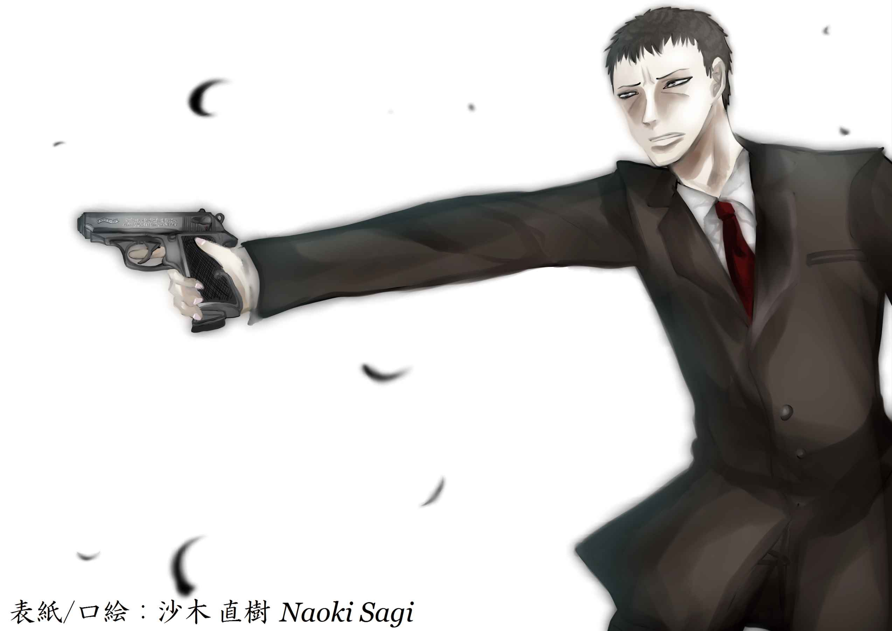
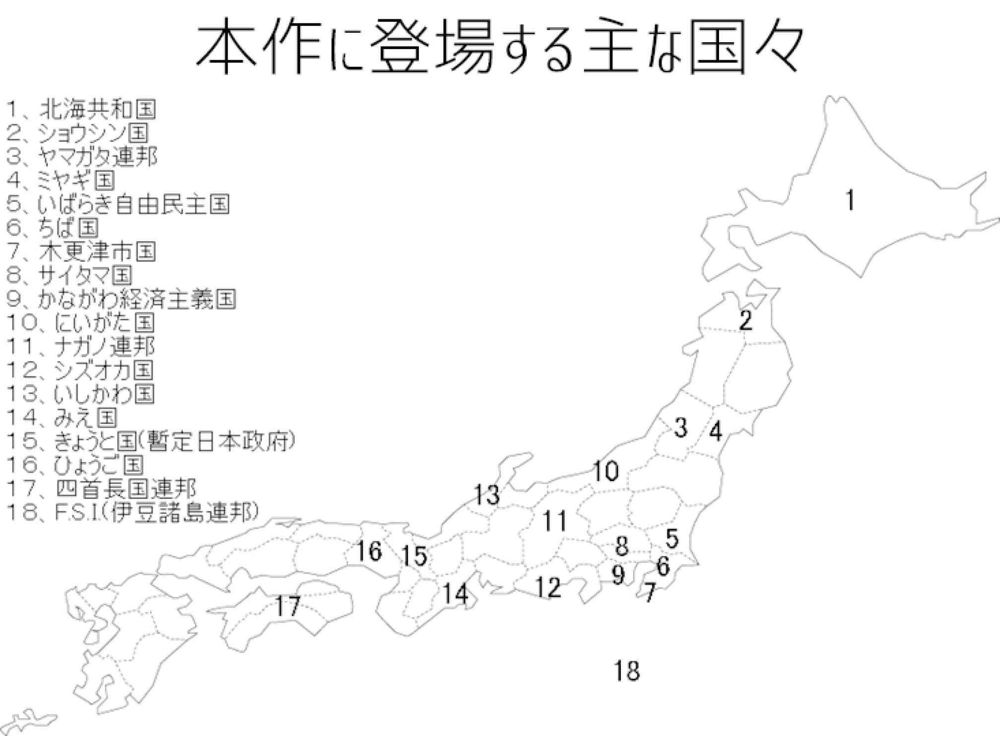
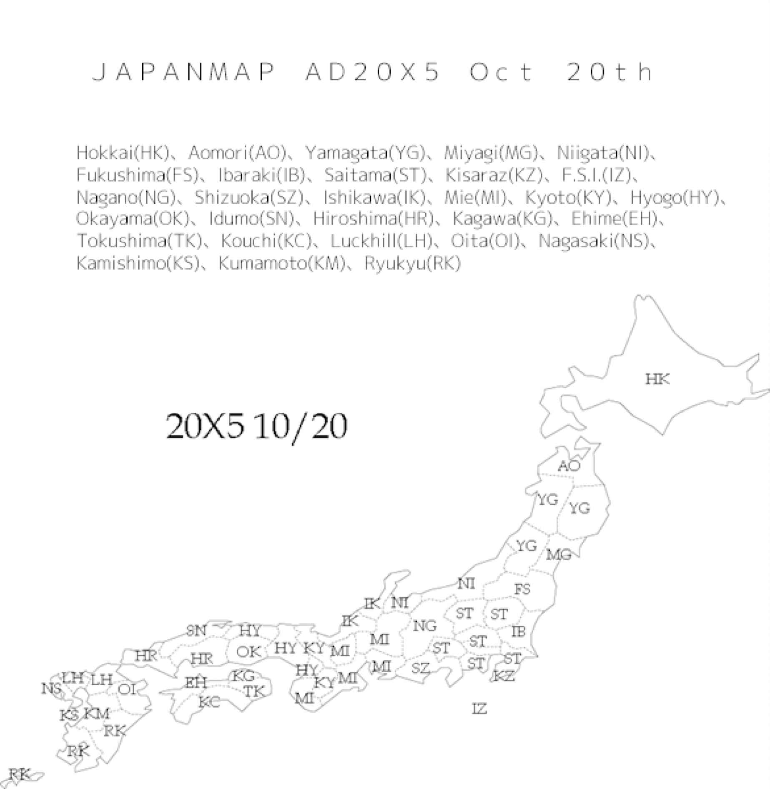
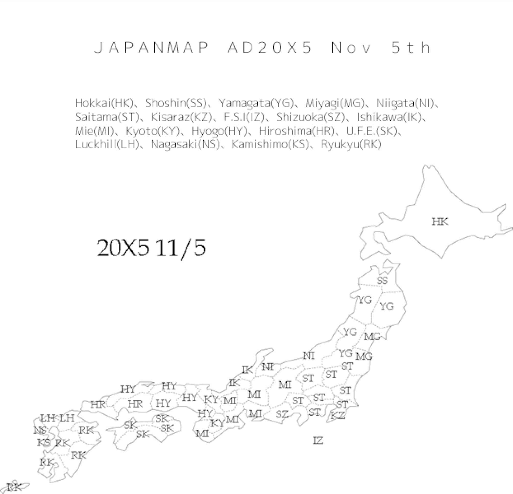
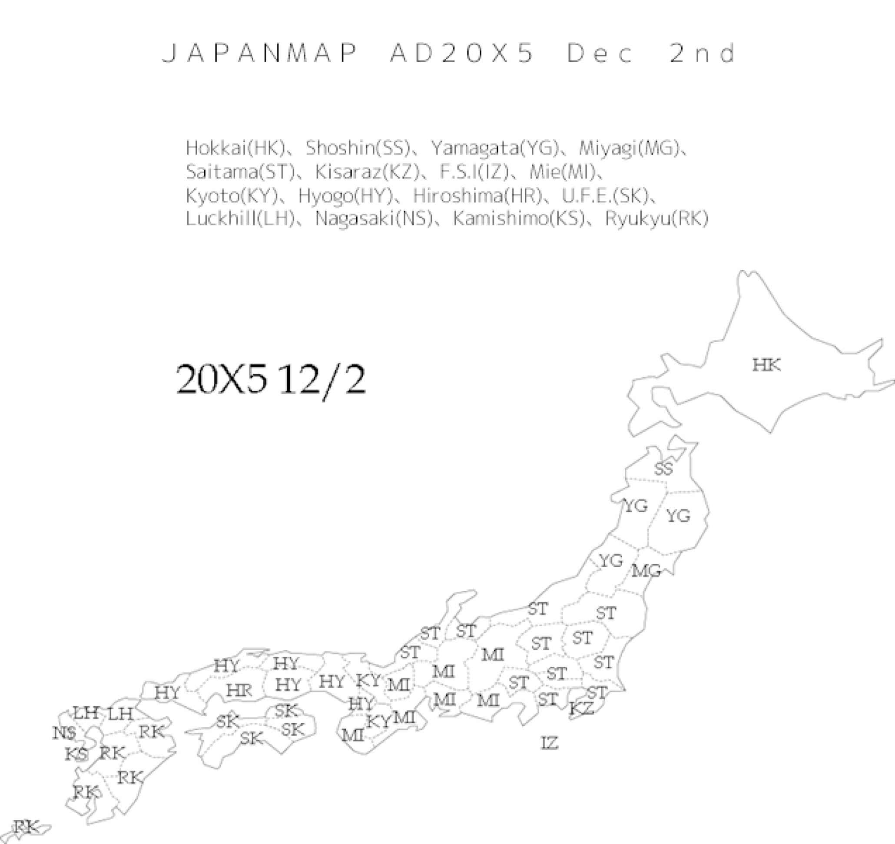

| Re;Union | |
| 彩田 眞里 | |
| (2014) | |
本書はリフロー形式で制作されています。本文は文字の書体と大きさを変えることが出来ますので、お好みの設定で読書をお楽しみください。

３・１１から数十年経ち人々の記憶からあの恐怖が薄れかかっていた二〇Ｘ五年八月二十一日、相模湾、東京湾北部でマグニチュード七・五と七・三の同時地震が発生。地震が夕飯の時間帯に起きたために、首都圏は壊滅的な被害を被った。それからさらに追い討ちをかけるかの如く同年九月二日、オオサカの中心部を走る上町 断層帯 がマグニチュード七の地震を発生させる。これら三つの大地震で日本の政府の機能はほぼ麻痺した。日本国民は動揺を隠せない。そんな中、国連が日本をアメリカ、ロシアと欧州連合で共同管理するという案が出されたが、時の首相足立 浩志 はこれを承服出来ないとして拒否。同年九月十九日、足立首相は青梅の議事堂に全国の知事を集めた。混乱のさなか、さらに混乱を招く様な宣言を首相はそこで行ったのである。それが「四十五道府県独立宣言」(トーキョーはサイタマに吸収合併、オオサカはきょうとに吸収合併された)であった。当然ながら国連もこれには驚きたまげた。結局正式な国として認められたのは、きょうと国(暫定日本政府)、琉球連邦、北海共和国そしてみえ国のみとなった。果たして日本は再興する事が出来るのか。

サイタマ国の首相坂戸 博 直 (六十四)は悩んでいた。
この乱世とも言える時代であまりヘマをするような真似はしたくない。一国のリーダーとなったのは(まあそれほどでもないが)嬉しいが、その分責任が重くのしかかって来る。ヘマをすれば政界から引退をしなければいけないほど、今は震災の対応、近隣国との外交関係で緊迫しているからだ。
(出来るならば、責任をあまり負いたくない)
彼は心底そう思っていた。そんな訳で首相室内に信頼の篤い専任秘書を二人呼ぶと、どうすれば責任をあまり追わずに済むか共に考える事にした。
答えはすぐ出た。
サイタマ国のご隠居様になる事が得策ではないかと意見が出たのだ。と言う事で、新たなサイタマ国のリーダーを決める事となった。責任を代わりに負って貰う事が前提なので動かしやすい人材であることが重要であった。
と、一人の秘書が坂戸に耳打ちする。坂戸の右唇が上に曲がった。
「そうだ。彼だ。彼にしよう」
坂戸はボソッとつぶやいた。そして秘書にたのんで急いで坂戸のいう「彼」の住所を調べてもらい、そこに向かった。さいたま国総合庁舎から黒いセダンで約二十分、ふじみ野市の「彼」の家の前に到着した。
玄関前の庭に十代半ばの少年と少女の姿が見えた。
「あっ！ 友作くん、後ろに......サイタマのリーダーさんがいるっ！」
三つ編みの少女の丸い大きな瞳が坂戸に向けられた。中身で白髪の坂戸は控えめに手を振り返した。
「本当だね」
友作と呼ばれる爽やかな雰囲気の少年が平然と返す。坂戸は家の門に立って背広の襟を整えると、口を開いた。
「こんにちは。私は、御存知の通りかと思いますがサイタマ首相の坂戸博直と申します......あなたが友作君だね」
友作は少し戸惑った様子を見せて、門の前に行く。少女もその後ろをついてゆく。
「あ、はい。僕が稲城 友作 ですが、何の御用でしょうか」
丁寧に返答する。坂戸は前にも友作の事は見たことはあるのだが、こうやって近くで彼の姿を見ると、整った顔立ち、色白の肌から女に見えなくもないと言う印象を与えた。
(ルックスは最高だな）
坂戸は思った。少し間が空き、坂戸は友作の問いに咳払いをしてから答える。
「君に是非聞いてもらいたい、大事な話があるので総合庁舎で話さないか」
出来る限り平然を保っていたい友作であったが、これには驚いて「えっ！？」と漏らした。
「とりあえず、あなたのお母さんを呼んできたら？」
友作の横で少女がそう囁く。彼は小さく頷いた。
「今から母を呼んできますので、少々お待ちください」
そう言って友作は、いそいそと家に入って行った。二十秒もしないうちに、茶髪のパーマでセミロングの髪をした友作の母が家の外に出てきて、門の前に立った。
「あなたが坂戸首相......身分証明書を見せて下さい」
出てくるなり、坂戸首相に強い口調でそう言い放った。彼女は三十代後半だが、二十代にも見える若い顔つきであった。
坂戸は少し驚いた表情を見せて、背広の内ポケットにある身分証明書を見せ、革の名刺入れから名刺を一枚とりだして、友作の母に渡した。
「あたしにも一枚お願いします！」
少女が輝いた目で名刺を求める。
「おいおい、蘭々 ......」
友作が苦笑いしながらつぶやく。蘭々と呼ばれる少女は名刺を受け取ると満足気な表情を見せた。
「まあ、暑いので中で話しましょう」
友作の母が家へと誘った。
「じゃ、あたし帰るから、後で報告してねー」
蘭々は友作にニコニコしながら手を振り、ここから右に三軒目の家へ帰っていった。彼女が家の門に入る所を見届け、友作は家に入った。家の応接間で坂戸と秘書と友作の母は、早速話をしていた。たわいない世間話であった。友作が現れ、母の隣に静かに座ると、坂戸は本題を切り出した。
「息子さんにとても大事な話があります。その話を我が首相室で行いたいと思っておりますので、どうかお連れしてよろしいでしょうか」
坂戸は本気だ。その姿を窺い、かなり重要な話らしいと友作も感じた。
「なんの話ですか。ここで話せないんですか」
彼の母は、戸惑いながらも強気に尋ねた。
「ここでは、話せません。内容も秘密です。ですが、これだけは言っておきます。目が出るほど嬉しい話であります」
「何ですか、その目が出るほどの話とは」
「今は秘密です。そもそも友作さんに話す内容ですし......」
「わたしは、友作の母親です。わたしに秘密にされては困ります」
友作の母は頑固な態度を見せた。
「お母さん。そんなに僕を心配しないでよ。もう僕はそろそろ大人にならなければいけないのだから、親の保護の皮を破らなければいけない。社会に顔を突っ込まなければいけないんだ。僕は坂戸首相と総合庁舎で話をする。だから行ってくるよ」
ハキハキと母を説き伏せた。
「そう......だよね。行ってらっしゃい」
彼の強い姿勢に反論することなく、友作の母は優しく返した。
刻は十五時を回っていた。友作は黒いセダンに乗り込むと、母に手を振り行ってくるよと挨拶した。色々な感情が渦巻き母の頬に涙がしたたる。
「いってらっしゃいね......」
「うん。泣かないでよ。僕が恥ずかしいじゃない」
黒いセダンがモーターの駆動音をたてて静かに動き出す。どんどん遠ざかってゆく。
「本当に良い話だといいけれど......」
彼女はそう消え入るように呟いた。
――サイタマ国総合庁舎首相室
「えっ、ええええええええ！」
友作の目が真ん丸に飛び出そうなほど開いて坂戸を見つめた。オーヴァーアクションではない。当たり前の反応である。
「友作君は、私が知っている通り、作文コンテストでは出展する度、何かしらの賞をとっており、サイタマ県主催の弁論大会では、会場のみんなを虜にする弁論を行った。そうそう、私はあなたの小六の時の『ふるさと作文』をよく覚えている。君はサイタマへの想いは人一倍だし、優秀で、行動力があるから、今のサイタマのリーダーになるのにふさわしいのだ」
坂戸はとにかく必死である。それは誰から見ても良く分かる。だが必死に説得すればいいと言う物じゃない。友作は必死に平然を保とうとする。
「僕はまだ子供です。いくら、首相が僕を絶賛しても、社会からの視線は厳しいものです」
「いやいや。子供だから出来ないとか、社会の批判を浴びるとか言いますけれど、大丈夫ですよ。難しい事はもちろん私達が行うので、友作君は国民の顔となってくれればいいのです。
もちろん、私は友作君の補佐となり全力を尽くすので、難しい事は全部任せても良いですよ。まあ、この様な反乱の時期は、年齢関係なく国のリーダーとならねばならない事もあります。例えば、ブータンの第四代国王は十六歳で国王となっておりますし、かの秦の始皇帝は十三歳で王に即位しています」
「この国は民主主義なのですから、王政とは違います。そんな言葉で僕を落とせると思わないで下さい」
「そうですか。でも国民はわたしの様なつまらぬ者より、若く行動力のあるリーダーを求めていると思いますよ。震災で疲れきった人々の心を癒すためにも、君みたいな和やかな者がリーダーになるべきだ。本当に」
「僕でないといけないのですか」
「そうです、あなたでないと行けないのです。私は、サイタマのリーダーはあなたしかいないと思っています」
「しかし、それは国民が決めることです。選挙で選ばれる人こそリーダーにふさわしいですし......」
「この様な時期に選挙なんて時間のかかる事を行っていたら、廻りの国々に取り込まれてしまう。だから、私は選挙で選ばれた者、つまり国民の代表として君を推したい」
「............」
長い沈黙の後、友作は座っていた黒革のソファから俯いた状態で勢いよく立ち上がった。そして顔を上げ、坂戸に目を据えると睨みつける様にジッと見つめた。
その視線は覚悟を決めたようにも見えた。友作は大きく息を吸い、静かに吐くと、硬く閉ざされた唇をゆっくり開いた。
「そこまで言うのならば、この稲城友作、サイタマの為、世界の為に、日本を再興させてみせましょう」
深く威勢のある声が総合庁舎の応接室を包む。美白の少年の勇姿が夕陽に照らされていた。
「ありがとう。本当にありがとう」
友作の言葉に思わず坂戸は跪いて涙ながらに感謝の意を表した。本当に坂戸としてもこれは嬉しかった。
「さて、これは、リーダーの仕事をまとめた書である。必ず読むのだよ」
坂戸はそう言って、分厚い書類を友作に渡した。
「ありがとうございます。最後に確認しますが、本当に僕でいいのですね」
「もちろん！ あなたしかいません」
坂戸は胸を張って言った。それから坂戸は秘書に友作を家をまで送り、彼がサイタマのリーダーに任命された事を友作の親に伝えて来るよう命じた。友作が総合庁舎から出たのは、十八時だった。二時間はずっと話をしていた事になる。
早速、友作は帰りのセダンの中で例の書類に読みふけっていた。
「良かったです。首相......いや抑止力長も本当に嬉しそうでしたから......」
「ヨクシリョクチョウって？」
友作は読んでいた書類から目を離し、直ぐ反応した。
「え......あ、詳しい事はもちろん、その書類にありますが、まあ簡単に言うと、ほ、ほら、各権力が暴走しないように監視するリーダーのことですよ」
秘書がしどろもどろで答える。そうですか。と友作は平たく答えたが、頭の中ではそれを理解するのに混乱していた。書類から抑止力長の頁を見つけだし、読んだ。読んでいる裡に友作は気持ち悪さを感じた。もともと車に酔いやすいのも有ったが、それだけでなく「抑止力長」の恐ろしさに直面したからである。
(そうだったのか。僕に責任を負わせて、坂戸さんは抑止力長という権力の監視を行う職務に就く事によって、国のリーダーにならなくても、あれこれと権力に首を突っ込む事が出来るようにしたのだな)
友作はこれにかなり腹立たしく思いながらも、坂戸を信じる事にして、気をなだめた。そうこう考えているうちに、友作の家に着いた。友作の母は黒いセダンが着いたのを家の窓から見届けて、玄関の前まで出てきた。
「ただいま」
「おかえり......その書類なに？」
友作の母はその分厚い書類を見て思わず訊いた。友作が口を開こうする前に、秘書が先に口を開く。
「では、今日の話を致しましょう」
「そうですね。どうぞお上がりなさって下さい」
友作の母は書類よりも例の話が気になってしょうがない。秘書を家に迎えると、応接間でその話はすぐに始まった。無論、友作がサイタマのリーダーに任命された事を知ると、友作の母は正気を失い倒れそうになったのだとか。やはりこれは目が出るほどの話であった。
翌日、それはいつもと変わらない週はじめの月曜日であった。友作も普通に登校して、自分の席に腰掛けた。
(彼らとも、今週で最後か......)
周りで昨日あったテレビの話をする女子達や、じゃれ合う体育系男子達を見渡し、そう心の中で呟いた。友作は一週間後の土曜日にサイタマ首相の任命式に出て、晴れて一国のリーダーとなる。友作はため息をついた。このことに友作の友人でスポーツ刈りの江藤 がツッコミをいれた。
「友作だいぶ疲れてるやん。どうしたの？」
「いや......母さんに昨日、とても叱られまして」
「へえー、友作もママに叱られるんだ。見て見たいなそのすがた」
江藤は友作の異変に気づいていながらも、笑っていた。友作が母に叱られることなんて本当に滅多にないから珍しくていじってみたのだろう。友作は昨日の晩の出来事を思い出し、またもうなだれ、机にひれ伏せた。
「なんだよー。悪かったよぉ」
江藤はそう唇をすぼめて友作から離れた。
友作の頭の中では、昨日の晩の出来事が蘇ってきた。
「友作っ！ あんたリーダーになるってどう言うことだか分かってるのっ！」
「いくらね、坂戸さんがね、あんたを推薦しても、私が認めないっ！ ただでさえワタシのやっている看護師の仕事も責任重大なのに、国のリーダーとなったら......友作はこの責任という二文字がどんだけ重いものか知ってんの？」
「うぅっ......私の友作、行かないでよ。あなたにこの仕事は早すぎるわ......」
「高校はどうするのよ！ 勉強する時間はいつ取るのよ！」
「友作......まだ十四年しか生きてないのに......」
とにかく、秘書が仕事を済まして去った後、友作は母に振り回された。友作の母は友作がサイタマの首相に任命される事に怒って、泣いた。友作は必死に説得したが、意味がなかった。友作も母の気持ちは良く分かっていた。だから友作は彼女にそれを説得するのも正直つらかったのだろう。
結局、午前中の授業はその様な事を思い出していたので一つも身に入らなかった。
「友作、朝からこうなんだよー」
「マミーに怒られてコレだぜ。まったく、エリートさんは叱られるのになれてないねえ」
友作の周りをクラスメートが囲む。
「疲れている、原因ってもうひとつあるけどね」
蘭々が話に割り込む。
「何だい、蘭さん。もしや......ウフフ」
「そんなウフフなことやってませーん。昨日ねえ、友作くんはね、」
「言わないで下さいよ」
友作が止めようとする。
「聞きたいなー。蘭さん続けてー」
「うんっ。友作くんはね、今のサイタマのリーダーさんに連れて行かれたらしいの」
「えーマジで！ 何を今度はやらかした。友作は！」
「連行やん。でも今日いるしー」
例の事で盛り上がる友作の友人達に腹がたち、友作は蘭々のスカートを引っ張った。
「あぁん。なにするのよぉ」
「あとで、お ま えは、お仕置きだ」
すると、友作の友人達は目を丸くし、
「きました！ きました！ お仕置き発言！」
と揃ってはやし立てた。
「蘭々は口が軽いんですよ。前から注意してるのに全く直らない。こりゃもう、お仕置きしかないでしょ」
友作はそう言い捨てる。
「ごめんなさい。だってみんなが聞きたがってたんだもん」
蘭々は、頬を薄っすら赤らめプイと友作から目を離した。
「かわいいな～蘭ちゃんは」
友作の友人の一人が蘭々の幼稚な行為に対してはやす。蘭々は十五にしてまだ行動や言動が幼稚なところがある。女子生徒からは男子ウケを狙っているのではと、うらめしそうに噂されるが、果たしでどうなのか。
「羨ましいね～友作は」
「そうかな？」
「何をとぼけてるんだよぉ」
「彼女とは、幼なじみ。そんなにはやされても何も言えないよ。第一この僕が恋などすると思うかい？」
友作は真面目な顔で、さらっと受け流した。
誰も反論しなかった。
一日の授業が終わり、蘭々は友作と一緒に帰路を共にした。
「ね〜昨日の、あの話してよ」
蘭々がこの話を振ることは友作にはすぐ分かった。
「今日の昼のこともあり、ダメだよ。あと坂戸さんと約束で一週間はその事について口を開いてはならない事になっているから......」
「やだやだ。あ、あたしだって友作くんと約束したよ。あとで報告してって」
「坂戸さんと蘭々との約束、どっちが天秤に乗せた時重いと思う？」
「えっ、もちろんあたしとの約束でしょ」
「本気でそう思ってる？」
少し間がおいてから、ふて腐れたような返事がもどってくる。
「坂戸知事より、あたしの方が大事でしょっ？ ね、ひどいよ。友作くんひどいっ。でも、あっ、今日、親いないからあたしの家で話そうよ。友作くんが言うまで返さないから」
友作は何も答えず、顎を少し上げ雲なき秋晴れの空を見て蘭々の話を聞いていないフリをした。
「いじわる」
蘭々がふくれた。
結局、友作は蘭々の家に上がり、二階の彼女の部屋にあぐらをかいて座った。真白いベッドと白く塗られた机がバランスよく配置されている南向きの明るい部屋だった。蘭々が菓子と缶ジュースを持って来た。
「あ、ありがと」
友作はつぶやくように言った。
「さあ、言うまで返させないからねっ」
馴れ馴れしい声の調子で蘭々は返し、友作の真横にぴたりとくっつく様に座った。
「近いですよ」
友作が決まり悪そうに言った。
「だって寒いんだもん」
彼女は微笑んでいる。嬉しそうだ。蘭々は缶ジュースをパカと開ける。
「変な冗談よして下さいよ」
友作が消え入る様に呟いた。友作も同じくもらった缶ジュースをパカと開け、一口飲んだ。
沈黙。
「ねぇっ、話してよ」
うつむいて、友作に話しかける。
「隠し事はなしだよっ」
続けて言うが、友作は口を開こうとしない。それでも蘭々がごねるように聞いて来るので、友作は持っていた缶ジュースを盆の上に置いて、目を細めて蘭々を睨んだ。
「蘭々に言うと、ろくな事になりかねない」
蘭々はうつむいたままだった。友作は「帰るよ」と言い、あぐらからの態勢から左の膝を立てて立とうとした。一瞬間、蘭々はその華奢な白い両腕を友作の肩に回して押し倒した。蘭々の足に盆の上の缶ジュースが当たり倒れる。
「なにすんだよ」
反射的に友作が顔をしかめて言った。
「だめっ、行かないでよ」
涙ぐむ蘭々と友作の目が合う。友作は目を離す。
「一人でお留守番なんてさびしいよ」
蘭々が甘える。
友作は思わず、にやけてしまった。
「離して下さいよ」
「やだ......」
「本能的かつ、低レベルな欲求だと思わない？」
「ひどいっ。そんな言い方するなんて」
「だって、マズローの欲求階層説で生理的欲求は一番低い欲求としているんだもの」
「バカみたい。友作くん」
そう言って、さらに友作が逃げられないように身体を密着させた。
「お願いだから、やめてくれ......」
昔から蘭々は甘えっ子で、ストレスが溜まると駄々をこねてくっついてきたのでこう言う事は想定内の事ではあったが、今日は過激すぎると友作は思った。耐えられなくなった友作は蘭々の両肩を手で掴み、思いっきり引き離した。蘭々は横に転がり倒れ、友作はその隙に身体を起こした。
「痛っ！」
危うくおかしくなる所だったと友作は胸を撫で下ろした。
「もう少し大人になって下さいよ」
友作は立ち上がると蘭々に向かって声を少々荒くした。横になったままの蘭々はひどく赤面し、友作を見つめてむせび泣いていた。友作はカバンを持って彼女の家を後にした。友作はなんとか坂戸との約束を守り抜く事ができた。
九月二十八日の金曜日、友作は中学生活最後の日をいつも通りに過ごした。学校の誰にも明日からの事を友作は伝えていなかったので、お別れパーティーとかそう言うものはなかったが、かえって彼にとっては気が楽であった。
放課後、友作は校舎内を廻ってから、学校の外周を一周した。グラウンドではサッカーや野球をする少年達のはつらつとした姿が見えた。武道館からは、ターとかヤーという威勢ある叫びが聞こえる。彼らは皆、幸せそうであった。
(彼らに最高の未来を見せなければ)
友作は心の中で決心し、明日からの気合を入れた。一周すると友作は校門の前で、夕陽に照らされ立派に映える校舎を寂しげに眺めた。
「楽しかったよ」
友作はポツリと呟いた。それから、家への道を辿った。新しく閑静な住宅街を抜け、低層マンションの並ぶ通りを過ぎ、友作の住む住宅街に入る。
何気なく、友作は右を向いた。蘭々の家であった。
(そう言えば、あれ以来彼女と話していないな)
友作はふと、この事に気がついた。心の中ではかなり驚いていた。なぜなら、友作と蘭々は幼なじみで一日に一回は喋る仲であったからだ。だが友作はそこを素通りした。寄る気にもなれなかった。
土曜日の朝、友作は母親に買ってもらった紺色の背広を羽織った。友作にとって初めての背広デビューである。
「似合っているわ」
友作の母は、微笑みを見せた。
「本当にありがとう。母さん」
友作も嬉しそうだ。友作の母も、友作がサイタマのリーダーとなる事について受け止めなければならなかったから、いつまでも息子に対して非協力的ではいけないと思って、友作の背広を買い、友作に社会人としての作法を短期間ではあったが通用する程度に教え込んだ。
外では、既に白銀色の高級車「ＦＵＧＡ」が止まっていた。支度を終えて友作と友作の母が家の外に出ると、車の運転席から二十代後半のスポーツ系の男性も出てきて友作の家の門まで来た。
「おはようございます。僕が稲城友作です」
友作はその男性に挨拶すると、男性は小さくお辞儀した。
「今日からあなたの秘書を務めさせていただく、大吉 英 仁 と申します」
英仁と呼ばれる男性も挨拶を返し、友作と友作の母に名刺をサッと渡した。それから友作と英仁は握手を交わす。スーツをビシッと着こなし、やる気溢れる顔つきの英仁に友作は好感を抱いた。
「秘書までつくのですか」
友作の母は驚いた表情で英仁に訊く。
「もちろんです。若い友作君のお供がいなければ友作君はさぞかし大変でしょうから」
友作は車に乗り込むと、サイタマ国総合庁舎へと向かった。
二十分で総合庁舎に到着し、友作と英仁は総合庁舎の広々としたホールに入った。ここで任命及び就任式が行われると英仁は友作に伝えた。早くもテレビ局の者や新聞記者が詰めかけていた。友作は指定されたパイプ椅子に腰掛けた。周りにいるものは皆三十代から七十代の人々であった。友作のほかに十代は一人もいない。友作はだんだん緊張して来た。
「この会場の後ろにいるから、友作君、頑張れよ」
英仁は友作の肩に右手を乗せてそう言うと、会場の後方へと去っていった。英仁がいなくなり、ますます友作の緊張が高まった。左隣に五十代のぽっちゃりとした、髪の薄い男性が腰掛ける。男性はふと友作の方に目を向けた。そして、口を半開きにしながら友作をまじまじと眺めた後、彼の左肩をつついた。
「君、子供だね。なぜいるの？」
怪訝な口調で尋ねる。
「今回の就任式に坂戸首相から招待されているからです」
「へえー。君みたいな若造が招待されるとは......。いやおかしいぞ。君、本当にここに呼ばれたのかね？」
「はい。ここに座っておる方々は皆、国の幹部となる人達ですし......」
「よく知っておる。――って君も国の幹部となるのか？」
「はい。そうです。役職はまだおっしゃる事ができませんが」
友作は敢然と答える。改めてその男性は友作をまじまじと眺めると、難しい表情で顔を前へと戻した。そして、「変な時代となったよなあ」と誰に問う事なく呟いたのであった。
まもなく出席者が全員集まり、任命及び就任式が始まった。
その頃には友作の緊張も少しはほぐれて、落ち着いていた。司会は今体制の閣僚から任命し始めた。
任命は同時に就任を意味する。当然、任命以前に彼らがどの大臣となるのかは知っている。その様な理由によって、任命式と就任式は同時に行われる事となっていた。友作はこの閣僚の任命時に秘書から「外務大臣と防衛軍最高司令官の名前はしっかり覚えて」と忠告されていた。もちろん他の閣僚の名前も覚える様に努力した。
「外務大臣、出口 慎 」
司会が低い声で任命する。出口慎も他の閣僚と同じく、壇場に上がり面白味のない普通の就任演説をすると、壇場を降りていった。彼の特徴と言ったら、円形脱毛症であることであった。
そして、閣僚任命最後を飾るのが、防衛軍最高司令官であった。
「防衛軍最高司令官、武石走 」
「はっ」
低くとも良く透き通った美声の返事が会場を包み込んだ。他の閣僚は任命された時、何の返事もなく壇場を上がっていったから、友作は武石に好感がもてた。
壇場に繋がる階段を武石は堂々と登る。さすがは軍の最高司令官だと友作は彼に見惚れた。武石は五十代でがっしりとした体格の大男だ。髪も豊富で半々に綺麗に分けられ整えられている。
壇場横のパネルに武石の経歴が映った。〈入間市生まれ、入間市在住、国防大学校人文学部卒業、日本国時代の陸上国防軍幕僚長を務める〉と映されている。武石は壇場に上がり壇場中央のスタンドに立てられているマイクをスタンドから離して手に取ると、「こんなものは要らないですね」と言って再びマイクをスタンドに戻した。
そして、生声の威勢よい就任演説が始まった。彼の演説が終わると、拍手が巻き起こる。
(武石さんかっこいい。かっこよすぎる)
友作はすっかり武石を気に入った。そして次、司会から任命されるのがサイタマ国首相の友作であると彼が認識した時、彼は一瞬、自身の心臓が大きく高鳴るのを感じた。彼はうつむいて、目を静かに瞑り、息を大きく吸い込むと、静かにこれ以上吐けないという所まで息を吐き出した。友作は心を落ち着けて冷静になった。こう言う事には慣れていると友作は自分に言い聞かせた。彼は再び壇場を見上げて壇場左側の司会に目を向けた。司会と目があう。司会は少し頷いて、友作も頷き返した。
間。
「さて、サイタマ国内閣総理大臣の任命を行います」
司会は、ここで言葉を一回区切った。そして少し微笑った。会場の後ろの方でどよめきが起こる。
(やめてくれよ、緊張するじゃないか。早く任命してくれよ)
友作はそう思った。
間。
友作の緊張が再び高まる。友作は自分が司会にいじられている様な気がした。友作の心臓がどくんどくんと波打つ。
「サイタマ国内閣総理大臣！ 稲城友作！」
閣僚の任命時の低い声と変わって高らかな声で任命した。
「はひっ！」
反射的に友作は返事をした。緊張のあまり声が裏返ってしまった。会場は笑いに包まれたが直ぐ静かになった。そして会場にいる者皆、唖然、呆然した。友作は動揺しそうになったが、背筋を伸ばして堂々と壇場に上がった。
(ここで弱い所を見せたら負けだ)
友作はそう自分に言い聞かせた。後ろでブーイングらしい騒ぎが聞こえたが、友作は気にしない。そして壇場の中心で仁王立ちになった。友作は自身の肝を座らせるため、会場の出席者と目を合わせた。騒ぎをたてる会場の一人一人にだまれと無言のメッセージを目で友作は送った。辺りは静かになってきた。友作と目を合わせたものは、驚いた表情を見せるものや、口を波の形にするもの、睨み返すが友作の目力に負けて目をそらす者などと様々である。坂戸が心配そうに慌てて壇場を駆け登ってきた。友作はスタンドに立てられているマイクを取って、マイクを口に近づけた。
「僕が、今壇場に上がって来た坂戸前首相に推薦されサイタマの首相となる事になった、稲城友作と申します」
そして一度、友作はマイクを口から離した。
「下がっていて大丈夫ですよ」
友作は坂戸に顔だけを向けて、自身が大丈夫である事を告げた。
「いや、私の方からも友作君について説明しなければいけません」
坂戸はそう丁寧に切り返した。友作はマイクを坂戸に渡した。坂戸は壇場の中央に立ち、友作はその右側で堂々と立った。
「こちらが今紹介にもありました様に、私が推薦した、稲城友作です」
パネルには、友作の経歴が映っている。〈上尾市生まれ、ふじみ野市立上福岡第一中学校在学、サイタマ県主催中学弁論大会最優秀賞受賞、英検準一級、作文コンクールで多賞受賞、日本教室ディベート連盟主催全国ディベート甲子園優勝。中学校では生徒会長を務めた〉出せる経歴は全部出してある。坂戸が続ける。
「友作君は、本当に若い。だからと言って馬鹿にするのであれば、あなた達は恥をかきますよ。パネルにもある様に彼は英才でありかつ、サイタマ想いだ。また、あなた達と違って若くて行動力がある。汚れてもいない、清らかな心の持ち主だ」
さすがに言い過ぎだ、と友作は思った。坂戸は友作にマイクをにっこり微笑って手渡した。
「私には、叶えたい未来が三つあります。一つ目は、サイタマのみんなが幸せに暮らせる様に所得をあげること。二つ目は、震災で壊滅的被害を被ったトーキョーを緑豊かな都市として再生させること。三つ目は、足立首相が終わりにさせた日本を再興させることです！
そしてなぜ坂戸さんが私を首相に推薦したのか。さっきの事もありましたが実際のところを申し上げますと、あなた達、閣僚さんに仕事を頑張って欲しいからです！ 私はまだ子供で頼りないところがあります。なので、閣僚さん一人一人が頑張らねばいけない事も沢山あります。何もかも首相任せには出来ないから、かえって本来発揮されるべきあなたの能力が発揮され、それがサイタマの発展に繋がるのです。共に最高のサイタマを作ってゆきましょう！」
友作がはつらつとした口調で演説をした。友作は会場のみんなに両手で手を振る。拍手喝采が沸き起こった。しかし一部の者は乗る気がないのかうなだれていた。それでも友作は十分と言えるほどの反応があって満足な気持ちであった。前首相の坂戸から壇場で首相任命書を礼儀正しくもらうと、友作は満足気に壇場を降りた。
最後に司会は、「抑止力長、坂戸博直」と抑止力長である坂戸を任命した。
会場は少しざわついたが、友作が呼ばれた時ほどではなく、あまり会場にいる者も「抑止力長」を意識する事はなかった。サッと就任演説及び任命書の授与が行われて、坂戸は微笑みながら壇場を降りた。
任命及び就任式が終わると、その会場で昼食会が行われた。友作は新しい閣僚と一通り面会を果たしたが、昼食をとり終えると、帰り支度を始めた。
「では、初めての首相のお仕事をして来ますので、失礼致します」
友作は会場にいる人々にそう告げると、秘書の英仁を連れて会場を出て行った。途中、記者団に囲まれた。
「サイタマの最年少のリーダーに選ばれた感想は？」
彼らは四方八方から友作に色々と訊いてくる。
「記者団より今は被災者の方々と向き合わなければなりません」
それに対し友作はそう大声で怒鳴りつけるように言って、そこを強行突破した。実際は記者団があまりに多すぎて誰が何を言っているのか友作にはさっぱり分からなかったので、時間があっても答えるつもりはなかった。二人は車に飛び込む様に乗り込んだ。物分りの悪い記者はそれでもついて来る。
「なんでこんなにしつこいのでしょうか？」
友作は記者の態度に怖気づいて英仁に訊いた。
「あれが彼らの仕事ですから。情報を集められるのならば彼等はどんな手でも使う。まあ、友作君、これからは彼等とも多く関わる様になるので慣れてください」
「は、はい」
友作は完全に呆気に取られた状態であった。
初仕事は、震災で壊滅的被害を被ったトーキョーに行って世田谷区にある住宅地のがれきの片付けをＮＰＯのボランティアと共に行った後、杉並区の避難所に行き被災者を励ましに行く事であった。この予定はもちろん友作本人が考えたもので、被災された方を一人でも多く元気付けたいという理由からであった。荒川を越えトーキョーに入ると徐々に重い空気が漂い始めた。友作は震災以来、トーキョーに行っていないので、これが震災以来初のトーキョーとなった。
「一応、車内でもマスクを着用して下さい。この辺りはまだ捜索の手が回っていない所もありますから」
英仁は友作に使い捨てマスクをサッと渡した。
「あ、ありがとうございます。え、その話本当ですか？」
「その話って？」
「捜索まだしていないという事ですよ」
友作は少し憤りながら言った。
「仕方がないじゃないですか、トーキョーは狭くて密集しているから捜索しにくい」
「他国から支援して貰っていないのですか」
「ああ、あんまり......混乱していたからね」
「ダメじゃないですか、早速他国の捜索及びがれき撤去の支援を行ってもらえる様に外務大臣を通して世界に発信して下さい」
友作は鋭く目を細めながら、口を尖らせた。
(なんだよこいつら、閣僚たちは怠けているのか？)
友作の命令に英仁は少し戸惑いながらも、少し間をおいた後、「分かりました。後で外務大臣に報告しておきます」と丁寧に返答した。
友作は車窓から変わり果てたトーキョーの姿を見るたび驚き、悲しむ表情を見せた。
「ここの辺は特に地震による火災で多くの方が亡くなられた地域です」
英仁が声のトーンを落として説明する。
友作はその黒い風景を眺めて現実に起きている事だとあまり理解できなかった。友作もこの辺りは火災旋風であまたのものが焼き飛ばされ、多くの者が亡くなったと言う事実は新聞やニュースで知っていた。しかしこれがサイタマのお隣のトーキョーで起きたと言われるとあまりピンとこなかった。
車窓から見える風景は、全て炭素と化した炭の造形であった。友作は中学校の理科の授業でアルミホイルに花とか鉛筆をくるんで、思い切りガスバーナで熱して、炭にした授業を思い出した。色鮮やかな花も、最初は針だけ黒かった鉛筆も、数分のうちに黒い物体と化した。
この風景は、理科の実験で起きた事の延長とも言える。この街は蒸し焼きにされたのだなと友作は理解した。四十分掛かってようやく現場に到着した。
既にボランティアはがれきを片付ける作業をしていた。友作と英仁は作業着に着替えると早速ボランティアとがれきの片付けを始めた。
「若いからなんでも出来る万能リーダーですねぇ」
作業中、地元紙の新聞記者が友作を面白がりながらそう褒めていた。
次に友作達は杉並の避難所に行き被災者との交流をした。友作はここで被災者の方々に、より良いトーキョーの復興を約束した。避難者からの、友作がリーダーになった事に対する反応は、驚きと不安もあったが、友作を見て一安心したと言う事であった。
初めての首相の仕事を終えて友作が家に帰ってきたのは、十九時半であった。車が家の前に止まった事に気づくと友作の母は心配そうに玄関から出てきた。が、友作が元気に「ただいま」と言うと、友作の母はホッと一息を吐いて「おかえり」と出迎えた。友作は後ろを見た。車は既にいなかった。
「あ、そう言えば今、蘭ちゃん来てるわ。友作に会いたいって」
「蘭々が？」
「うん。ちょうど十分前に来たよ」
そう言うと、友作の母は玄関のドアを開け先に彼を入れた。友作はダイニングをちらと見た。蘭々が少し頭を下げて口元を上げて手を肩の辺りで小さく振る。が、目は微笑っていなかった。
(なぜ来た？ あれの事か)
友作はそう思い、やぁ、とやる気のない返事をして、洗面所に向かった。
テーブルには、友作、蘭々、友作の母親と囲んではいたが、夕飯をとるのは友作だけであった。
沈黙。
友作の母が一方的に喋る。
「今日、ニュースで見たよ。友作すごかったわ、かっこ良かったよ！」
「近所の方がわたしの所まで驚きに来たのよ！ 『友作君はすごいわねぇ』って」
友作は、母に視線を合わせた後、蘭々の方をちらと向いた後、母に視線を戻した。友作は少し睨んでいたかもしれない。友作の母は直ぐ彼の無言のメッセージを受け取った。
「蘭ちゃんはね、昼のニュースで友作がリーダーになった事を知って、ここに飛び込んで来たのよ。で、友作がいないから、後で出直すって。で、今さっき来たのよ」
友作はうんと頷いた。
間。
「どうしたの？ 友作も蘭ちゃんも？ お母さんがいて恥ずかしいかしら......」
間。
(そりゃ恥ずかしいよ)
友作は月曜日の事を思い出した。友作はいつにないまずい夕飯を食べているなと感じた。友作はこの状況に耐え切れず、「ごちそうさま」と言って、ダイニングを抜け出して彼の部屋にいそいそと向かった。
友作はベッドに倒れこんだ。それからドアの方を向く。いつの間にかドアの前で蘭々が立っていた。
「いい？」
蘭々は恥ずかし気に両手を腰の後ろにおいて訊いた。
「ああ」
友作が素っ気ない返事を返した。
蘭々は静かにドアを閉めて、友作のベッドの隣で友作に向き合うようにして正座した。
「バカでごめんね。......月曜日はあたし、おさるさんだったよね。友作くんに嫌な想いさせちゃって、ごめんね」
蘭々はベッドで横になっている友作を見つめて、頬を赤らめながら謝った。
「別にいいよ。僕は蘭々が寂しがり屋である事をよく知っているから......」
「ありがとう。でも、本当の事を言えば、月曜日に伝えて欲しかったなぁ。友作くんが伝えてくれれば、あたしそれについて色々と言っていたのに」
「もし僕が蘭々にこれを伝えていたら、蘭々はなんて言った？」
「え......それは、ね、サイタマのリーダーなんかにならないでって」
「ふぅん」
「いや、今でもなんないで欲しいよ。――ねぇ」
「何？」
「リーダーの仕事を辞退すること出来ないの？」
友作はやれやれとした表情を見せて、体を起こして、ベッドから降り、ベッドを背もたれにして足を伸ばした。蘭々もベッドを背もたれにして友作の隣で体育座りになった。
「やると決めたら、やる。これは任務なんだ」
友作は率直に蘭々の目を見て話した。
「任務？」
「ああ。坂戸さんから課せられた、ね」
「義務じゃないんだから、辞められるでしょ？」
「だめだよ。任務は果たすべき務め。僕は国民の前で三つのお約束をしたでしょ。だから、その任務を果たすべき義務が生じてくるんだ」
「よく分からないよう。でもだめっ。きっと友作くんにしたのは何かの意図があるはずよ。そうこれは、ワナだよワナ」
せがむ様に蘭々は友作がリーダーになった事に反対した。
「分かっている。坂戸さんは抑止力長になる事によって僕の上に立っている。でも世界から見ると僕がリーダーであり責任者なんだ。坂戸さんはこの僕に責任を押し付けたんだ」
「友作くんのバカ。分かっているのになぜ引き受けたの？」
「ただ、やりたいからさ。それにこっちも坂戸さんに対する策は考えているからあんまり彼は怖くないよ」
「でも......」
蘭々は肩を竦めて言葉を詰まらせる。友作から彼女の頬が赤くなっているのが見えた。
「なんでしょうか。言いたい事があれば何でも言って良いよ。しっかり返してあげるから」
友作は優しく丁寧に返事をした。蘭々がもじもじとする。
「友作くん分からない？」
「何が？」
「友作くんがリーダーになったら誰かが悲しむ事......」
友作は少し考える。
「僕のアンチの人々ならば、僕がリーダーになった事に悲しむでしょうね。でもアンチは......」
「ちがうよっ。分かんないの？」
蘭々は頬を膨らませて、友作を睨みつけた。
「この鈍感男！」
蘭々はそう言い放つ。
「鈍感な男ですいませんね」
「もうっ。友作くんがリーダーになったら、あたしが悲しむのよっ」
「それって、つまり蘭々は僕のアンチって言う事かい」
友作はとぼけて言った。
「ちがうよー。もうっ。あたしの事見て察する事出来ない？ 友作くんがリーダーになったら、あたし寂しいよ。一緒にいられる時間が短くなっちゃうんだから......」
蘭々は目に涙を浮かべて切ない表情で言った。
「そのぐらい我慢して欲しいよ」
友作が飽きれた表情で言う。
「それに、友作くんに怖い目にあって欲しくないの。だって......あたし......」
「じっ、じっれたいよ」
「あたし......友作くんの事が、好き......だから」
頬を真っ赤にして蘭々は小さな声で言った。
間。
友作はここで蘭々から告白されるとは全く思っていなかったので驚いた。何を言って返せば良いか分からなかった。
「蘭々の気持ちは分かった」
友作は淡々と言った。
「分かってくれるだけでも嬉しいよ」
蘭々はそう言ったが、本当は友作からも『好きだよ』と返してもらいたかったのだ。だが友作は恋をするような男では無いと言う事を蘭々はよく理解していたので、今の彼の反応に満足するしか無かったのである。蘭々は立ち上がって友作の正面に立つと、「じゃっ帰るね」と告げて、軽く手を振った。
友作はぼんやりと彼女の華奢な体を下から上へと眺めた。白いワンピース、白く細い首、艶のある乳白色の顔、ぱっちりとした目、三つ編みのくせのない黒髪、折れそうな細い腕......。
「帰らないで欲しい？」
蘭々が訊いた。
「いや。蘭々は可愛いなと思っただけですよ」
友作はぼんやりとしていたので、躊躇わず率直な言葉が出て来た。
「うふふ。ありがとね」
蘭々は幸せそうな表情を見せ、笑窪を作った。友作も何気なく微笑み返してみせたのだった。
日曜日、友作は一階から聞こえる言い争いの声で目が覚めた。友作はカーテンを両手でバッと開けて道路を見た。「蠣崎 タクシー」が止まっていた。友作の父のタクシーである。
(父さんが帰って来ている！)
友作はそう思うと、階段を滑る様に下って「おはよう！」と両親に調子の良いあいさつをした。丁度、友作の父母は口論中だった。友作の父、季 範 は友作の母から顔を逸らして友作を向いてニヤリと笑った。彼は友作と同じく美形の顔立ちをしているが、日に焼けておりショートの髪型をしている。また、見るからに強そうな身体付きであった。
「久しぶりだな、友作！」
ノリのいい挨拶をした。
「なんで、母さんがいる時に帰ってきたの？」
友作は即、気になっていた質問をした。季範は浮気が理由で友作が六歳の頃、友作の母から家を追い出されてしまい、それ以来は別居していた。が、たまに友作の母がいない時を狙って息子である友作と会っていた。友作は父の事を嫌いではなく、むしろ母親より好きであった。友作は父の面白い所や、かっこいい所を気に入っていたのだ。
「友作、いい質問だな。――何故帰ってきたか。ズバリ、この家でやり直したいからだっ！」
「ダメよ！」
友作の母が即断る。
「あらあら、友 美 さん。俺は友作の父親だぞ。そして、お前の夫でもある」
「でも、ダメって言ったらダメ！」
友美は、完全に頭に血が上っている。
「ここに来るまで、何人抱いたのよっ！」
「おいおい友美さん。息子の前で何を言っているんだ？」
「答えてよっ！」
「ああ、覚え切れないくらい」
「友作。あなたの父さんは、こんな風に極悪な男だわ。追い出してちょーだい」
友美は、友作に季範を追い出す事を強要するような口調で言った。少しの間の後、友作は落ち着いて静かに口を開いた。
「父さんを迎え入れるべきですよ。家族なのに、別居なんてもったいない。家が二つあるなんて金の無駄。それにあの時の別居は僕の意思を反映していない。僕は家族みんなで住みたいんだ」
「馬鹿者！」
友美は友作の頬をぴしゃりとはたいた。叩かれその反動で友作のスリムな体がゆっくり倒れてゆく。
「おいっ！ 息子に何をするんだ！ 友作の言っている事は正論だぞ！」
季範は倒れた友作の肩にそっと両手を乗せて言い返した。
「友作！ 父の姿を見て何だか分からないの！」
「え、父さんは漆黒のスーツに薄ピンクのワイシャツ、シルクの白いネクタイをしているけど......。父さんはこう言うの好きなんですよね」
ああ、と季範は短い返事をした。
「母さん。人を見た目で判断しちゃダメですよ。確かに、ワルそうなイメージはあるけど優しい父さんです」
うんうんと大きく季範も頷く。
「どうせ、友作がサイタマのリーダーになったから、その報酬を求めて家に帰ってきたくせに！」
友美はバッと言い捨てる。
「それは......」
季範は言葉が詰まってしまった。
「あらあら、息子ではなく息子の報酬目当てで帰って来たのね」
友美は、目を細めて季範を冷ややかな目で見下した。
「うっ」
季範は友美を睨み返す事で一杯だった。
「やめて下さいよ母さん！ 母さん怖いです」
「友作の報酬全部盗っていきますよ」
「やめろ友美！ お前それでも友作の母親か？」
「友作をここまでしっかり育て上げたのはあたしですが。あたしはあなたが気に食わないだけ」
「分かった、分かった」
季範はそうなだめる様に言うと友作の肩から両手を離した。友美はうつむいた。
(友作は彼の何も知らない。確かに彼は優しい人だけど......)
ふいに友作が、何かを思いついたような顔をして口を開いた。
「多数決で決めましょう」
やられたな、と友美はうなだれた。
「そうだな」
季範は友美をちらと見て返事をした。
「では、まず季範さんを家に迎えたくない人」
友作は正面を向いてハッキリと言った。友美は即手を挙げた。やった、と友作は思ったが、おそるおそる季範の手が挙がってゆくのが見えた。思わず「父さん！」と友作は声を上げた。友美は胸を撫で下ろし、ため息をついた。
「どうして？」
友作は涙目になって訊いた。
「ごめん。友美が嫌がっていたから。母さんが悲しむのお前も見たく無いだろう。それに俺はこの家にいない方がいい。それは友作の為でもあり、友美の為でもあるんだ」
季範は静かに友作を諭した。友作はぽろぽろと泣いてしまった。
「おいおい、泣くな。これには条件がある」
友美は顔を上げて「何？」とすばやく訊いた。
「俺が今度この家にきた時、暖かく迎えてくれ。......つまり、この家に帰って来たい時に迎えてくれって事。今日みたいな事はごめんだ」
「......毎日、長時間来なければいいわ」
季範の頼みに、友美は少し口を曲げて仕方なく受け入れた。
「まあ、こんな関係でも家族は家族なんだ。これからもよろしくな」
季範がにこやかに言った。朝ご飯を食べた後、友作は季範のタクシーに乗って、山梨国の甲府臣民議会へ送ってもらう事にした。英仁に送ってもらうのを拒否したのは単に友作が父親と話したかったからである。
まず、季範は友作に狭山にある自宅を紹介した。それは二階立ての小さなアパートだ。それから、もし会いたくなったら、ここに来ればいいと言って、合鍵を友作に渡した。季範は友作に部屋をパパッと紹介した後、タクシーに乗り圏央道から中央自動車道に乗って甲府を目指した。
車の中で友作は震災時の話や、首相になるまでの話をした。中央自動車道に乗り、深緑に染まった高尾山が左手に見えてきた頃、季範は首相の報酬の話をしてきた。友作は先ほどの口論で父親が金に困っている事が予想できていたからこの話は来ると思った。サイタマの首相の報酬の制度を友作は一通り語った後、手元に月六十万は残ると説明した。
「で、本当に親として面目ないのだがその半分を父さんにくれないか」
季範は運転中なので前を向いていたが、真剣な表情で訊いてきた事が助手席に座っていた友作にも十分伝わった。
「もちろんです。こんな大金があっても僕の年じゃなんにも出来ませんから」
友作は躊躇わずこれを了解して笑ってみせた。
そうだよなと季範も相槌を打って高らかに笑った。
日本は沢山の国に分裂したが、友作を乗せたタクシーがサイタマ国とかながわ経済主義国の境目である小仏峠トンネル内でパスポートの提示を要求されたり、やまなし国との境目である上野原で入国審査のために車を止めたりする事は一切なかった。だから実際は日本が分裂している事を感じられる機会はほとんどない。しかし国家間の自由な行き来は出来ても、人々の心には国境線がはっきり引かれていた。
実際に震災後や日本国分裂後、各地域は自国と言う狭い殻に篭って行政をしていた。それを打破せねばならぬ、と言う思いで友作は積極的に外交を行う事にした。今回はサイタマのやまなし国編入の議決をとるため臣民議会へ赴く。外務大臣を使う手もあったが、彼はつかえないと友作は判断した。昨日の命令(捜索の支援、がれき撤去の支援)に対して行動していないからだ。今朝確認で出口外務大臣に連絡した時、「そんな事、伝えられていない」と言われてしまった。
友作は唖然とし、あやふやな返事をして電話を切った。もしかしたら秘書のせいかもしれないと思って英仁に連絡した。英仁秘書は、しっかり外務大臣に伝えたと強い口調で言っていたので外務大臣の怠慢だと友作は判断した。
甲府市のやまなし国総合庁舎の正面口で、友作は車を降ろしてもらった。友作は父に小さく手を降り、正面口のロータリーを回って視界から消えるまで、父の「蠣崎タクシー」を眺めていた。そして、次いつ会えるのだろうかとぼんやり考えていたのであった。
さて、このやまなし国総合庁舎は元々県庁舎で名前を変えただけのものである。議事堂ももともとは県議会であった。サイタマも他の国も同じである。
友作が議事堂に入ると、やまなし国の臣民議員から歓声を浴びた。一部の議員が、編入に反対してブーイングをわんわんと起こしていたが、ごく少数だ。やまなし編入に関しては、坂戸が日本国分裂二日後の九月二十一日に関東外交方針会で持ち出して、やまなし国のリーダー二人に理解と了解を得ていた(やまなし国は、武田男臣民長と福家 女臣民長の二人が国のリーダーとなっている。男女平等な国づくりを行う為にこの様な制度を取り入れたらしい)。よって友作は議事堂の演壇に立って、やまなし編入の趣旨を説明し議事堂での多数決による承認を得るのみであった。
国のリーダー二人が編入を快く思っているので、議員もサイタマのやまなし編入を引き受けてくれるだろう。友作はそう考えていたが、気を引き締めて演壇に立った。深呼吸をして、それから口を開いた。
友作は、やまなし編入の趣旨を持ち前の話術をフル活用して演説し始めた。最初は後ろで周りも気にせずブーイングを起こしていた反対議員も友作の演説で大人しくなった。
趣旨を述べ終えると、大喝采が議事堂に響き渡った。マスコミもわんさか騒いでいた。大成功だと友作は心の中でガッツポーズをした。結局、賛成七十六反対四の賛成多数で、やまなし国はサイタマに編入される事になった。余談だが当初、編入に反対の議員は十三人いたそうだ。
友作は反対議員の心も変える凄腕の話術師なのかもしれない。
「スエノリの息子さん、サイタマのリーダーと成ったか。うむ。いいことだ」
「はい。私もまさか友作がサイタマのリーダーになるとは思いもしませんでしたよ。ニュースの速報で見て、テレビに抱きつきましたよ。
親方さん、これで我が陶組も安泰です。親ながら面目ない事をしたが、友作から首相報酬の半分の三十万円を月に一度いただける事になったので、二十万をここに流しましょう」
「おお、そうか。思わぬ収入源。ありがたくスエノリの息子さんから頂戴いたそう」
「親方さん、スエノリさん、友作君の守りはどうする？」
「おいおい、奴らは友作さんの親がスエノリだと言う事を知らないだろ。というか、どうしてサイタマのリーダーを殺るんだよ？ 彼を殺る事に何の利益がある？」
「ないな」
「では、現状維持で？」
「ああ。一方的に金はもらうが友作さんに何かあったらこの御恩はしっかり返そう。で、スエノリはサイタマのリーダーの父親として恥ない様にしろ」
「分かりやした」
全身黒スーツの男達七人が、さいたま市の与野のある十畳のアパートの一室で、何か怪しい話をしている。その中に友作の父の季範の姿もあった。
こここそが、日本国の時代に指定暴力団とされていた陶組 の組事務所だ。本部がしけたアパートの一室なので長年ばれてなく、またブツの売買などは、組長(親方)の陶 晴 貴 がひどく嫌っていたので手を出さず、暴力団の中では比較的に静かな方である。組の存命が第一と考える陶組にとっては存命が危ぶまれる派手な行為をするのは稀。静かに、気づかれず、色々な分野に手を出すのが陶組の戦法である。暴力団対策法が強化されて来たこの時代でも生き残れたのはその静かさからである。
幹部は六人おり、それぞれ市議会議員、ホテルのオーナー、タクシー会社社長、私立幼稚園の先生としっかりした仕事に就いている。そしてこの本部を知るものは、幹部と組長だけであるので、この場にいる七人は幹部と組長である。
足の短いお座敷テーブルに、七人の黒ずくめがその周りを囲む様に仲良くあぐらをかいて座っている。皆、目つきのいい者達ばかりで、顔だけではヤクザにあまり見えない。組長の陶晴貴は五十四歳で、オールバックのごつい男であり陶組の三代目である。が、性格は優しく、正義感あふれる者である。彼が組長となってからは、ブツの売買を禁止させたり、街の地域活性化ボランティアに参加していたりする面があり、一般人も陶組と知らずに仲良くなっている事が多い。また、陶組の幹部は二人が市議会議員をしており、さいたま市の市議会議員が幅 田 芳樹 (三十五)と入間市の市議会議員が猪部 泰 治 (三十七)であり、共に一流大学卒業のエリートである。もちろん市議会議員の議員報酬の一部をこの陶組に回している。そして、蠣崎 広 忠 (五十八)は友作の父のタクシー会社の社長であり陶組の幹部でもある。会社も陶組の金で建て、見事成功したタクシー会社だ。この収益も陶組に行っている。この様に静かに繁栄を目指すのが陶組である。
「どうですかね？ 息子さんは日本を統一してくれそうか？」
晴貴が季範に優しい表情で聞いた。
「友作ならやってくれると思いますよ」
「彼の演説凄いですよ！ ぜひ親方さんも一度聞いて見ては？」
芳樹が半ば興奮しながら言った。
「スエノリの息子さんも取り込みたいな」
晴貴がボソッとつぶやく。
「え、あ、それだけは。まだ私がこんな事しているの知らないですし」
季範が慌てた表情で反対する。
「冗談だよ。なに本気にしてんだ」
「でも、友作がこれ知ったらどう思いますかね？」
「彼なら絶望するかもな」
蠣崎が嘲笑するように言った。
「何がおかしいんですか！」
季範が少し苛立って言った。
「彼、見たけど、正義のかたまりやん。世間が悪と見るものをあまり考えず殲滅しそうな気が」
「何を不吉な事を言う！」
晴貴が叱り付ける。晴貴の横では、季範が蠣崎を睨む。
「ごめんです。ですがそうだろ？ スエノリ」
「まあな。友作と言うと今朝、私が家に行った時に三人で一緒に住もうよってせがんで来たなぁ。あの家にいて彼等に危険な目に遭わせるのはごめんだったから、拒否したが。......本当は一緒に住みたかったけどよお」
季範は弱々しい口調で言った。
「子どもと常にいられない悲しさ......。よくわかるぞ」
晴貴も季範に同調して、涙ながらに本気で言った。晴貴の同調ぶりに、幹部は驚いていたが、平然を保つ。
「俺も俺のかわいい娘といたかった。だが、時が来てここを継がねばならなくなった。だから家から離れなければならなくて......。本当は継ぐつもりじゃなかった......」
「やめて下さい！ 親方さん！ 私達の前では弱い所見せないで下さいよ！」
「何を言うんだお前ら。俺は孤独なんだ。俺の悲しみを聞くのもお前らの仕事だぞ」
晴貴の情け深さは組員みんなが知っている事であった。しかし彼の情け深さが組員の支持を集めているのであるとも言える。
「......最後に一つ。分かっていると思うが、市原会に十分気をつけろ。最近奴らは、昔みたいにハデハデな事をせず俺等の様な真似をして、政治やらに手を出し、根気良く情報収集して、殺る機会を狙っているようだ。もちろん標的は俺等だろう。もし危ない予感がしたら逃げろ。自分の命を第一に考えろ」
晴貴は静かに言った。幹部もみな晴貴の顔を見て、顎を下げた。
十月に入ったが、あまり閣僚は僕の命令を聞かずに何もしないで怠けていると友作は常々感じた。
(やはり坂戸さんが決めた閣僚だから、馴れ合いが生じているのかな)
友作はそう考えた。坂戸が決めた閣僚は確かに長老級の大物政治家や、坂戸と仲の良い者が多い。友作は今日までに指示した事を思い出した。どれもやっていないか中途半端であった。世論調査の政府支持率も友作就任時は三十一パーセントでその後五十八パーセントまで上がったが、昨日の十月二日、三十五パーセントまで下がった。
友作は深いため息をついた。ついに友作は耐えきれずある決断をし、秘書の英仁を会合室に呼んで、打ち明けた。
「僕は今週中にも内閣改造を行いたいと思います。今の閣僚ははっきり言って、ぐうたら閣僚です。坂戸さんが決めた閣僚は僕を馬鹿にして僕の言う事を聞かないので、この際きれいに変えます」
友作は怒った口調で英仁に言った。
「それは、やってもあまり意味がないと思います。――あなたに良い閣僚を見抜ける目があるのですか？」
英仁は強く反対した。友作の口元がへの字になり険しくなる。
「確かに私は政治の経験は浅いですから大物を見抜く目はないかもしれません。......ところで英仁さんもしっかり任務を果たしているのですよね？」
「もちろんですとも。そんなに疑われても困ります」
英仁は胸を張って即答した。友作は疑いの視線を英仁に送ったままだ。
(そういえば、閣僚や他の政治家に伝言を英仁さんによく頼んでいるが、実はしっかり与えられた任務をこなしていないのではないか)
友作は右手のひらで額と目を隠しながら考えた。
「どうするんですか？ 一応、私は反対しますが」
「やるっ！ 改造だ！ 改造だっ！」
友作は声を大にした。足の短い木目調のテーブルと、それを囲む革の椅子しかないシンプルな会合室に友作の声が隅々に響き渡る。
「分かりました。それでは私は忙しいので失礼します」
あさはかな考えだと英仁はため息をつき、部屋を出た。
友作もその後をついてゆく。英仁がエレベーターに乗ったので、友作も駆け込んだ。変に思ったのか、英仁が口を開いた。
「どうしたんですか？」
「僕も一旦下に行って休憩します」
「あぁ」
一階まで降りエレベーターを出ると英仁は一旦、サイタマ国総合庁舎を出て、何かの電話をしてから再び総合庁舎に向かった。
(何の電話をしていたのだろう？)
友作はその事を考えながら英仁の後を追う。
(そういえば、英仁さんは僕が指示した後直ぐに行動したな)
英仁は総合庁舎に入って、エレベーターの「上」のボタンを押した。
(またエレベーターか......。やられた。これじゃ英仁さんがどこ行ったか分からなくなってしまう)
友作がどう後を追うか考えているうちに、エレベーターがピーポーンと柔らかい到着音を鳴らし来てしまった。あたふた考えているうちに、いつの間にかエレベーターのドアは閉まり静かに上へ行ってしまった。
友作は諦めて、展望デッキに行こうとエレベーターの「上」のボタンを押した。友作が待っていると、坂戸が現れて友作の後ろに並んだ。
「やあ。仕事かね」
坂戸は友作に聞いた。
「いえ。展望デッキの方に行って景色を眺めたかったのです」
「そうか、そうか。きれいだもんな。私も展望デッキにはよく行くよ。よりよいサイタマの政治を考えたい時、よく行ったよ」
坂戸はそう答えた。エレベーターが丁度到着する。エレベーターに乗り、友作は最高階の三十二階を押し、坂戸は三十階を押した。三十階は抑止力長室があるところだ。友作はたまに抑止力長室で坂戸と対話する。坂戸のオフィスデスクは、一面ガラス張りの窓を背景にしてポツンと真ん中にある。エレベーターの加速度を感じながら友作達は上の階、上の階へと進んでゆく。
そして三十階に到着した。ドアが開いた。通路の先に人。英仁であった。坂戸は「また」と短い挨拶を友作にして早々と出て行った。
友作はしばらくポカーンとした。が、我に帰り、展望デッキのある三十二階で降りずにそのまま下の三十階のボタンを押した。三十階に到着すると友作はいそいそと出て、抑止力長室のある所へと向かった。抑止力長室のドアの前に立ち、ドアとドアの隙間から漏れる声を聞いた。
「なんて言う事を」
友作が最初に聞き取れたのは、坂戸が驚いた所であった。若い男がブツブツ何かを言っているのが聞こえた。多分、英仁だろうと友作は思った。耳が慣れて来て、友作は英仁が喋っている事を聞き取れる様になって来た。
(僕の内閣改造の話だ！)
友作は驚いた。
(まさか......。僕が彼に命令するたび坂戸さんに報告していたのだな！ 騙された！)
友作は憤り、手を揉みはじめた。扉の向こうでは坂戸と英仁が、友作がいるとは知らずに彼の事を馬鹿にしていた。
「友作君、怒っていましたよ。最近、閣僚が言う事を聞かないって。まあ、私を伝って閣僚に言わせるのが甘いんですけどね」
「友作君のお人よしには救われますよ。まあ子供だから大人の言う事は信じるんですよ」
友作の心もついに耐えきれなくなり、友作は両手でドアを勢いよく押し開けた。黒革のソファに腰掛けている坂戸と英仁の顔がギョッと友作に向く。
「壁に耳あり障子に目あり！ 君たちの秘密は僕にバレる運命なのだ！」
友作は仁王の如く立ち人差し指をピンと英仁に向け声を張り上げた。英仁と坂戸は突然の友作の出現に驚き肩を竦めた。
「毎回、僕があなたに指示を出す度、坂戸さんにその内容を伝えたのですね！」
友作は英仁に向かって怒鳴った。
間。
「はい。そうです。彼に友作君の監視を私が行わせていたのです」
「監視だと！ 跪きなさい！」
友作は完全に立腹した。鬼の様に友作は坂戸を睨みつけた。
「すいませんでした。友作君は子供であるから、心配で......」
「何が心配だっ！ 僕が指示した命令は全て僕たち国民の為になると思ってやったものである。僕の心配をするより国民の心配をしなさい！」
「すいませんでした。どうか今回の件は御容赦を」
「ああ。いいですよ。しかし今日、僕は眼中の釘を見つけました。そうです。英仁君の事です。今日限りで解雇します！」
友作は言い切った。
「友作君、秘書がいなくなったら大変だ。それだけはやめておいた方がいい」
坂戸が真剣な表情で言う。
「だめです。信頼がなくなった以上は解雇せざるを得ません。新しい秘書ならこちらでも用意できます」
「そうですか。英仁はワンブリッジの法学部卒業であるのに、惜しい人を君は解雇したな」
坂戸は皮肉混じりに言った。それを聞いた友作は気に障ったのか更に白い顔を紅潮させた。
「坂戸さんも解雇しようか？ あなたの行っている抑止力長の仕事は独裁者と変わりありません。三権分立の行政と立法にあなたは関与しています。一人で二つの権力を持つのは良くないですよ」
友作はサラッと言った。誰も反論しなかった。
「では、そう言う事でよろしくお願いします」
そう強気な挨拶をすると、友作は抑止力長室を速やかに出て行った。
翌四日午前、稲城友作は秘書である大吉英仁を解雇。内閣改造を稲城首相が考慮したのは大吉と坂戸が原因のため、その大吉を解雇した事により、内閣改造は白紙となった。
四日の夕方、友作はタクシーで父の住む狭山のアパートを訪ねた。不在であったので、合鍵でドアを開けた。すっきり片付いた六畳間。壁に貼ってあるハ枚ほどの友作と友美と季範の家族写真。友作が四、五歳の頃のものである。
とりあえず友作は畳の上に腰を下ろして、小さな液晶テレビをつけた。小さな画面に映るニュースの数々、友作が秘書を解雇したニュースも大きく取り上げられていた。友作はテレビのニュースに映る自分の姿に思わずクスッと笑った。記者会見で話す自分の身振り手振りが洗練されている所に笑ったのだ。それから友作はテレビを消して、横になり目を閉じた。友作はかなり連日の仕事で疲れていた。寝る時間は十分確保しているのだが政治家と言うものは、頭を使い、体も動かすので、疲れやすいのである。友作はうとうと眠ってしまった。
「誰だあぁっ！ あ、友作か」
突然、寝ていた友作は季範に怒鳴られ背筋がビクッとして目がぱっちりと覚めた。
「父さん、勝手に入ってごめん。今日来たのは話がありまして」
「ああ、こっちも悪かったな。突然怒鳴ってしまって、驚いただろう。いや俺も驚いたよ。何者かと思った。......で何だ？」
「あ、本題の前に今何時か教えてくれない？」
「えぇと、確か、あ、二十時三十四分だ」
季範は自分の腕時計を見た。どうやら、季範の家に時計はないと友作は察知した。そして友作は二十時三十四分と言う事を認識して、驚きのあまり目と口を大きく開いてしまった。
「えーっ！ もうそんな時間ですか！」
「どうした。いつからここにいた？」
「十六時半ぐらいからかな。ってことは、三時間も寝てたってこと！」
「帰るとき家まで送ろうか？ それとも泊まっていく？」
「泊まっていいかな？」
「もちろんだとも！」
「じゃあ、電話借りますね。電話は......」
「ない。からすぐそこの公衆電話を使ってくれ！」
「はあ」
友作はそう答えると外の公衆電話で家に連絡をした。泊まって行く、と友作が伝えると友作の母は嫌そうな声の調子でそれを許可した。
部屋に戻ると季範が冷蔵庫からパックのサラダと缶ビールを出して、押入れから出したとみられる折りたたみ机の上に置いた。
「これしか無いけど、我慢してくれ」
季範はそう言って箸を友作に渡す。
「飲み物は？」
「え、あ、そこのまずい水かビールしかない」
季範は台所を指差し言った。仕方なく友作は台所の水を口にした。
「うっ、うえぇーっ」
友作は直ぐに水を吹き出した。結局、友作は外の自販機でジュースを買った。
「で、話は何なんだ？」
季範は缶ビールを飲み干し、缶を手で潰しながら言った。
「あ、急かも知れませんが......」
「急でもなんでも話は聞くぞ」
「父さん！ 僕の秘書になってください！ 今日、事情により秘書を解雇したので......」
「えっ！ 俺に秘書を！ タクシーはどうすんだ！」
「やはり、無理ですか......」
「いや、待て友作。その仕事のコレはいくらだ？」
季範は左手でお金のマークを作って言った。
「えっと、確か、安くて月給三十三万四千三百円かな？」
「おおお！ 来た来た！」
「タクシーのお仕事は月いくらなの？」
「十八万くらいだから......友作につけば、月、十五万円アップ！ よし、やろうじゃないか。友作の秘書を！」
季範はやる気に満ち溢れた顔で友作に決意を述べた。
「いいんですか？ 今の仕事は？」
「ああ、社長なら分かってくれるさ。本当に良かったよ友作の父で」
季範は友作の頭を彼の直毛がボサボサになるくらい撫でた。
「やめて下さいよ」
友作も苦笑いしながら言ったが、心底から友作も嬉しかった。季範が野心家である事は十分、分かっていたが友作は父といられる時間が幸せであったから、金など気にしなかった。
「――って事は、タクシー辞めるのか？」
蠣崎が不満そうに言った。
「いいんじゃないか。国政に首を突っ込める事だし、コレも前より高いから一石二鳥じゃないか。私は歓迎するぞ」
晴貴は喜ばしそうに言った。
「政治に関わる幹部が増えれば、更に我等は強くなります。しかも常に友作君を父親の手で守れますよ」
泰治も季範の友作秘書就任を支持した。
「そうだ。だから、いいじゃ無いですか」
「前みたいに上下関係がなくなるのがヤダ」
蠣崎が口を尖らす。
「なに言ってんだ！ オヤジがわがままを言うでない。そして絶対にスエノリは秘書になって息子さんを守れ」
晴貴が口調を強めた。
「もちろんですよ。友作は私の宝ですから」
「よし決めた。で、組長権限だが、スエノリに今使っているタクシーをやろう。秘書なら車を持っていないと」
「えぇーっ。そんなあぁーっ」
蠣崎が幼稚にごねる。
「お前は黙ってろぅ」
晴貴が怒鳴る。
「誠にありがとうございます」
季範は丁寧に礼をした。
「ははは。やはり、スエノリは私の期待の星だな」
晴貴が得意そうに言った。もともとは、季範は幹部ではなく、組員であったが、組の中で礼儀作法が成っている男であったので、これは幹部に入れなければならないと晴貴は思い、一人の幹部を外して季範を幹部にしたほどである。
「よしっ。これでサイタマも安泰だな」
晴貴は清々しく言った。
六日昼、外務省から緊急の報告があり、外務大臣の出口慎が唇をぷるぷる震わして弱々しい態度で会見場に姿をあらわした。なかなか、報告を始めないので、友作はどうしたんだ、と思った。
「早々と伝えないか！」
武石走最高司令官が声を張って言った。
「み、み、」
「耳がどうした！」
武石が声を荒らげる。会場がどよめく。後ろの一部の記者が面白おかしく笑っている。友作は真剣であった。
(そこまで、ためらうものなのか)
「かながわ経済主義国が三日後にサイタマと決戦を行うと宣戦布告しましたあっ！」
慎がマイクを使わずに思いっ切り叫んだ。
「決戦だと！ しかも三日後！」
走は急な知らせに驚いた。決戦と言うのは、時間制限や戦闘規定のある戦争の事であり、九月二十二日に米子条約によって定められた、合法戦争の事である。
「それは避けられないのですか？」
友作が落ち着いて慎に訊いた。
「避ける事は不可能です。米子 条約の第五条で『決戦を求められた当条約の締結国は、決戦を承諾するか、決戦を避け決戦を求めた当条約の締結国に取り込まれる事を許可しなければならない』となっております。戦争を避けたいのならば......」
「やるっ！ やらねばなりません。日本を再興させるのは僕の任務であります」
友作は立ち上がって声を張った。
「そうですか。米子条約の第六条では『決戦により規定を犯さず勝利すれば、敗戦国の全ての領域を受け入れなければならない』となっております。裏を......」
「返さなくて良いです。......武石最高司令官、頑張って決戦に勝利して下さい。日本の未来の為にも。応援しております」
「もちろん、武蔵の武者が勝ちますとも。この私がこの決戦を勝利に導かせて見せましょう」
武石は武士らしく声を張って決意を見せた。彼の目はやる気に満ち溢れていた。
そして十月九日、時は来た......。
決戦の始まる一時間前の八時、友作は総合庁舎の視聴覚室に季範と共に訪れ、パネル前の椅子に座った。首相は、決戦の経過を見なければならないのだ。他に抑止力長の坂戸や外務大臣の出口、サイタマ自衛軍の戦略担当課が来ていた。
「なぜ見なければならないのだろう」
友作は気だるそうな顔を季範に向けた。
「見届けなければ行けないんだ。国のリーダーとして」
「戦死して行く方々を？」
「それもあるな」
「でも、僕の様な子供に生の戦争はよく無いと......」
「友作っ！ き、貴様それでもサイタマのリーダーかっ！」
季範は友作の胸ぐらを掴んで力づくで持ち上げ、後ろの開けた空間で友作の胸ぐらを振り飛ばすように離した。友作は即倒れた。周りの者はその光景を、息を呑んで見ていた。
「この決戦で戦死する方に失礼だとは思わないのか！ お前はそんな弱気で申し訳ないと思わないのか！」
季範は軽く足で友作を蹴った。
「ですが、米子条約第十条の決戦武器の制限により、核はもちろん、歩兵隊の禁止や全ての砲弾は軽量アルミ弾の使用でなければならないなど、戦死者を最低限に抑えられるようこの条約は保障しております」
自衛軍の戦略担当課の一人が言った。
「貴様、それをもう一回言ってみろ！」
「従来の戦争と違い戦死者は最低限に抑えられます」
季範はその戦略担当課の前に立ち、胸ぐらを掴んで持ち上げた。
「戦争を知らないガキの言う事だな。貴様、人命をなんだと思ってんだよ！」
季範はそう言うと、思いっ切り掴んだ手を右に払った。その戦略担当課は払った方向に滑る様に倒れ「ぐふっ」と悶えた。
「お前ら、今から見るのは映画じゃねえんだぞ。本当の戦争だぞ。心して見ろ。戦死者が映ったら、手を合わせろ。そのくらい人間だから出来るよな」
季範は声を張り上げ、会場にいる全ての人を一人ずつ睨んだ。皆、彼と目が合うと息を呑んだ。
開始二十分前になり、決戦についての諸注意が流れ始める。決戦には常にアメリカ軍や欧州連合軍の審判がついて行われ、この様にする事によって不正な決戦を避けられる。これも米子条約の第七条、『決戦に於いては欧州連合軍またはアメリカ軍の決戦審判を置かねばならない』によるものだ。
「決戦の制限時間は米子条約第八条により九時から十一時までの二時間、決戦許可領域は同条約第九条により、品川駅を中心として半径八キロ圏内、決戦使用可能兵器は同条約第十条をご覧ください。使用不可能兵器がある場合は早急に決戦許可領域からの退出をお願いします。もしも使用不可能兵器が領域内で決戦中に発見、または決戦後に発見された場合、その使用国は不正を行ったとして、同条約第四条により国連の制裁を受けます。決戦中の降伏は、同条約第十一条により認められています。勝利条件は、同条約第十二条により、国の総合兵力の損害の割合が低かった方を勝利とします。今回の審判はアメリカ海兵隊が行います。以上です。では条約に忠実に」
女性アナウンスの淡々とした声がこの決戦に関わる全ての無線機から流れた。全ての戦闘隊員の緊張が高まる。
「日本は、確かに分裂した。そして今、我々はこの状況にある。これが愚かだと思うか。そう思うならば、ここにいる必要はない！ もしこれを愚かだと思うのならば、我々の仕事の意味や意義が無くなるからな」
かながわ国防隊 大将早川 政人 は敵味方関係なく無線機でこれを流した。対する武石はこれを、静かに目を閉じて聞いていた。
許可領域の辺りが静まり返る。震災で崩れた建物が、抽象的なオブジェのように太陽の日差しを受けて転がっている。嵐の前の静けさを領域にいる皆が感じた。そして今、九時を指した。
「開始」
棒読みのアナウンスが流れ、決戦は始まった。
かながわの先頭の装甲車隊三十余が勢いよく、サイタマの軍が対峙していると見られる領域中心の品川駅を目指した。
「お前らがそこにいるのは分かっている！」
だが、サイタマの軍勢は見当たらない。見えるのは震災で崩れたビルやその瓦礫、火災で黒くなった建物である。かながわの装甲車隊は見えぬ敵に恐怖を覚え始めた。
かながわの装甲車隊は品川駅の東口のビルが林立している付近にサイタマの軍勢が潜んでいると考え、東口のビルに向かって先ず砲撃した。脆くも崩れゆくビル。だが、サイタマの軍勢の反撃はない。こうなったら格闘戦と決めて、西口から東口へと装甲車隊は移動した。こうしてかながわの装甲車三十余は東口のビル群に立ち入ったのである。が、何もいない。気配すら感じない。読みは外れたようだ......。
と、その時、爆音が彼らの上で喧しい程に聞こえた。
「や、やめろぅ！」
彼らの意思に反してビルは崩壊してゆく。
「天王洲アイルから戦車砲が発射された模様！」
「何！ 我々がここに立ち入る事を知ってやったのだな」
「ぐああああっ！」
四、五台の装甲車がビルの瓦礫の下敷きとなった。
「かながわ第二戦車狙撃隊、天王洲アイルのビル群に向けて、照準を合わせる。標的との距離五二三六メートル。照準を合わせた。全十五台一斉砲撃！」
雷鳴のような轟と共に、砲弾が相手の戦車隊めがけて飛んでゆく。
「やったな」
「ビル群が崩れて今頃、戦車であっても下敷きだ」
「ありがとうございます。助かり......」
「なんだとぅ！ ぎあぁっ！」
サイタマの天王洲アイル付近の戦車隊二十余は無事である。彼らは狙撃隊が天王洲アイルのビル群に向けて放った砲弾の軌跡を計算して、砲撃場所を割り出し、撃ち返した。かながわ第二戦車狙撃隊十五台中六台にダイレクトヒットして、他の九台も戦闘不能となった。
「我らは、サイタマの一隊も倒せないのか」
早川は焦った。品川駅東口のビル群が崩れた為に身動きが取れない装甲車も次々に戦闘不能となる。
「圧勝だな」
走は本陣の国立競技場で審判の出す戦闘状況を見て呟いた。サイタマの損害割合がゼロなのに対して、向こうは既に二十四パーセントの損害割合が出ている。
「早く逃げろ。アイルの戦車隊」
武石は無線で連絡すると、即、天王洲アイルからサイタマの戦車隊は退避した。その四、五十秒後、そこはかながわ第一戦車狙撃隊に集中砲火されたが、既にサイタマの戦車隊の姿はなかった。
「航空隊を使用して方を付けますか」
サイタマの参謀の一人が走に言った。
「まず勧告してからだ」
武石は答える。参謀は早川に勧告をしたが、かながわは制限時間いっぱいに戦うと宣言した。
「では、航空隊を使用しましょう」
「そうだな。これでかながわも壊滅だ」
武石は少し笑って見せた。しかし、ちょうどかながわも厚木飛行場から第五世代戦闘機であるＦ−３（Ｋ−２２）戦闘機七機を発進させた。
「厚木からＦ−３が七機飛来！」
サイタマの情報担当部が知らせる。
「彼等の全航空力だな。地震で厚木のＦ−３は十四機中七機を入間に避難させたからね。まあ敵に塩を送ったと言う訳だ。先を越されたが、ここも我らが勝つ」
武石はそう言うと、決戦状況をパネルで見た。
「Ｆ−３、十三機入間から只今発進！」
本陣のアナウンスで流れた。
「くそっ！ ダサイタマなんかに負けっかよ！ 戦車砲発射！」
直後、円錐台の銀の塊が砲口から勢い良く発射された。
が、悲しいかな数秒後、この戦車にも砲弾が貫通した。
軽量アルミ弾とはいえども、戦車に直撃すれば、装甲に刺さったり、大砲が使い物にならなくなったりする。かながわの第一戦車狙撃隊もサイタマの的確な攻撃により、一台また一台と数を減らして行った。
「高度八千メートルに到達。サイタマの航空隊を急降下離脱法で攻撃する」
「オーケー」
晴れた北の空の彼方に十余のきらり煌く点を確認出来た。サイタマの航空隊である。あと一、二分で接触するだろうと、双方の軍勢が考えていた。
「かながわは見ての通り、急降下離脱法で攻めてくる。だからこちらは今から降下し、高度三百で赤塔を通過する」
隊長がトランシーバーで隊員に伝える。
「了解」
サイタマのＦ−３は高度六千メートルから下降に入った。結局、空戦は地面すれすれで繰り広げられた。サイタマは廃墟のトーキョーの街を生かし、ビルの間を通ってかながわの航空隊に追わせて見たりして、相手の焦りを誘った。
「クソッ！ サイタマの奴チヤホヤさせあがって。これでも喰らえっ！」
パイロットは二十ミリ機銃を目の前のサイタマの戦闘機に向けて撃つ。が、既にその姿はない。前にビル。くしゃくしゃになるパイロットの顔。そしてビルの脇腹から吹き出る赤い炎。
「目標を捉えた。撃つ」
機銃が引きも切らずに碧き火を吹いた。
「かながわに撃たれっぐおうぇあっ！」
より落ち着いていた者が勝利する。それが戦争と言うものだ。
「航空隊の方は劣勢だな。五機は倒せたのに、残りの二機が厄介で結局こちらの方が落とされた数が六機と多い。撤退させないと」
武石はそう言って航空隊を退却させようとした。が、米子条約で現時点では退却できない事を思い出した。味方の機数が相手の機数を大幅に下回るほど劣勢にならない限りは退却出来ないのだ。さらに情報担当部の者が苦々しい顔で武石に口を開く。
「かながわと言ったら海軍。かながわのイージス艦二隻が東京湾の芝浦ふ頭に現れました。あそこも許可領域です。艦砲射撃が始まるでしょう」
「まずいな。あまり海からの攻撃は考えていなかった。何故だ？」
武石は本陣の司令席に座り、手で口を覆った。今のサイタマの損害割合は十七パーセント、かながわの損害割合は三十六パーセントだが、イージス艦の出現によって形勢を逆転出来る事も可能ではある。
「いや、まてよ。思い出した。そもそも米子条約下では、イージス艦は使い物にならない。だから私はあまり海からの攻撃を考えていなかった。条約では、追跡弾の使用は禁じられている。よってイージス艦ならば、あの一門の艦砲と機関銃しか使えないと言う訳だ」
「しかし、情報によると海の戦力は、イージス艦二隻だけではないようです。不明艦一隻も存在します」
「不明艦？」
「はい。全身が布で覆われて不明艦と言う訳です」
「面白い。かながわには、どんな奥の手があるのか楽しみだ」
「とりあえず戦車隊は近づけず遠くからイージス艦並びに不明艦を攻撃しましょうか？」
「いや、ここは常に動き回りながら待機だ。あともう少しで終了だ。艦砲射撃並びに他の砲撃から身をまもればいい」
武石はそう言って、戦車隊に指揮する。元気な了解の返事が戻ってきた。
「さて、最後にサイタマをギャフンと言わせて見るか」
早川はそう言って、ニヤリと笑った。
そして「開け！」と本陣で海上の者に指揮した。数隻の小型船が布を引き千切り不明艦は表へ姿を現した。
「これぞ、『三笠改 』だ！」
早川は高らかに笑って見せる。
サイタマにも連絡が入った。
「何っ！ 戦艦三笠だと！」
武石は驚きを隠せない。
「航空隊がサイタマの戦車隊を捕捉、映像を出します」
「三笠改、サイタマ第一戦車狙撃隊の予想進路に砲撃します」
攻撃可能となった三笠の二門、四つの砲口が重々しく目標の方向へ向いた。
「砲撃ぃっ！」
三笠改の砲雷長、神田公嗣 (五十七)がしゃがれた声で砲撃を命令した。
ズバコーンッ！
爆音を発して砲丸四つは標的にむかって飛び出した。
「来たぞっ！ 砲撃だぁあぁ！ うわッ！」
直後、三つの砲丸はコンクリートの地面を粉々にし物凄い轟を響かせた。
「ぎゃあぁーっ」
そして一つは戦車のエンジン部分に刺さった。
「南無阿弥陀仏......」
そして、少しの間のあと、戦車は紅緋の炎を上げて爆発し、粉々に粉砕した。それと同時に砂埃が巻き上がり辺りを暗くしたのであった。
「十一時になりました。終了です。決戦は終了です。直ちに攻撃行為をやめて下さい」
両者が三笠改の威力に感心している時に決戦終了のアナウンスが流れ、サイタマとかながわの戦は幕を閉じた。
「勝った」
武石は短く溜息を吐いた。総合庁舎の視聴覚室で経過を見ていた友作は勝利の一報を耳にすると、安堵のあまり気を失い椅子からひっくり返ってしまった。早川は満足した表情で、「よい戦いであった」と言い、拍手した。
損害割合がサイタマ十八パーセントのかながわ三十六パーセントでサイタマの圧勝であった。
翌日の十日、かながわ経済主義国の国首今川旬斗 はサイタマ総合庁舎の首相室に訪れ友作と会い、編入を決戦の結果より承認し、正式にかながわはサイタマに編入された。
そして同月の十六日、いばらき自由民主国、グンマ国、とちぎ県国、ちば国、シズオカ国、ナガノ連邦、にいがた国、伊豆諸島連邦の八カ国で関東甲信越首脳会談が前橋において開催された。円形のテーブルに、時計回りでグンマ国の矢崎 巧 、サイタマ国の稲城友作、ちば国の東金 照 信 、いばらき自由民主国の佐竹汰郎 、ナガノ連邦の明田仁郎 、伊豆諸島連邦の玉江 裕 拓 、にいがた国の発 田平 、シズオカ国の富 見 秀人 、とちぎ県国の原木 誓 渡 の配置で座った。
「この会談でなるべく多くの国が合流できれば、と思います」
友作は今回の会談の願望を我先に述べた。
「見ましたよ、サイタマの戦い振りを」
天然パーマで眉毛が濃い四十代の矢崎が褒める様に言った。
「まあ、サイタマは列島の中では大国になりつつあるし、私らとちぎはサイタマが日本統一することを期待して、編入しても良いと思っている。今回の会談で編入するかどうか決断したいね」
「ありがとうございます。僕らと共に新しい日本を作りましょう」
友作が一礼すると、矢崎は顔を綻ばせて口を開く。
「私達の国も同じく。この狭い地域で国になっても正直、馬鹿馬鹿しいと思っていた所だ。共に日本を取り戻そうじゃないか」
そう奮った声で発言すると、右手を隣の友作に差し出して握手を交わした。
「貴方達は日本を再興させる考えだが、私は日本を再興してもなんの利益も得もないと思っている。再興は、再び日本に衆愚政治を呼び、三重構造などによる財政悪化をもたらす。私は足立首相の判断は正しいと思うがな」
丸目で頬がぷっくり膨れて、おかめの様な顔をした四十代の佐竹は、日本の再興には関わらないと意を表した。
「はあ？ そんな事言ってたら、取り残されますよ」
切れ目とソフトモヒカンが特徴で、五十代の原木が佐竹を鼻であしらった。
「日本と言う国に懲りない方ですの」
佐竹は短く言葉を切る。
「わいも、ばらきと同じで独立国であり続けますよ。最近、レアアースを採掘し出してね。それがめっちゃ金になって困らないんだ。ああ、あとメタンハイドレートもね採掘してね、かつての中東のような金持ちになるね。我が国は」
坊主で真っ黒に日焼けした顔の玉江は胸を張って誇らし気にお国自慢をした。彼は八十代の長老であったが、漁で鍛えた身体が彼の老いを隠していた。
「そうですか」
友作は淡々と返事をする。伊豆諸島連邦は独立以来、資源開発と漁業、観光を中心に精力的な活動をして只今、急成長を遂げている国だ。そんな国が被災地を抱えた国に編入する訳がなかった。
「ナガノとにいがたも経済協力はしますが、今は独立を守ります」
黒縁眼鏡で三十代前半の明田が友作に向かってはっきりと言った。
みんな合流に無関心だな、と友作は少し残念に思った。
「サイタマと合流しても良い。が、抑止力長の制度をやめてくれるならばだ」
スキンヘッドで肩幅が広くどっしりとした体型の富見は友作をじっと見た。彼も玉江の様に七十代と歳を取ってはいたが、それを感じさせない雰囲気を醸し出している。見つめられた友作はその目力に押され、思わず背筋を整えた。
「君の事は信頼しているのだが、坂戸は黒いから私としては、坂戸が真の権力者であるサイタマにシズオカを渡したくないのだ」
「坂戸抑止力長が黒いとは？」
友作が顎を引いて尋ねた。
「知事時代に多額の不正金を受け取っていた疑いとか、秘書に多くの仕事を代行させて自分は楽している事とかかね。もちろん君をサイタマの首相にして、責任逃れをしようとする所も坂戸の人間性を疑う......。首相なのだから、あの役職を廃止させる事は出来ないのですか？」
「無理です。それは抑止力長の権限にあります」
友作は静かに即答した。
「そうか。それは君も私も残念だ」
富見はそう言うと俯き加減で溜息を吐いた。
「......でも、君が大吉君を解雇したのは正解だった。大吉君は元々坂戸の専任秘書で、特に坂戸に甘かったからな。サイタマの首相を君に代行させる事も彼の提案らしい」
だから大吉さんと坂戸さんは仲が良く、そして大吉さんは僕の秘書になったのかと友作は納得した。
「ちばはどの様な考えですか？」
友作は背広の襟を整えて気を取り直すと、東金首相に訊ねた。
「私も大多数の国民もサイタマの編入に賛成で、好意を持っておるので、この場で編入も可能です。......が」
「何でしょうか？」
「暴力団の市原会が暴れ出すかもしれません。あくまで自分の予想なので気にしないで下さい」
「では、編入の方向で？」
「そうして頂ければ嬉しいです。稲城君は向こうでも有名ですので」
六十代の東金はそう言うと微笑んで、彼の禿げ残った後ろ髪を掻いた。
「ありがとうございます。......では、サイタマとの合流は、ちば、とちぎ、グンマでよろしいですね」
三人の首脳が揃って頷く。三国が編入書に調印したのち、その会談は閉幕となった。こうしてサイタマは新たに、ちば、とちぎ、グンマを編入し、日本再興へとまた一歩近づいたのである。
「昨日、ちばの首相は愚かにもちばをサイタマに編入し私達のちばをタダ売りしました。これは許される事のない暴挙です。
よってこの私、大葉港が木更津に於いてちば、いや、ちばの時代以上の国を作ります。必ずやサイタマからちばを取り戻し、私達の理想郷を作って見せましょう。
――ここに木更津市国の独立を宣言するっ！」
十月十七日、木更津市長の大葉港 が木更津の独立を宣言。他国から『木更津反乱帝国』と呼ばれる様になる国の独立である。

「開けろう！ 開けんと爆破するぞ！」
男達が、ある邸宅のドアの鍵穴二つを塞ぐ様にそれぞれ小型爆弾を仕掛けた。
「離れろ！ 三、二、一、爆破！」
ズドコーンと夜明け前の紺色の空に轟が鳴り響いた。
「ははは。鍵穴が壊れてドアが開いたぞ！」
ドアを足で蹴って開け、五人組の男達が邸宅に突撃した。
「面を出せ！ 東金照信っ！ 貴様がそこにいるのは分かっている！」
五人組は次々に家のドアを開けるが、誰もいない。
「ツラをだせいっ！」
男達はそう怒鳴りながら、部屋のドアを開け続けた。
「どこなんだ？ ちゃんと探したか？」
「あっ、すいやせん。寝室のクローゼットを見てませぇん」
「よしそこだ！」
五人組は二つのベッドが並ぶ寝室にドタドタと入った。
「ニオイがするぜ」
男はクローゼットを開けた。
「おっ、ヲークインクローゼットだな。あん？ 奥にもドアが」
男は奥のドアを引っ張ったが鍵がかかっていて開けられない。
「開けろっ！」
男は、ドアを飛び蹴りした。「ひぃっ！」という悲鳴がドアの中から聞こえた。
「いたぞ。間違いない」
男は、そう言うとトランシーバーを口に近づける。
「カイチョウ。大変申し訳ないのですが、今から二階の寝室まで来て下さいませんか」
他の一人はドアに耳を当てていた。
「こりゃ、二人いる。ババアと東金かな」
一分後、全身白いシルクのスーツを着た、三十代後半の厳つい男が寝室に現れた。
「ここまでハデな事をしたのは久しぶりだな」
男はそう言って、ヲークインクローゼットの前に来た。
「市原会 、会長の東義弘 様がお見えになった！ 出てこい貴様らっ！」
トランシーバーで東と話した男がそう声を張り上げる。東は静かにしろと五人組に告げ、ドアの前に立ちドアをノックした。
「命令に従えば、殺す様な真似はしない。とにかく、今の命令は出て来なさいと言う事だ」
東は威厳のある口調で静かに言った。ドアの向こうでヒソヒソと話し声が聞こえたあと、鍵を外す音がしたので、五人組の一人がすぐドアを荒々しく開けた。狭い空間の中に座った六十代の東金とその妻の顔が見えた。五人組は妻を引っ張り出し立たせた後、彼女の後ろ襟首を掴んだ。
「東金よ。今から命令する事に従わないと、貴様の女の命はないですよ」
彼女のぽっちゃりとした身体全体がガクガクと震える。震えのあまり、彼女は座りそうになった。
「立て！ 座ってもいいと言ってないだろ！」
襟を掴んでいる男が、無情に怒鳴った。
東金は妻の哀れな顔を見た後、「何でしょうか？」と正座の状態で言った。
「東金、貴様の任務は簡単だ！ さいたまの情報......特に軍事や、国の方針を中心に集めてこい！ ――やらなかったら、分かっているよな」
東は東金の禿げた頭を靴底で撫でながら言った。
「は、はぁい。やります......」
東金は弱々しい口調でこれを了承した。
「よしよし。いいおじさんだ。......じゃあ、また来るからそれまでに、おいしーい情報を頼むぞ」
そう言って、東とその部下は去って行った。
東金照信は、彼等が去った後もがくがく震えて跪いたままであった。そして東金の妻はすっかり気を失っていた。徐々に警察と救急車のサイレンが騒がしくなってきた。
朝、友作が起きて一階のリビングの液晶テレビを付けると、爆破され焼け外れたのだと思われるドアが映っていた。何の事件だろうと友作は目をこすっていたが、画面下の「ちば元首相宅で襲撃事件」というテロップを見てすっかり目が覚めた。思わず友作は声高に叫んでしまった。
その声を聞いた友作の母が、何があったと朝食の用意を中断して台所から友作のいる所までやって来る。友作が声を上げて驚く事は滅多にないので、気になったのだろう。友美も「あら......」と少し驚いた後、友作の肩をポンと叩いて食べましょと言った。
彼女は、なぜ友作がこんなに驚いているのか分からなかった。てっきりクーデターでも起きたのかと友美は思った。朝食のレタスやトマトやハムが挟まった厚いサンドイッチを食べながら友美は友作と東金との関係について知ることが出来た。友作の話が終わり「......そうだったの」と友美は淡々と返事をした。そして「お見舞いにいったらどう？」と友作に勧めた。友作はもちろんと頷いた。
友作が向かったメディカルちばセンターは報道関係者で少し混み合っていた。ここで東金夫妻が安静にされているからだ。出入りの邪魔になるので警備員が記者を誘導していた。ある記者が友作の姿に気付いて彼に近寄る。他の記者達もそれを追った。
「東金さんにお見舞いですか～」
友作に近寄った記者は軽々しい口調で訊いて来たが、友作は左手を払ってそうだよと声の方向を振り返らず返事をした。友作は、一般の患者もいるのに、なぜこんなに記者はモラルがないのだろうと呆れた。
受付で面会の手続きを済ませると、看護師が出て来て友作を東金の病室に案内した。東金照信の妻は寝込んでいたが、照信は友作が入ってくると、ベッドから身を起こして、挨拶した。どこも悪くなさそうであった。
「わざわざ私のお見舞いなんて来なくていいのに......」
照信は円形脱毛症の残った後ろの髪をかきながら言った。しかし、嬉しそうである。友作は紙袋から、袋入りの草加煎餅を渡した。照信はありがとうと微笑んでそれを受け取った。
「私のようなじじいの事はあんまり気にしなくていいんだよ」
「いいえ、気にしないなんて無理です。何があったのか教えて下さい」
友作は真面目な顔で直ぐに返した。
「皆、大切な日本再興仲間ですから」
そう付け加える。そして照信の隣にあった木製の丸椅子に腰掛けた。
照信は、渋々明け方の話を始めたが、どれも大体はニュースで報道した事であった。何時に暴力団が襲って来て、暴力団のボスが現れて......脅して、帰った......。友作が知りたいのは、その暴力団の目的であった。目的なしに、こんな派手な事件を起こすわけがないと友作は確信していた。友作は、照信に彼等は何を求めていたのか迫った。が、照信はそれを聞かれると、次の様に繰り返すだけである。
「だから奴らは私がちばをサイタマに明け渡した事が気に食わなくて、襲撃したんだよ～」
変だとは思いながらも、暴力団とはそんな単細胞な組織なのかと考えた。でも納得できない。引き続き友作は照信の隣で色々思考を巡らせて暴力団の意図を読み取ろうとした。照信は友作の姿を見て、眉尻を下げると小さくため息を吐いた。
「私を襲った市原会という暴力団。奴らは、おととい独立した木更津と深い関係があるだろうね」
照信は小声で呟いた。そうか、それなら突撃するかと友作は頷き納得した。
「......となると、東金さんはまだ、身が危ないと言うことですよね」
友作が不安そうな顔を見せる。
「だから、私一個人の心配をしなくていいんだよ。一個人を心配していたら全体をまとめられんよ」
照信はそう言うと、煎餅の袋を開けて中身を口にした。平気だという素振りなのだろう。香ばしい醤油の匂いが室内に広がった。
「分かりました。では、近いうちにその市原会というものを見つけだし、ちばの平穏を守ります。加えて木更津も解体しましょう」
友作は、強い意気込みを見せた。
「もちろん、ちばのみなさんの為にですよ」
と、付け加えにっこり笑って見せた。照信は、それに少々戸惑いながらも、「おぉ、頑張って......」と返した。友作が今話したことについても、市原会に報告しなければならないと思うと照信は罪悪感に苛まれた。
友作は席を立ち、頑張りますと照信に右手を差し出し、握手を求めた。照信はそれに応じ、握手した。彼は心の中で、「稲城君ご免」と繰り返した。顔には出さないようにと思ったが、出ていたみたいだ。
「そんな不安な顔をしなくても大丈夫ですから」
そう友作が言ったからだ。
病室から友作が出て、ドアの閉まる音が聞こえると、照信の隣で寝ていた彼の妻が目を開けて照信の方を向いた。
「あれが、噂の未成年のリーダーかい。頼もしいねぇ......」
その目は照信を睨んでいるようにも見えた。
「頼りなくて、すまない......」
妻の言葉に照信は萎縮してそう呟いたのであった。
友作がサイタマに戻ると、サイタマ自衛軍最高司令官の武石走と外務大臣の出口慎、警視庁長官の瀬谷 十二 を呼んで秘密会議を開くことにした。サイタマ国会の小会議場で友作が一足先に着いて待っていると、長身でがっつりした体型の武石と桑 年 の細身で端正な顔立ちをした瀬谷が入ってきて、六角形のテーブルにそれぞれ友作と話しやすい位置に腰を下ろした。武石が「出口はまだなのか」と会議場の扉を睨んだ。
「時間を読めぬ者は戦に勝てぬ」
武石が付け加える。瀬谷が同感しそうだと頷く。三分経って、低身で小太りの出口が、額の汗をハンカチで拭いながら、入ってきた。
「遅いぞ。国の外交をまとめる方がこれでは、サイタマも危ない」
武石は出口を叱った。友作は腕時計をちらと見た。十五時半で、集合時間ぴったりであった。が、何も言わなかった。出口は、ペコペコと頭を下げていそいそと席に着いた。
「す、す、すいませんが、会議を始める前にいいですかね」
席に着くなり出口はおどおどしながら唇を動かした。武石は「早く手短に頼む」と口を出した。
「ふ、ふ、ふ......」
「何が可笑しい？」
「ふ、富津市と君津市が木更津につくと報告がありました！」
友作が直ぐに「何！」と反応した。
「そうか、分かった」
武石は落ち着いた口調で受け止め、友作に目を据えた。
「つまり、今日私達を呼んだのは、このことですか」
「そうです」
友作は不安そうに頷いた。
「では、なぜ私が......。外交問題ではないのか」
「そうなのですが、つい先程、東金ちば県知事と病院で面会した時、木更津の大葉港は日本国の時、指定暴力団にされていた市原会と親密な関係があるのではと仰っておりました」
「何、市原会とか！？」
瀬谷は驚いた。
「ですから、ちば市民の平穏な生活の為にも木更津と市原会の件を片付けなければと思ったのです」
会議場は少々、沈黙した。
「......つまり、木更津と決戦か？」
武石が低い声で言った。皆、息をのむ。
「話し合いでは、上手くいきませんか」
友作は出口に尋ねた。
「ぼ、ぼ、暴力団の手先ならば、話し合いなんて無理ですよ」
思わずヒステリックな声になった。
「男ならもっとしっかりしてくれ！」
武石は隣に座っている出口の背中を右手で叩いた。武石は出口の弱気な態度に腹をたてていた。
「あ、あ、あと、決戦なんて無理ですよ......」
「今、何と言った？」
「ですから、木更津との決戦はできないでしょう」
「意味が分からない。君は私に戦うなと言っておるのかね。それとも勝てぬというのかね」
武石は苛々した表情で出口を睨んだ。出口は、どれだけ私を苛立たせるのか！ と武石は心中で思った。
「そういう事ではありません。米子条約で決戦が出来るのは、国家としてそこに住む市民から認められたところです。......果たして木更津は市民の皆さんの意思によって出来た国でしょうか......」
「そうか、そういうことか......」
武石は悔しそうな顔をして握り拳でテーブルを叩いた。
「私達では木更津に対抗できんのか......」
武石は俯いて、歯を食いしばった。やり取りを黙って聞いていた瀬谷が少し呆れた表情をして口を開いた。
「皆さん、丁度運良く先週『暴力一斉排除法(これまでは組事務所があっても、法的制裁を加えられなかったので、住民運動などでしか組事務所を閉鎖出来なかった。本法は国民の平穏な生活を優先するため、暴力団組織の強制排除や、組事務所の強制閉鎖を可能とするものである）』を可決しましたよね。法に則って最初の見せしめを市原会事務所強制閉鎖と会長、幹部一斉検挙にしましょう」
瀬谷の発言にみな、それがあった！ と言う顔をした。
瀬谷は続ける。
「市原会は銃や刀、ヘリなど武器を沢山所持していると考えられます。大規模な作戦になるので、武石さんに応援を頼むかもしれません」
「分かった。もちろんその時はこちらからも応援しますよ」
「木更津の大葉については、稲城君、悔しいかもしれないが、彼等が武力を行使して他の地域を占領しない限り、内乱罪として逮捕できない。だから、君や周りの仲間と頑張って、ちばの多くの自治体が木更津につかないよう説得するしか木更津の拡大を止める方法はないんだ」
瀬谷は友作にそう説明すると、友作の方を向きながら少し顎を下げた。友作は、頑張れというメッセージとして受け取った。
「分かりました。それでは、市原会について制裁をよろしくお願いします」
友作は頭を下げてそう締めくくった。会議は終わり、武石と瀬谷はスタスタとその場を去った。友作と出口が残った小会議場で席を立った出口はボソボソと口を開いた。
「そんなに私は、役立たずですかね」
それを聞いた友作は、かぶりを振った。
「そんな事はありません。出口さんもしっかり仕事をこなしています」
友作は席から立ち上がって、小会議場に差し込む夕陽を眺めた。
「そういえば出口さん、さっきは時間通りでしたよ」
友作はそう言って出口に振り向いて微笑ってみせた。出口もそうかそうかと安心した表情をみせた。まだまだサイタマは大丈夫そうだ。
それから、友作はちばの自治体を回って、市長と対談を重ねた。十月二十一日には袖ヶ浦市が、十月二十二日には鋸南町が木更津側についてしまったが、それでも木更津と合流を考えていた、南房総市や大多喜町を説得する事が出来た。
そして、十月二十三日の陽が少し傾き始めた頃、友作のいるサイタマ国総合庁舎の首相室に瀬谷の秘書が訪れた。ちょうど、友作はいばらき自由民主国の佐竹汰郎総裁にサイタマとの合流を促す書類を作成中であった。瀬谷の秘書の大月 真帆 は友作にお辞儀して、「稲城首相、重要な報告です」とキリッと言った。
大月は友作より身長が高く百八十センチはあるだろうスレンダーな若い女性であった。髪はポニーテールである。友作は少し見惚れてしまったが、大月に怪訝そうな顔をされると、我に返った。友作は立ち上がり、デスク前にある木目調の短足テーブルを囲む一人用のソファに掛けてと大月を促した。
大月は一礼してから、ソファに腰掛け、右足を組んだ。友作も彼女と向き合うようにソファに腰を下ろした。大月は直ぐに話を始めた。
「市原会の会長や幹部を一斉検挙する日が決まりました」
「いつですか」
「明後日です。時間は様子を見て当日に決めます」
友作はそれを聞くと嬉しそうな顔をして、勢い良く立ち上がった。
「お願いします！」
彼は声を張って、深く頭を下げた。見るからにご機嫌である。
「まだ話があるので......」
大月は、こんなガキに説明する必要があるのかと心中で溜息を吐いたが、瀬谷に頼まれたので、しなければならなかった。
「今回は警視庁の特捜隊とサイタマ自衛軍の共同検挙作戦となります。初めてですが、武石総司令官も瀬谷も失敗しない様、作戦の確認を重ねております。そして、この事はくれぐれも絶対他人には知らせない様に。当日は普通に登庁して下さい」
大月はそう言い終えた。友作は席を立ち、右手を差し出した。大月も席を立ち握手をした。
「頑張って下さい！ 応援しております！」
友作は、にっこり笑って、深くお辞儀をした。大月は、特に反応を見せずに辞宜を返す。
「これにて失礼致します」
大月は再度扉の前で一礼すると部屋を出て行った。友作は大月をドライな人だなと思いながらも作戦が行われる喜びに浸った。そして早速、首相席にある受話器を握って、東金照信に電話した。電話に出た照信は、友作の嬉しそうな声を聞いてどうしたどうしたと反応した。
友作は、「ついに、市原会を制裁する時が来ました！」と切り出して、ヒーローみたいに高笑いした。照信はそうかそうかと嬉しそうに頷いた。
しかし、照信は我に返った。これも市原会に報告しなければならないのだ......と。怖くなった照信は話を逸らそうとしたが、喜びに浸った友作は話を続ける。
「明後日には、ちばは確実に平和になります！」
照信は、うなだれた。
「東金さん、どうしたの？」
電話越しに友作は照信の落胆を察したのか声をかけた。
「いや、何でもないよ。ちばの為に本当にありがたいと思ってた所だよ」
照信はそう応えると、友作は再び喜びの笑いを上げた。あと一歩の所で友作は照信の感情を掬い取る事が出来なかったのである。
「やっぱり正義は......勝つんですよ！」
友作は決め台詞の様にそう言い切ると、受話器を置いたのであった。照信は、あぁ、と再三うなだれた。聞かなかった事にしたいが、聞いた以上報告するしかないのだ。彼等に嘘は通用しないのである。
既に照信は妻を病院に残して、セキュリティ付きのアパートで暮らしていた。照信はアパートを出てセダンに乗ると、東の手下で幹部の里見央堯 と連絡した。里見は指定した居酒屋に来る様にと命令口調で言った。
照信は悲しい顔でハンドルを握って、車を走らせた。気付いたら「すまない稲城君」と繰り返していた。車で二十分、千葉市と市原市の堺にある居酒屋に着くと、里見が待っていた。里見は煙草をくわえながら、車から出てくる照信を細目で眺めていた。四十代で長髪の里見は、照信がこちらにやって来ると煙草の煙を照信の顔に吹きかけた。
「待たせるな、遅い」
煙とニンニクが混ざった臭いはとても強烈だ。しかし照信は鼻をつまむ事が出来なかった。
「さ、入れ」
照信は居酒屋に入って店内を見回した。
「誰もいないのは、貸切にしたからさ」
里見が不穏な笑みを浮かべて言った。
「まぁ、全然儲かってないのも有るけどな」
大声でそう付け加えると、目の前のカウンター席に座った。照信は座った所を見届けてから里見の右隣に腰を下ろした。
「親父さん。何にしますか？」
パンクスタイルの髪型をした店員が訊いた。照信は二人いる若い店員を見ていた。
「なに、こいつらも俺らの仲間だ」
里見は照信に説明した。
「ちょっと売国奴さん。仕事の邪魔なので見ないでくれません？」
店員の一人が照信を侮蔑した態度であしらった。
「まぁまぁ、こいつも大切な客だぞ、んで、いつものな」
里見はそう言うと、見下す体勢で照信に顔を近付けた。
「んで、何かおいしーい情報でも手に入れたのか？」
ニヤニヤしながら里見は返事を待つ。
「あ、あの......」
照信の顔が強張る。
「おいしいもんじゃねぇのか？ まぁ、それでも言え」
「え、あ、あの......」
「何だ何だ何だ？」
里見は照信のワイシャツの首元を掴み、引き寄せた。
「早く言え。こっちも忙しいんだ」
ドスを効かせた声が店内に響く。もちろん襟首は掴んだままだ。
「あ、の、明後日にサイタマの警察と軍が、い、市原会を一斉検挙するそうです」
語尾は何を言っているか分からないほど小さい声になったが、照信はついに打ち明けた。数秒の沈黙の後、里見は驚くほど目を見開いた。
「ふざけんなーっ！」
次の瞬間、照信は思い切り投げ飛ばされた。照信の身体は店内で放物線を描き、そして床に叩きつけられた。二人の店員も興奮して、カウンターから出てくると、照信を蹴り始めた。怒りと興奮に満ちた店員に蹴られて「うっ......」と照信は悶絶した。
「やめてやれ。こいつが報告しなかったら大変な事になってたぞ」
里見は店員に怒鳴った。二人の店員は足を止めて、調理場に戻ったが、苛々は収まっていなかった。
「とにかく、十月二十五日にサツと軍の突入があるんだな」
里見は照信に確認すると、照信は床に横たわったまま、ああ、と頷いた。
「そうとなったら、ここでグズグズしてはいられない。早く東様に知らせねば」
里見はそう言って店を出ようとした。が、倒れている照信を見ると足を止めて引き返し、彼の横でしゃがんだ。
「貴様をここに置いといたら、こいつらがフルボッコするだろうから、駐車場まで送ってやる」
里見は照信の手を引っ張ると肩に回した。それから店を出て照信の車まで運び、彼を運転席に座らせたのであった。
「乱暴にして悪かったな。ま、お前の行為が悪いのだがな」
里見はそう言うと、去って行った。
照信は弱った体で車を動かした。なんとかアパートに着くと、セキュリティ室の五十代で顔が毛深い警備員が、顔色の悪い照信を見て驚いた。
「どうした？ 大丈夫か？ 救急車呼ぶか？」
警備員は心配そうに照信に声を掛けた。
「オヤジ狩りにあった。このくらい大丈夫......」
照信は笑って返事してみせたが、警備員の前で倒れてしまった。照信は救急車で運ばれ、またメディカルちばセンターへと送られるのであった。
市原会は大騒ぎになっていた。
市原会事務所の十五畳程の和室で里見の報告を受け、幹部や上級の組員が皆、動揺している。
「まさか、陶組の仕業じゃねえのか？」
スキンヘッドの男が言った。すると、そうだそうだと他の組員も騒ぎ始めた。
「既に陶組はサイタマの国政に頭を出しとるという噂もあるしな」
「くそぅ。合法戦法か、汚ねえぜ」
騒ぎの中、全身シルクの黒いスーツを着た男が和室の襖をサッと開けた。が、皆気づかない。
「貴様らっ！ 下らねえ噂ばかりしてると、チキンになっちまうぞ！」
幹部や組員はハッと我に返り、シルクのスーツの男へ身体ごと向けた。
沈黙。
「ははっ。下らぬ事で騒ぎ、申し訳ござんした！」
幹部の一人が、土下座で謝った。
「東様、おかえりなさいっ！」
若い組員達が土下座で挨拶する。
「まぁいい。話は既に聞いてるぞ。この部屋、男ばかりでむさ苦しいからな。入り辛かった」
「誠に申し訳ございましぇん！」
若い組員の一人が、大げさに土下座する。周りは少々笑に包まれた。
「とりあえず、若いのと役員じゃないのは、ここから出てってくれ。今から作戦を考える」
東はそう言うと、和室の前面の一段高くなっている所にあぐらをかいて座った。若い組員や上級の組員が部屋をいそいそと出て行った。八人の幹部が残った。
「ついにサイタマが、サツと軍を挙げて、攻めて来るそうだな」
東は小さくため息をついた。
「木更津の独立にガキが怒ったそうですよ」
「んな事の所為じゃない。つい最近出来やがった暴力一斉排除法が原因だ。ついに『市原ウォー』が起こるんだな」
「明後日ですが、どうしますか？」
幹部が東に尋ねた。短い沈黙。
「どうすれば、よいと思うか？」
東が彼を囲んで座っている幹部をジロリと見て言った。
「籠城だぁぁ！」
幹部の一人が声高に言った。
「難攻不落の城だから落ちぬ！」
もう一人も同調する。
「生き残る事を考えるならば、親方、陣替するべきではないであろうか」
一方で里見は恐る恐る事務所の引越を提案した。東は頷くだけであった。
「何だとぅ！ 逃げんのか！」
籠城派の幹部が怒鳴る。
「籠城なんてしても、飢えるだけだ」
里見はキッパリ言った。
「こらこら、昔と違って今はヘリも俺らは持っている。物資の補給は大丈夫だぞ」
すかさず籠城派が反論する。そして、幹部は陣替派と籠城派に綺麗に別れて喧嘩を始めた。騒がしい。真に喧しい。東は額を右手でおさえた。
「貴様らに、明日、先制攻撃を仕掛けようと云う考えはないのか！」
ついに耐え切れなくなった東が怒鳴った。八人の幹部は東に身を向けた。
沈黙。
「どこを攻撃するのですか？」
里見が訊く。
「どこって、サイタマのコアをな」
東が答える。幹部は驚いた表情を見せた。
「クーデタですか？」
幹部の一人が訊いた。
「まぁ、それに近いな」
「失敗したら？」
「里見の言ってた陣替しかないだろう」
「では、最初から陣替でいいんじゃないですか？」
里見が訊いた。
「馬鹿か。最初から陣替だったら陣替した場所がサツにバレるだろう。先手必勝。先制して相手が怯んだすきに陣替な」
東がやれやれとした表情で言った。陣替派は納得した表情を見せたが、籠城派は難しい顔をしている。
「どちらにせよこことはお別れだ。失敗しても上手く言っても陣替だ！」
東は手を大きく広げて言った。なんだか嬉しそうだ。
「それはどう言う事ですか？」
籠城派がすかさず訊く。
「お前ら、馬鹿か。法が出切っちまった以上、隠れるしかないだろ。......それに木更津市国と市原会の為にもな」
幹部達はあぁと納得した。
「とにかく、お前らは俺の後についてけばいい。深く考えるな」
東は自信満々に言って見せた。
「さて、明日の奇襲の隊長を紹介する。入っていいぞ！」
東は襖に向かって大声を発した。
襖の外から「ハッ」と太い声がして、襖がサーと開いた。紅いバンダナを頭に巻いた黒い革ジャンの五十代くらいの大男が入ってきた。
「これはこれは木更津軍団の隊長の馗 白 英 殿ではないか」
里見が浅くお辞儀をした。
「皆も知っている通り、日本一最強な木更津軍団の騎バ隊の隊長の馗白英だ。今回の作戦は馗にサイタマ攻撃の指揮をしてもらう事にした。サイタマの注意をそっちに引きつけている間に、こっちは陣替する。もちろん今回の作戦は俺らだけでなく、木更津軍団や木更津市国の繁栄にかかっている。心してかかれ！」
東の話に幹部と馗は、オーッ！ とかけ声を出して鼓舞した。皆、やる気に満ちたゴツい顔であった。
木更津市国のリーダー大葉港もこの作戦を知っていたが、手は触れなかった。周りからは非公認国家扱いであったので今回のクーデターに手を触れると、内乱罪でサイタマに首を持っていかれる可能性があったからだ。
彼は市長室で市原会と木更津軍団の作戦の詳細を秘書で市原会幹部の韮山 から受けると、ニタリと笑みを浮かべて口を開いた。
「そうか、そうか、面白くなって来たぞ」
それから大葉は背もたれにふんぞり返るくらいに背を曲げて、不気味に笑いだした。
「市原会も木更津軍団も成長したなぁ！ ついに国家と戦うとは！ ま、私は楽しく傍観するよ。昔と違って今は、あくまで合法路線の私だからね」
「市原会も木更津軍団も大葉さんの力がなければ、ここまで成長しませんでした。さすがは、ちば大医学部卒ですね」
「そうだそうだ。もの事に勝つ為にはやはり、ここ！ 脳ミソが必要だからね。はははは！」
大葉は自分の頭のてっぺんを指差して笑い出した。彼は頭頂部がフサフサで周りが禿げている稀な禿げ方をしていた。
「にしても、木更津のバイク趣味のおっちゃん達がまさか、あんな戦闘集団になるとはね～。私が作ったクラブも荒れたわ」
「でも、明日は彼等がちばを救うかもですよ」
「ははは、そうだな。ま、負けても、ちばの再興の方法はまだまだあるぞ！」
「何ですか！」
「ふふふ、秘密だ。ま、ヒントは私の顔の広さ......かね」
そう言うと、大葉は自分のほっぺを引っ張って顔を広げて見せた。
びよーん。
「その年になって何を！」
韮山がクスクス笑う。
「笑う角には福来たると言うだろ。とにかく、どんなに辛くても笑い飛ばすんだ。そうすりゃいい未来が見える」
大葉はそう言って、また不気味に笑い出した。韮山はやれやれと思いながらも、明日の作戦は成功してみせると心中で誓った。そして韮山も大葉につられて笑い出した。夜の木更津市の庁舎が笑いに包まれた。
十月二十四日の十五時頃、圏央道の木更津東に近いコンビニに十五台近いオートバイが駐車場を占領していた。オートバイの周りでオートバイの数より多い人々が煙草を吸ったり、喋っていたりしていた。木更津軍団である。
「よし！ 皆揃ったぞ。行くぞ！」
馗が皆に号令をかけた。オーッス！ と威勢の良い返事が駐車場に響き渡る。周りの人間は彼等を見ながら何だ何だと不思議そうにしていた。
軍団はオートバイに跨り始めた。馗も含めて皆、四、五十代のおじさんである。ライダー達のバイクはＨＡＹＡＢＵＳＡやＦＬＨＸ−ＴＲＵなど車種は様々だが、中でも目を惹いたのは、馗の真紅に染められたＦＬＨＸ１０３ストリートグライドであった。見た目は真赤に染まったカブトムシの様であり、いかにも隊長が乗る様なバイクであった。
ライダー達は二メートル程のアルミ製のパイプをそれぞれのバイクの右側のスタンドに横に据え付けた。これで戦うのだろうか。ライダー達が乗り終えると余った若い十人程の隊員がお邪魔しますと言って、数人のライダーの後ろに乗った。二人乗りである。若い隊員は皆、後ろに縦に大きな黒や迷彩柄のリュックをしょっていた。ライダーにつかまると、ライダーはちゃんと掴まってろよ、とはにかんで見せた。
先頭の馗が右手を縦に振って合図し、軍団は走り出した。彼等のバイクは静かであった。暴走族がたてるヴァンヴァンみたいな喧しい音は出さないので、一見、バイク好きのおじさんの集まりの様である。だが、彼等こそ日本一の騎バ隊なのである。
軍団は圏央道の木更津東インターチェンジから乗って、北上を開始した。本当は館山自動車道から京葉道、外環を渡ってサイタマに入りたかったが、地震で京葉道や外環の道路が分断されたので、圏央道から東北道を伝って、サイタマ入りをすると言うことになった。軍団は一時間四十分程かけて、圏央道を半周し、それから久喜白岡ジャンクションで東北自動車道路を南下し始めた。
十六時五十分頃、総合庁舎前でタクシーに乗って友作の帰りをのんびり待っていた季範の携帯に一着の電話がかかって来た。陶組の組員からだ。なんだなんだと言って受話器を握ると、かなり興奮した若造の声が聞こえた。
「よく分からん。落ち着いて喋ってくれないか」
「すんまへん。あい分かりました。さっき圏央道の桶川から久喜を俺らで見廻ってたら、遊びに来てたか知らんっすけど、あ、あの木更津軍団を見かけやした！」
「おい、それ本当か！？」
「本当ですとも兄さん！ あの紅カブトがいたんでしから！」
「な、何だと！ 真紅のストリートグライドか！」
「あい！ うっとりしやした！」
「どっちに向かった？」
「えー、ジャンクションで東北道に乗り換えて上京ってるんじゃないすか？ 追いかけたかったがぁ早......」
「不味い、戦の準備だ！」
「え......？」
組員が口を開こうとする時には既に季範は電話を切って、晴貴に急いで電話した。彼には途轍も無く嫌な予感がしたのだ。
「季範です。親方、至急戦闘の準備を！」
「おいおいどうした、スエノリ。何があった？」
「木更津軍団がサイタマに向かって侵攻中だと思われます」
「木更津軍団がか？」
「そうです、こっちに来るでしょう」
「うーん。市原会と深い関係のある木更津軍団......。いや木更津市国の軍隊か？ ――可能性としてはありそうだ。よく分からんが、スエノリ、今お前がいる所にジープ隊を送ろう」
「親方も同じ考えですか」
「あぁ。乗っ取りだろ？」
「そうです」
「分かった。直ぐ派遣する。スエノリは、息子をぜったい守るんだぞ。お前の息子は『未来』だからな」
「はっ。分かりやした！」
季範は電話を切ると、総合庁舎の上の方を眺めた。
(絶対守ってやるからな。友作......)
季範は胸元に右手を当て、心中で誓った。
ちょうど、彼の腕時計が十七時をまわった。終業時刻だ。
季範は再び庁舎を眺める。面白い形の庁舎だと思っていると、庁舎の明かりが上の階から順に消えて暗くなっていった。季範はあれと思って、あたりを見回した。
明かりがついていない！ 信号機も消えていた。
季範は車から出て、庁舎に向かって走り出した。庁舎に閉じ込められた公務員達が開かずの自動ドアと対決していた。季範も協力した。「せーのぉっ！」とかけ声を出して力を合わせたがびくともしない。
ちょうどその時、作業服の男性公務員が現れた。男は出口付近の人々をどけると、ドアを自動式から手動式に変えた。ドアは開いた。皆、良かったとため息を吐く。季範は、外に出ようとする者を押しのけ、「友作ーっ！」と叫んで、非常階段に向かった。
しかし非常階段は既に多くの公務員で埋まっており、彼らは流れるように下っていた。この人混みを押しのけて登るのは難しそうだ。季範は胸ポケットから携帯を取ると、友作に電話をかけた。
「友作、今何処だ？」
「父さん！ 今はまだ、首相室ですよ」
「そうか、なら、まだそこにいろ！ 降りてきては駄目だ！」
「どうして？」
「父さんと会いにくくなるからだ！」
「でも、これがあるから......」
「いいか友作。そこにいるんだ。そこは安全だ。降りると危ない！」
「人混みが危ないの？」
「それもある！ だが、嫌な予感がするんだ！ 友作、外はどうなってる？」
「サイタマ一帯大規模停電になってますね。どうし......」
「やはり、か。なら尚更屋内にいろ！ 俺は他の者に屋内退避を呼びかける！ 絶対いるんだぞ！」
人混みで怒鳴りながら季範は話したせいで、少し疲れてしまった。しかし、そんなことは言っていられなかった。早く公務員に屋内退避を呼びかけなければと季範は急いで、庁舎の出入り口へと走り出した。
「屋内退避をお願いします！」
季範は繰り返し叫んだ。そして出入り口に立って通せんぼした。
「外から出るなーっ！」
季範は腹を張って大声で叫んだ。すると公務員がどうしてだと一斉にやや怒りながら訊いてきた。
「とにかく、危ないからだあぁっ！」
季範は叫んだ。すると背後からパトカーのサイレンが聞こえ始めた。しかもたくさんだ。波打つようにサイレンが響き、銃声の様な音もした。
「こっちに近づいているんじゃあるまいか？」
一人の公務員がぶるぶる震えて言った。
「そうだ。だから、お前らも叫んで、『中に戻って下さい！』と叫んでくれー！」
季範は叫んだ。もうこれ以上、叫ぶのは無理だった。喉がすっかり潰れてしまったからだ。すると公務員達は、「戻って下さい！」と声をかけ始めた。
そして、少しすると「戻って下さい！」の大合唱になっていた。それと同時にどんどんパトカーのサイレンと銃声の様な音が近づいてきた。
庁舎の出入り口から人がいなくなると、作業服の公務員はドアをゆっくり閉めた。季範も手伝った。日が暮れ庁舎内はすっかり暗くなった。電話する公務員がかなりいて、庁舎内は騒がしかったが、サイレンの音も負けないくらい大きくなっていった。
と、庁舎の出入り口を一つのヘッドライトが照らした。
続いて沢山の明かりが現れた。重そうなエンジン音を轟かせて。
「木更津軍団到着ーっ！」
先頭の馗が叫ぶ。多くのバイクに後ろから照らされて、真紅のバイクが輝いた。間違いなく馗のＦＬＨＸ１０３ストリートグライドであった。
馗は左手に柄がアルミ製のパイプである槍を持って高く挙げ、「かかれ！」と合図した。何人かの若い隊員がバイクから降り、こちらに向かってきた。ちょうどその時、二、三台のパトカーが追い付いたが、パンクしており所々窓ガラスが割れていた。
「ひどいことになっちたなぁ」
作業服の公務員がボソリと呟いた。いつのまにか庁舎内は静かになっていた。みなガラス張りの庁舎の外で起きていることを見ていた。バイクが庁舎に向かった途端パトカーから銃声が聞こえた。庁舎内の女性の公務員がキャアと悲鳴をあげる。弾は庁舎のガラスに当たり蜘蛛の巣を描いたが、割れはしなかった。
「この庁舎は防弾ガラスですので、安心して下さい！」
作業服の公務員が叫んだ。バイクは庁舎と並行になる様に並んで、若い隊員の盾になっている様だった。ライダーの一人が、「早く取りかかれ！」と怒鳴り声を上げた。若い隊員は頷きドアを必死になって開けはじめた。
「騎バ鉄砲発射！」
馗が叫ぶ。バイクに降りなかった若い隊員が連射の射撃銃を警察隊に向けて撃ち始めた。ライダーもハンドガンを構えている。鳴り止まぬ銃声に悲鳴を上げる公務員も増えてきた。
にわかにズヴァグヲンと地響きを伴う爆発音が辺りを揺るがした。パトカーが爆発したらしい。突然の大爆発に男女関係なく悲鳴を上げた。
「何てことを！」
思わず、季範も声高に叫んでしまった。季範は目の前の敵と戦えないのにイライラした。季範も左のポケットに小銃を持っていた。だが、ここでドアを開けて外に出るのは余りに危ない。しかも多くの公務員を命の危険に晒す事になる。
(早くこい！)
季範は仲間の早い到着を願った。季範の電話が鳴った。友作からであった。季範は電話に出ようか迷ったが、受話器を耳に当て出た。
「お、父さん！ 大丈夫？」
友作がヒステリックに叫んだ。
「ああ大丈夫だ。すごい事になってるが、この庁舎は防弾ガラスだから大丈夫だ。それにじき、助けが来る」
「軍も停電で混乱していますし、警視庁の特別部隊は、ちばから戻ってくるのに時間がかかるのに......」
「特別部隊がなぜちばに？」
「え、っとそれは......」
「まぁいい。大丈夫だ。友作。サイタマは強いからな。隠し部隊が来るさ！」
「え？ 聞いたことが......」
「とにかくお前は俺が絶対守るから！」
そう言うと季範は急いで電話を切った。なんとドアの前で開けるのに苦労していた若い隊員が背負っていたバッグから、連発銃を取り出したからだ。電話どころではなかった。また季範に電話がかかって来た。友美からだ。季範は無視した。さらに若い隊員はバッグから手榴弾を取り出して、こちらに分かるように見せた。
「大人しくドアを開けてくれたら、手榴弾で破壊するのはやめてやんぜ！」
金髪の隊員がこちらに向かって叫んだ。季範は歯を食いしばって、その隊員を睨んだ。
「文句アンのか！？ クソオヤジ！」
金髪が怒鳴った。
「貴様はじき、ヤられるぜ」
季範が怒鳴った。そして、作業服の公務員に開けてやれとサインした。
「ですが......」
作業服が皆を見渡して苦い顔をした。
「そうか」
季範も公務員達の方に目を移すと納得した様に頷いた。そして外の隊員共に顔を合わせると次の様に問うた。
「ここを開けたら、彼らの命は保障するか？」
「まぁな。だが、目的を終えるまで貴様らは、人質だ！」
金髪は得意気に怒鳴ってみせた。季範は少し俯いたあと顔を上げ、作業服の公務員に振り返った。
「開けるしかない」
「はい......」
「大丈夫だ」
季範は作業服にゆっくり開けろ、と左手でジェスチャーした。彼は頷き自動ドアを自動から手動に切り替える作業を始めた。後ろで何人かの公務員が「や、やめろう！」と悲鳴を上げたが、するしか他に方法がなかった。
外では軍団が警察と血みどろに戦っていた。バイクに乗ったおっさん相手に警察は勝てないのかと、季範は呆れた。だが、軍団の武装を見ると一目瞭然圧倒的に警察より強い事が分かった。警察も小銃かライフルを装備していたが、軍団の一斉射撃に撃つ暇もなく血を吐いて死んでいった。
次第にパトカーのサイレンも細々となっていった。
（それにしても遅いな......）
援軍の到着の遅さに季範は眉間にしわを寄せる。上尾にジープの基地があるのに、渋滞にでもはまったのかと考えた。そう考えているうちにいよいよドアが自動から手動に切り替わった。作業服は悲しい顔を季範に向けた。季範は「あぁ」とため息を吐いた。
ドアが手動になり、作業服は「開けました」と、隊員に伝えた。金髪を先頭に木更津軍団の若い隊員達五人が胸を張って入ってきた。
「さて、これから貴方達は、人質です。大人しくするように。目的を達成したら、殺さず解放します」
眼鏡をかけたストレートの髪の青年が丁寧語で言った。見た感じ頭が良さそうである。季範はこんな奴もチンピラなのかと驚いた。するとあの金髪が季範の方にオラオラとやって来た。
「さっきは良い度胸だったな！ だが、この通りだ」
(良い度胸はお前の方だろう)
季範は内心でそう呟く。
「ははは、良かったな！」
季範は嫌味たっぷりの声で言った。
「だろぅ？ じゃ俺は忙しいので、行くぜ」
そう言うと、金髪は眼鏡の後について行った。
「どこに行くんだ！」
季範が怒鳴ると、ヘラヘラした金髪が甲高い声で答えた。
「この国の王子様をヤるんだよ！」
一刹那。
季範は、左ポケットからサッと小銃を出して金髪を撃った。驚いた眼鏡が振り返って、銃を向けたがその頃には彼もあっけなく撃たれていた。他の若い隊員も季範に銃口を向けたがそれも遅かった。
結局、乗り込んだ五人ともあっさり撃たれてしまったのである。
「貴様らを、内乱罪未遂の疑いで現行犯逮捕する！」
季範は彼らを見下しながら怒鳴った。もちろん季範は警察ではないし逮捕する権限もなかったが、こうでも刑事の振りをしないと後々面倒だ。公務員から一斉の拍手が上がった。数人の体付きの良い公務員が、五人の若い隊員を取り押さえた。
ふいと庁舎の外からヘリの飛ぶ音が聞こえた。木更津軍団と戦っていたのだ。空からの攻撃は効果絶大で木更津軍団はたちまち混乱に陥った。
「退却ーっ！」
軍団の仲間が何人か討たれた事もあり、馗は悔しそうに撤退を叫んだ。こうして騎バ隊の木更津軍団はヘリの攻撃を躱しながら尻尾を巻いて去っていったのである。
季範は外に出て、夜空に光るヘリを見る。来ていたのは陶組の小型ヘリであった。季範は良かったと胸を撫で下ろす。すると、数人の公務員達が五人の隊員をがっしりとおさえ、季範の方へやって来た。
「彼等はどうしますか」
「とりあえず、パトカーの所へ持って行こうか。私に渡されても困る」
「いやぁー刑事さん。格好よかったですよ。ホントに」
公務員達はすっかり季範を刑事だと思い込んでいた。季範は五人の隊員を見た。みな肩から血を流している。これでは、彼等は力が入らない。上手く当てられたと、季範はホッとした。殺すのは避けたかったからだ。
「う、酷い被害だ」
公務員の一人が強張った顔で言った。アスファルトに血や死体が何体か転がっていた。
「なんという事だ」
季範もこの惨事に驚いた。季範は倒れて冷たくなった若い警察官の前にしゃがむと静かに手を合わせた。公務員も並んで黙祷した。
漸く無事なパトカーを見つけると、季範は立ち止まって携帯を取り出し、電話に応答する様な素振りを見せた。そして、携帯を耳から離すと、公務員達に向かって口を開いた。
「君たち、パトカーの所へ奴らを持って行ってくれ。さっきの事件で急用が入った」
季範はそう嘘をつくと、元来た道を戻り始める。
公務員は皆、季範に向かって「ありがとうございました～！」と爽やかに感謝を表したのであった。季範は他の公務員にばれないように、庁舎をまわってから駐車場に向かった。季範のタクシーは無事だった。タクシーに乗ると、季範は大きくため息を吐いた。そして直ぐ友作に電話をかけた。
「大丈夫だったか？」
季範は訪ねる。
「うん。大丈夫です！」
友作の元気な答えが返ってきた。
「今から、降りて駐車場まで来てくれや」
「はい。......おっ！ 今、電気が付いた！」
友作が言うので、季範は庁舎を見た。明かりが庁舎の大きさを主張している。周りも停電から復旧し始めた。
「そうだな。これならエレベーターを使えそうだな」
「はい！ じゃあ今から、向かいますね」
そう言うと友作は電話を切った。季範はシートに深く腰を下ろし安堵のため息を吐く。数分経って、こっちに向かってくる軽快な足音が聞こえた。友作が季範に向かって微笑みながら手を振っている。息子の無事に思わず涙ぐみそうになった。季範は後部座席に座る様にと右手でサインした。友作は運転席後ろのドアを開けるとシートに腰を下ろした。
「ただいま！」
「おかえり」
季範は静かにアクセルを踏んだ。
翌朝、どのチャンネルを回しても昨日のクーデター未遂のニュースが流れていた。新聞では大きく「地下鉄サリン事件以来の大規模組織テロ」と伝えた。陶組のアパートでソファに深く腰掛け新聞を読んでいた季範は大きなあくびをした。
「スエノリ。お前、謎の英雄になってるぞ」
晴貴が季範の胸を突いて、スポーツ新聞のある一面を見せた。そこには「刑事を名乗る男が武装部隊を小銃で一掃！」と派手に載せていた。そして次の面には、「指定暴力団が国家を守る！？」と掲載している。
「親方、あん時は助かりました。ホントにありがとうございやした」
「なぁに言ってるんだ。助けに行って当然だろう。お前らだけで無く一般人も助けるのが、仁義だろ？」
晴貴が季範に顔を近付けて言った。
「親方の言うとおりです」
「ははは。だが、遅くなって悪かった。ジープ隊は停電のせいで渋滞にはまっちまった」
晴貴は、そう言うと組長席に戻って煙草を取り出した。
「とにかくスエノリ。これからも息子さんを守るんだぞ」
晴貴はそう言うと煙草に火をつけた。
「もちろんですとも！ 分かってやす」
季範は再び新聞に目を移した。読みながら、季範は今回のクーデター未遂の悲惨な被害を改めて実感した。警察官の殉職者が十八名、損失したパトカーが五台、一般市民も六名亡くなった......。そして、停電も富津、袖ヶ浦、姉崎火力発電所を乗っ取った市原会の仕業だと分かった。
「くそう......」
季範は悔しそうに呟き、太腿に握り拳を下ろした。
「市原会は、何をやらかすか分からんな。やはり、合法路線は嫌いなのかね」
季範の行動に気付いた晴貴が言った。
「奴ら、これからもサイタマに何を仕出かすか分からんですよ。......親方！」
季範が強張った顔で晴貴を見つめた。
「仁義なる聖戦をしろと！？ 奴らと真っ正面から戦って勝てると思うのかね」
「そう言ったつもりでは無いですが......」
「そうか、でも、お前の目はそう言ってたぞ。『もう耐えられん』とな」
「それは、そですが......」
「とにかく、一瞬の感情に囚われず、時が来るのを待つんだ。俺だって市原会は許せんからな」
そう言うと、晴貴は吸っていた煙草を右手で握り潰した。
「どんなに熱い火であっても、状況次第でこの通りだ」
右手は開かれ、紙屑と化した吸殻がフラフラと机に落ちていった。
二十五日の午前中に友作と武石、出口、瀬谷が集う臨時会議が開かれた。普段は無表情でクールな瀬谷が、珍しく難しそうな顔をして報告を始めた。
「市原会の一斉検挙についてですが、昨日の事件で機動隊をサイタマに戻らせている間に勘付かれたのか逃げられました。ので、作戦は......中止です」
皆、強張る。
「会事務所に見張りはつけなかったのか？」
武石が呆れた表情で訊く。
「勿論見張らせた。が、見つかって、彼らが逃げるまで全員人質にされた」
「警察なのに......。そんな、そんな事があるんですか！？」
声を高くして友作が尋ねた。誰も答えなかった。
沈黙。
「木更津の仕業ですよね？」
沈黙。
「明らかにそうであろうのに、市原会などとの関係を証明できないので検挙することが出来ない」
瀬谷がポツリと言った。
「し、し、かも、この事件でサイタマの治安政策が疑われ、南房総市、大多喜町、館山市、鴨川市がまちの防犯と安全の政策を進める木更津に合流すると報告が......」
出口があわあわと言った。
「な、なんで......。暴力一斉排除法を作ったのに......」
友作は俯いた。
「可決したのはいいが、この法律によって暴力団事務所はどんどん何処にあるか分からなくなるな」
瀬谷も口を曲げ悔しい顔をした。
「だが、木更津が市民から承認される様になったら、決戦出来るな」
武石が腕を組みながら言った。
「で、ですが、稲城君は武力解決を望んでな......」
「失いたく無いのだろ？ 日本を取り戻したいのだろう？」
武石が出口の言葉を遮って友作に顔を近付けた。友作は俯いたままだ。
「......はっきりしないと、この先どんどんヤクザの領地が広がって無秩序な世界になるぞ」
武石はそう言うと、席を立ち瀬谷の肩をポンと叩いた。
「瀬谷さんも引き続き気を緩めず市民の安全を守ってくだされ」
そう付け加えると、小会議室を出ていった。瀬谷も友作に礼をするといそいそと出ていった。
「そんなに焦ることはないよ」
出口が優しい口調で友作をなだめた。友作は立ち上がって、小会議場の前面に貼ってある白地図の前に立った。
「僕の国はまだまだ小さい！」
そう言って、東北を指差す。北海共和国に続いて面積の広いやまがた連邦の事である。
「ですが、経済力はサイタマの方がありますよ」
すると友作は、中部近畿地方を指差した。
「みえ国は地震の影響も無く、経済力も僕らよりずっと上だ」
すかさず反論する。出口は友作の隣に並ぶと、頬を緩めて口を開いた。
「そこは、嫌われつつあります。合法戦争を繰り返すので......」
出口は続けた。
「話し合いで、一番今日本をまとめている国は何処だと思う？」
友作は白地図を見回した。
「ここだ......」
「もちろん知っているでしょうが......」
出口は微笑んだ。
「先を急ぐ必要はないよ。確実に着実に統一して行こう」
そう言うと、出口は友作の頭を撫でた。
「な、何をするんですか！」
友作はびっくりして頭を振った。
「いやいや、偉いなぁと思ってね。これからもよろしく頼んだよ」
出口はそう言うと、友作に礼をして小会議室を出ていった。友作は一人、手のひらを白地図に合わせて「日本を復活させて見せる」と声を張った。
彼の顔に強い意思が現れていた――。
午後、友作は前から会う約束をしていた者と会うために、季範のタクシーで川越市に向かった。途中、川越の「庵寿」と言う所で昼食にした。茶そばを友作は注文し、季範はそば稲荷を注文した。
「え、それだけでいいの？」
と友作は季範に言った。
「ハングリー精神だ！」
季範はそう言って笑った。友作は昨日の事を話し始めた。
「謎の刑事って誰だろう？ 本当に気になるなぁ」
友作が言ったので、季範は「さぁ？」と返した。
「でも、どんな人か見たんでしょう？」
「人が多かったし、暗くてぜんぜん分からなかったぞ」
季範はそう言って天井を見上げる。
「お待たせしました」
「お、ありがとう」
季範はそう言うと、そば稲荷を食べた。友作も「いただきます！」と言って、茶そばを食べ始めた。ちゅるちゅると喉に入ってゆく。微かに茶の香りがした。
「美味しい！」
友作が微笑む。季範も笑った。
昼食を取り終えた後、季範は友作を川越市役所まで送った。友作は車を降りると、四階の市長室に向かった。市長室の前で身長百九十センチ位の三十代前半の男が友作の姿に気付いて手を振る。
「やぁ。川越にようこそ！」
「こんにちは。稲城です。鶴島市長でいらっしゃいますね？」
友作は鶴島市長の前でお辞儀をして挨拶をした。
ああ、と鶴島が大きく頷いた。彼は市長室の中へ案内した。友作が革のソファに座ると鶴島は、彼の正面に座った。改めて対面する。
「会いたかったよ。稲城君」
鶴島は微笑んで述べた。
「市長のご活躍はテレビなどでよく映されておりますので知っています」
端正な顔立ちで目の大きな鶴島 陽一 は、元々は広く名の知れたジャーナリストで、記者界の団十郎と呼ばれていた。ジャーナリストを辞して、故郷の川越のまちづくりに貢献するため市長になったが、市長の仕事に於いてもその頭角を直ぐ表し、今では政界の団十郎と言われる様になった。政界の団十郎と言えば佐藤栄作の名が上がるが彼と同じ位、名が知れ渡っているのだ。
「友作君、ボクの前では敬語じゃなくていいんだよ」
「いえいえ、尊敬していますので......」
「ははは、そうか。ボクも若くして国のリーダーになった友作君を尊敬しているよ」
「そんな......僕を」
「いやいや凄いよ。友作君。サイタマ県時代の時は教育委員会で君の名を知らぬ者はいなかったそうだからね」
「え！？」
「何をとぼけているのさ。良く作文とかの賞を取っていたし、全国学力模試でもいつも五本指に入る学力じゃないか」
「や、やめて下さい！ 恥ずかしいです」
「ははは。悪い悪い。ボクは友作君に嫉妬しているみたいだ」
鶴島は笑って秘書に二人分の飲み物を頼んだ。鶴島はその間に市長の机にあるいくつかの分厚い資料を持って来て、ソファを囲んでいるテーブルに置いた。鶴島は秘書から渡された熱い狭山茶を飲んで、テーブルに置いてから口を開いた。
「昨日は大変だったでしょう」
友作は湯のみを両手で持ちながら黙って頷いた。
「ごめん。あんまり思い出したくないよね。でもその事について、みんなの安全の為に意見を言っていいかい？」
鶴島の申し出に、友作は湯のみを置くと顔を上げた。
「もちろんです。お願いします」
友作は快諾し、浅く頭を下げた。鶴島は少し微笑んだ。
「友作君。昨日のクーデター未遂事件は、誰が起こしたかは分かってるよね」
「はい。暴走族ですよね」
「そう。彼等は、暴走族だが暴力団でもある。昨日はちばに本拠地を置く市原会の仕業だった」
「本当に怖かったです」
「ああ。運良く謎の刑事のお陰で、サイタマは救われたが、もしクーデターが成功していたら無秩序な世界になる所だった......」
沈黙。
「二度とこの様な恐怖を起こさない為にも、政府は法可決だけに満足せず徹底的に暴力組織を追い出さなきゃいけない」
「どうやってですか？」
「考えたんだが、今、ボクらに出来る行動は二つある。まず、震災復興だ！」
友作が首をちょっと傾げた。
「荒廃した街はヤクザなど暴力組織の溜まり場になりやすい。現に、震災で荒れたオオサカやトーキョーで違法薬物の売買が盛んに行われているとか、暴力団組織の巣窟になりつつある事が各調査で判明している。そうならない為にも、廃墟ビルの解体や、瓦礫の撤去作業を急がなくてはならない」
「確かに。廃墟ビルの解体は全く進んでいませんね」
「そう。私物、私財における所有権の関係で解体が進まないのだが、キリをつけて解体すべきだとボクは思う」
威勢のある声につられて友作は思わず大きく頷いた。
「もう一つは、何ですか？」
「これは、早いうちに実現出来るだろう。友作君。昨日、暴力団が警察に代わって戦っていたのを知ってるよね」
「もちろんです。凄く不思議でした。警察の味方になるなんて......」
「そいつらは、陶組と言ってサイタマに本拠地を置く暴力団だ。きっと、彼等も故郷を奪われるのが怖かったんでしょうね」
「確かに、分かります。――で、案というのは？」
鶴島がニヤリと笑った。
「この功績を讃えて、解体させるんですよ」
「えっ！ 無理じゃないですか？」
「もちろん、ただ解体させるのではないよ。ボクの案は、解体する代わりに陶組に国家の特別機動隊になってもらうという事だよ」
「危なくないですか？」
「大丈夫だ。機動隊の組織の編成を上手くやって、暴走できないようにする」
「そんな話に乗るでしょうかね？」
「ああ。やはり、ああ言う奴らが欲しいのは、お金だろう？ 成果に応じて十分に支給すれば大丈夫だろう。彼等は好きで命の危険を晒している訳じゃないと思う。知識に欠けるから、あの様な手段でお金を得ることしか出来ないのだよ」
友作は、そうかと頷いた。
「確かに、そうですよね。ならば、早速、行動しましょう」
「良かった。では、明日にでも、この意見書と陶組に送る書状の下書きを瀬谷さんの所に持って行きましょう」
鶴島は、分厚い書類の中から、幾つかの書類を取って友作に見せた。
「おお！ こんな物まで......凄いです」
友作が感激した。
「より良いサイタマの為だよ。当たり前じゃないか。でも、陶組を解体しただけでは恐怖は取り除かれない。昨日の事件の首謀者である市原会を見つけだし、裁くのはもちろん、悪の住みにくいまちづくりを行なっていかなければならないね」
「はい！」
友作もやる気のある声を発した。
「この事はもちろん、あまり役に立たない抑止力長さんに代わって友作君をフォローして行きたい。川越はもちろん大事だが、今は君の言うとおり日本を再興させる事が最優先だからね」
友作はすっかり強力な味方の登場に心を起こされていた。
「一緒に日本を再興させましょう！」
「ああ！ 日本のある未来は明るいぞ！」
鶴島がそう言って大きく笑った。彼の笑いはテレビに出てくる敵を倒した後のヒーローそっくりであった。
帰り際、鶴島から川越芋という菓子を友作は貰った。冬季限定販売の菓子らしい。友作はお礼を言って、市長室から出ようとすると、鶴島も市役所の玄関まで見送ると言った。ついでに鶴島は市役所を友作に案内した。友作達が市役所から出て来た時は長く待っていたのか、季範が運転席で深く腰を下ろしてこくりこくりと眠たそうにしていた。
「おっと、待たせてしまった見たいだね」
鶴島がそれに気付いて言った。友作は改めて鶴島に挨拶をすると、タクシーの助手席のドアを優しく叩いた。季範がハッとして、ドアのロックを解除した。友作は助手席に乗って、鶴島にお辞儀をした。鶴島は微笑んで右手を振った。
「じゃ、行こうか」
季範は車を走らせた。
翌日、友作は鶴島とサイタマの警視庁に行って瀬谷と対談した。鶴島の陶組解体の意見について瀬谷は慎重な立場を取ったが、鶴島が好機逸すべからずとこの作戦を推したので、瀬谷も渋々、「そうだなぁ」と言って作戦を行うことになった。そして陶組に送る書状に、友作と瀬谷が直筆のサインをした。
「今はこうやって誘い、後でケリをつける。私はこれをそう言うものだと認識している」
サインをした後、瀬谷は自分を納得させるかのように呟いたのだった。
二十七日の午前、陶組の組員が書類の入った封筒を彼等の組事務所に持ってきた。
「親方！ サイタマ国とサツからの封書があっしのトコに届いておりました！」
「どうした、何の用だ？」
晴貴は組員が差し出した封筒を荒々しく取って、手でビリビリと開けた。
「ふむふむ。......スエノリの息子さんの署名が！」
晴貴は、書状を読み始めた。周りの組員や幹部は晴貴の読んでいる姿を静かに見ていた。読み進めるうちに晴貴の顔が強張った。同時に皆の緊張が高まる。
「ん、だと！？」
晴貴が驚いて口を開いた。
「......どうされまし？」
幹部の猪部が恐る恐る言った。
「どうやら、こんな事は辞めて、国の犬になれだとよ！」
晴貴は吐き捨てる様に言った。
「どういうことですかね？」
蠣崎が訊く。
「三日前の功績を称え、サツの特別部隊にさせてやるだとよ。報酬も沢山やるだと。サツの癖に飛んだ茶番だ！」
晴貴は手紙を荒々しく近くにいた蠣崎に渡した。
「この書状を送り返せ」
晴貴の顔は紅潮していた。
「承服できん。と書きますか？」
「奴らに書く手紙など無い！ 送り返すだけで充分や！」
晴貴は蠣崎に剥いた目を向け、続ける。
「お前らも、もちろん分かっているよな。この陶組はその名を残す事が第一義であるということを！」
「もちろん分かってますぜ！ 親方！」
封筒を持ってきた組員が声を励ました。
「そうだよな。とにかく、どんな危機が有ろうと陶組は甘えたりせん！ 分かったな」
晴貴は皆を見ながら声を張った。
「はっ！ 分かっていますとも！」
幹部も組員も声を揃えて返事をした。蠣崎は空の封筒を本棚から出すと、例の書状を入れて封をする。そして、送り先である警視庁の住所をボールペンで走り書きし、切手を貼った。
「んじゃ、行っくるや」
そう言って外に出て行った。
「スエノリのガキの正義漢には呆れたな」
蠣崎が出て行くのを目で見届けると晴貴はボソリと呟いた。それから机の上にある煙草の箱に手を伸ばしたのであった。
結局、出して二日でそっくりそのまま戻って来てしまった書状のことを知り、友作はがっくりした。鶴島に電話をすると、その事を既に知っていた。
「奴らのプライドが許さなかったんだろうな。大人しく従えばいいのに！」
鶴島は、奴らはもったいない事をしたなという風にコメントした。友作が心配そうな声をかけると鶴島は、手段が尽きた訳ではないから大丈夫だ、と友作をなだめたのであった。
二十九日、友作が朝食を終え支度を終えると近所のタクシーを呼ぼうと受話器を握った。一昨日の午後から、体調を崩して仕事を出来そうにないと季範が言っていたからだ。そんな訳で昨日は近所のタクシーで総合庁舎まで向かった。エンジン音がして、ふと外を見ると季範のタクシーが停まっていた。
「父さん！」
友作は思わず声を上げると受話器を置いて、走って玄関に向かった。かと思ったら、バッグを取りにリビングに戻ってきた。友美がやれやれと言う顔をする。
友作は「行ってきます！」と言うと、玄関を勢い良く出ていった。
「おはよう！」
友作は助手席に乗った。
「あ、あぁ。おはよう」
季範はやや、戸惑った表情を見せた。
「ご、ごめんなさい。まだ体調が悪いのに......」
友作は俯いた。
「いや、俺は大丈夫だ。じゃあ行くか」
少し気まずい雰囲気の中、車は走り出した。
沈黙。
しかし、走っている間、季範はチラチラと友作を見ていた。友作は黙って隣で何かの資料に目をやっている。
「なぁ、友作。お前には暴力団とか、どう言う風に見えるか？」
急に季範が口を開いたので、友作は驚いた。季範もぎこちない訊き方をしてしまったと感じた。
「どう言う風に......ですか」
「あぁ。危ない奴とか、利益のためなら手段を選ばない奴とか......」
「かわいそうな方だと思います」
友作は前を見て言った。
交差点の信号機が黄色を告げている。
だが季範は無視してそこを通り過ぎた。
友作は顔を季範に向けた。察した季範が「わりぃ、わりぃ」と平謝りする。
「かわいそうな奴か......」
少し経った後、季範は友作の言葉を咀嚼しながら反復した。
季範の鼻から大きく息がもれる。友作がその光景を見て訝しそうにしていた。
今朝の父親の言動や体調を心配した友作は、今日もゆっくり休んでと促した。しかし季範は、給料を貰ってるんだし怠けちゃいけない、と主張したので一緒に登庁する事となった。
季範が登庁すると友作の補佐はせずぶらぶら庁舎内の見回りに行った。季範は庁舎の職員の中では有名になっていた。季範が、効率の良い仕事法(陶組で学んだこと)を教え回ったり、企画や問題についてアドバイスをしたり(と言っても専門的な知識がないので褒めたりクレームをつけたり励ましたり......)、また職員のカウンセリング的な仕事もしていたからだ。話上手で自由人な季範はたちまち庁舎内で人気者となったのだ。
秘書と言っても、友作はやはり政府からは銅像みたいな扱いであったので補佐する所があまりなかった。それに加え季範は一日中、親子で一緒にいる事を流石に気持ち悪く感じたのである。少し前に陶組のメンバーで飲みに行った時、季範は晴貴から「スエノリの息子さんってファザコンだよな！」と言われた。季範は「言われてみれば......」と納得し、そんな友作がかわいいなと思いながらも、距離を離さねばと考えたのだ。
季範は今日も色々な課の職員達に話し掛けた。話をして最近あった嫌な出来事を忘れようとした。――息子が陶組解体についての書状に署名していたことだ。二十七日の昼頃にサイタマとサツから陶組を解体して欲しいと綴った内容の書状が届いた事を組員から聞いた。驚いて急いで陶組のアジトに行くと、既にその書状は蠣崎が送り返してしまったが、晴貴が季範に話したのだ。
晴貴から話を聞いた季範はがっくりうなだれた。息子から自分の仕事を真っ向否定されたのと同じだったからだ。季範はうろたえ、自棄酒を煽り、気付いたら家で寝ていた。翌日は家の中で悶々とした日を過ごした。体調が悪い訳ではなく、友作に会いたくなかったのだ。しかし夕暮れにはそんな自分に嫌気が差し、明日は友作と一緒に登庁しようと決めた。
午前中、外務省から緊急かつ大事な報告があると言われたので、友作は会見場に呼び出された。
壇に立つ出口がモゾモゾしていた。友作は嫌な予感がした。既に武石も会見場の前列のパイプ席に腰を据えており出口の姿を見てため息を吐いていた。
ある程度、呼び出された者や報道関係者で会見場が埋まると出口が重い口を開いた。
「い、い......」
「胃が痛いのか！」
武石が何時もの様に突っ込む。
周りの人間が少し笑った。しかし武石はウケを狙っているのではない。出口の弱気な所が気に入らないで言っているのである。「早く言え」と武石は出口を顎で使うと、出口は深く息を吸った。
「いばらき自由民主国が、十一月三日に我が国に決戦を申し込みました！」
出口は声を張り上げた。声の大きさに武石が吃驚する。
「な、いつといいましたか？」
友作が確かめる様に出口に向かって訊いた。隣で座っていた坂戸が「十一月三日だよ」と友作に言った。友作は耳に逆らった。
「ふ、ふざけないで下さいよ」
友作はパイプ椅子からバッと立って呟いた。坂戸が不思議そうにしている。友作は出口がいる壇の方へ、怒った顔で向かった。皆、友作を見ていた。そして出口に向かって上目遣いで口を開いた。
「決戦とか卑劣極まりないですね。そう思いますよね。......僕が佐竹に直談判してきます。受け身の外交に腹が立ちました」
そう言うと、友作は出口に背を向けた。
「で、ですが......」
出口があわあわと、口を開いたが、聞く耳を持たない態度であったので口を閉じた。
「んな事しても無駄なんだぞ！」
代わりに口を開いたのは武石だった。
「お前、それでも日本を再興したいのか！？」
友作の父も会見場にいたのだ。季範に振り返りもせず、友作は猫背になってスタスタと会見場から出て行った。記者団がそれを追いかける。
「これから、どこ行くんですか！？」
「知らないです」
「何か、作戦でも？」
「ああ」
友作は適当に答えると記者団を押しのけ走り出した。友作は泣き面だった。もちろん友作は、相手国から決戦を申し込まれたら双方ともそれを取り消すのは不可能である事を、米子条約を熟読しているので知っていた。
決戦は国連日本国内戦 事務局 (ＵＮＪＣＷ)に決戦届を申し込んで許可されたら最後、双方はそれを取り消す事が出来ないのだ。だから本来、両国合併の幾度の議論の上、合併に至る事が出来なかった場合の最終手段として決戦は行使されるべきなのだ。
しかし、いばらき自由民主国とサイタマは関東甲信越首脳会談以来、一度も話し合いをしていない。友作は唐突な挑戦状を冷静に受け止められず逃げ出した。友作は総合庁舎を出ると、庁舎前に止まっていたタクシーに乗った。
「どちらへ？」
年寄りの運転手は乗り込んだ客が友作だと気付かなかったので驚く様子も無く訊いてきた。
「川崎駅へ」
友作は思い付きで言った。
「はい。じゃあ発進しますね」
そう言うとタクシーは発進した。友作はポケットの財布を確認した。八万円以上あった。旅は出来そうだ。
「お客さんは、公務員さんかね？」
赤信号で停車したとき運転手が訊いた。友作は戸惑った。
「あ、いいえ」
嘘は言いたくなかったが、友作は公務員である事を否定した。
「そうか、そうか......」
車内は再び沈黙した。
友作はボーッと外を眺めている。トーキョーに近付くにつれ、震災の影響を受け灰色の塊と化した廃墟が増えていった。しかし震災の直後より少しは復興していた。幾つかのビルは解体され、石屑鉄屑がそれを構成していた土地にごろごろしていた。
友作は黒色と灰色の世界に目立つものを見つけた。献花である。それらは色を失った街を元気付けているように見えた。
(何で足立首相は内紛を選択したんだ)
友作は今の日本列島の状況に苛立った。
「もっと良い方法は無かったのか？」
友作は呟いた。それを訊いていた運転手が何の事か勘付いたらしく、「そうだよね」と相槌を打った。
「日本の分裂が他国にも悪い影響を与えているものね」
「運転手さんはどうすれば良かったと思いますか？」
「......国連さんの信託統治理事会のもと、日本が復興するまで信託統治してもらえば良かったと思ってる」
「ずっと昔にあった組織ですね」
「じゃあお客さんは、どうすれば良かったと思うかい？」
友作に考えはなかった。
「僕には分かりません」
運転手は「そうだよな。難しいよなぁ」と小さく首を縦にふった。それからまた沈黙が続いた。
「おぉ！ やってるやってる」
運転手が突然興味深そうな声を発した。
「どうしたんですか？」
友作が尋ねると運転手は前方の廃墟ビルを指さした。ちょうど、ビルを大型のパワーショベルで解体していた。品川の土地に立っていたビルは何も抵抗せず重機によって荒々しく崩されていった。友作はこれを見て、何か淋しいものを感じた。
タクシーはついに多摩川を越えた。川崎市に入ったのでもうすぐ目的地だ。依然としてかながわもトーキョーと同じく震災の傷跡を大きく残しているが、川崎駅からは電車が走っている。
サイタマ国総合庁舎から一時間、ついにタクシーは川崎駅に到着した。丁度昼だったので、友作はコンビニでおにぎりを買った。その場で食べる事はしなかった。トイレに行った友作は自分の服装を見た。紳士服である。これでは色々と面倒だと思った友作は駅ビルの洋服店で、Ｇパンとチェックの長袖のシャツと、それからパナマ帽を買って、その場で着替えた。紳士服は服を買った時に貰った紙袋に畳んで入れた。友作は何だか逃亡者の様だと思った。
それから、切符売り場に向かって路線図を眺めた。友作は伊豆の方を見た。去年の夏、従兄弟の家族と伊東に行った事を思い出した。良いところだったので、また行きたいと思った。
(よし決めた)
友作は心の中で呟いた。特急券を買って、改札をくぐり、熱海方面のプラットフォームに立った。なんだかすがすがしかった。秋で涼しいのもあるかもしれない。友作にとって震災後の三ヶ月はあっという間だった。
(気付いたらもう暑くないんだな)
秋の風を受けながら友作は列車が来るのを待った。
四時限目の授業が半ばに差し掛かった。板書の多い国語の授業の所為もあってか、蘭々のクラスでは、何人か昼食前の昼寝をしていた。
蘭々の後ろで彼女の椅子を蹴るものがいた。クラスメートの松尾 信行 だ。
「やめてよっ！」
蘭々は思わず声を上げそうになった。蘭々はしかめっ面で後ろを振り向いた。両目は長い前髪で隠れて見えないが、大きく右上に曲がった唇で、嫌らしいほどにニヤニヤしているのが分かった。松尾は授業中、いつも開閉式の電子辞書と同じくらいの大きさのパソコンでネットサーフィンをしている。クラスからは「クラス一情報の早い男」と言われているほどだ。そんな事もあって蘭々はまた何か松尾がタイムリーな情報でも手に入れたのかと思った。
「なによっ！」
蘭々は面倒臭そうに囁いた。
「見ろ」
松尾はまだニヤニヤしている。松尾がパソコンを蘭々に向けた。掲示板のサイトで小さい画面に「首相、行方不明！？」とクローズアップされていた。蘭々は吃驚して、手を口に当てた。
「どうやら、いばらき自由民主国に行ったそうだぜ」
松尾が言った。蘭々は慌てた表情を松尾に向けた。
「そうだよな。李の彼氏さんだからね」
「......何、ニヤニヤしているの！」
「面白いじゃんか。クラスメートが行方不明だぜ」
「ちょっ、ふざけないでよーっ」
「はい、では、李 さん。さっき読んだところの続きから読んで下さい」
先生に指名され、蘭々は前の方を振り返った。先生が呆れた表情をしている。後ろの松尾がクスクス嗤っていた。蘭々は頭の中が友作の事でいっぱいになってしまった。
(大丈夫かなぁ。何でそうなっちゃったのかなぁ)
蘭々はいても立ってもいられなくなった。四時限目が終わると、すぐさま後ろの松尾の机を叩き、お構いなしに聞く耳を持たせた。
「あたしは、具合悪くなったから早退したって、先生に言っといて」
蘭々は強い口調で松尾に頼むと、机の中の教科書を鞄に次々と入れ始めた。
「午後から用事？」
「うん」
「いや、彼氏さんを追うんだろ」
「何よ！ 悪い？」
「んな事で早退なんかしたら、センセーに怒られるぜ」
「そだよ蘭ちゃん。落ち着いて！」
蘭々はプイとそれを無視して、鞄を肩に下げると教室から飛び出して行った。
「おっさないよなぁ」
江藤がその光景を眺めて呟く。皆も同感と頷いた。
学校を後にした蘭々はとにかく家へと急いだ。家に着くと、蘭々の母親はパートに行っているらしく不在だった。蘭々はクローゼットからキャスター付き鞄を引っ張り出して、そこに服やお菓子を詰めた。詰めたのは良かったが、肝心な友作が何処にいるのか分からない。蘭々は電話を友作に掛けた。発信音がなり続けた末、彼は出なかった。次に蘭々は「何処にいるの？」とメールを出した。返信を待ちきれない彼女は机の上の財布を持って家の外へと飛び出した。
特急踊り子号が徐行運転を続ける間、蘭々から一回電話があった。が、車内は電話禁止であったので無視した。次にメールが来た。
「ねぇどこなの？ 友作くんどこにいったの？ ――蘭々」
友作は蘭々が自分を心配している事を強く感じた。と、同時に驚いた。友作に起きた出来事を知っている様だったからだ。返信しようか迷った。ゆっくり移り変わる景色を見ながら友作は適当に「川端 康 成 の処女作の舞台らへんに行こうかな」と打って送信した。まだ横浜辺りであった。
(横浜も壊滅的だ......)
友作は震災後初めて見る横浜の悲惨な風景に口を硬く閉じた。自分はのんびりどっかに行って良いのだろうか、と思いながらもサイタマに戻る気にはなれなかった。それから友作はいばらきのリーダーである佐竹を恨んだ。決戦を申し込むか最終決定をするのは軍などが暴走しない限り国家の元首だからである。
「なぜ、僕の誕生日に......」
友作は少し紅潮して呟いた。十一月三日は友作の誕生日なのだ。その事も今回の流浪の原因になったのだろう。友作は車窓を眺めるのをやめた。震災の光景に目を反らしたくなった。
(僕のせいじゃない！)
友作は心の中で叫んだ。友作は紙袋のスーツのポケットから松尾が持っているのと同じタイプのパソコンを取り出した。電源を入れ、インターネットにつないだ。今日泊まる所を探そうと思ったのだ。
友作に帰る気はなかった。帰ってもどうしようも無いのだ。いばらきと戦った所で勝てそうにないのだ。百里の空軍が強すぎる。また、つくばの研究所で米子条約に引っかからない新兵器を開発したとの噂も聞いた。友作はいばらきが東日本の覇者になるのだろうと先を案じた。
(経済力も領土もずっと上を行ってるけど最先端の技術力には敵わないや)
友作はすっかり弱気になっていた。パソコンが立ち上がると友作は宿泊検索サイトで昨年の夏休みに泊まった所を探した。しかし月曜日にも関わらず満室だった。もともとの部屋数がすくないから仕方がなかった。気を取り直して幾つか探したが皆、満室。当日に宿を予約するのは難しいな、と友作は頭をおさえた。
二十分くらいかけてようやく、空きのあるホテルを見つけた。ラ・ドールというホテルだ。が、ダブルベッドの部屋一室しか空きがない......。仕方がないので、そこに決めた。ダブルに男一人......寂しい男だ......。友作はその光景を想像しぷッと吹き出した。予約を急いで済ませてから、そこについての詳しい説明を読んだ。どうやら友作の泊まる所はバルコニーと部屋に露天風呂が付いているのだ。友作は自分の泊まる部屋は置いといて、良いホテルを選んだと満足した。
ずっとパソコンの画面とにらめっこをして疲れたので車窓を眺めた。もう徐行運転はしていなかった。列車は藤沢の近くまで来ていた。ここまで来ると震災の傷も小さくなっていたので、友作は小さく安堵のため息を吐いた。ふと、メールが届いているのに気付いた。蘭々からだった。メールを見るや否や友作は驚いた。
「あたしも、伊豆にむかってるよ」
友作は直ぐさま「学校はどうした！」と返信した。友作は先のメールを返した事を後悔した。だが、内心来て欲しいとも思っていた。返信して直ぐ蘭々からメールがあった。
「友作くんもお仕事どうしたの？」
友作には返す言葉が無かった。それには答えず「どうやって来ている？」と打って送信した。
ふと、友作は空腹を感じた。そう言えば買ったおにぎりを食べていない。友作はおにぎりの袋を開けて、ぱくりと噛み付いた。米が柔らかかった。おにぎりを半分くらい食べ、おかかが沢山入っている所まで口にすると返信が来た。
「もうすぐ新横浜駅だよ。新幹線で熱海まで行くよ、熱海行くんでしょ？」
明確に行き先を伝えてなかったので、熱海だと勘違いしているみたいだ。
「違うよ。とりあえず伊豆高原駅で待ち合わせしよう。着きそうになったら教えてほしい。あと、いくら持って来たの？」
友作はそう打って送信した。列車は茅ヶ崎に入った。友作はずっと昔に流行ったとあるバンドの名曲を思い出した。凄く耳に残る歌詞と曲だ。そして、彼らはずっと昔のバンドなのに、今でも誰もが知っているというのは凄い事だと友作は思った。それから、友作はパソコンの動画サイトを開いて彼らの曲をつまみ食いした。
(自分には名を残す力もないよなぁ)
茅ヶ崎を抜けると友作はパソコンを閉じて、再び車窓を眺めた。遠くの方に丹沢山地が連なっているのが見える。秋の終わりなのに陽に照らされた深緑が活き活きしていた。それにしても今日は天気がいい。旅行には持ってこいの日であった。友作は二つ目のおにぎりを開け、頬張った。蘭々からメールが来ていた。
「分かった分かったよ。近くに来たらメールするね～。あと、おかねは大丈夫！」
友作はため息をついた。友作は返信せずに携帯をＧパンのポケットにしまうと残りのおにぎりを食べた。口の中で昆布の甘い香りが広がった。それから友作はぼんやり車窓を眺めた。震災後から今日までの事を思い出していた。
何だかんだ言って僕がいなくても、このような今を辿ったのじゃないかと友作は思った。国の元首であっても、周りからすれば責任なすりつけの置物に過ぎないんじゃないかと考えた。そんな立ち位置だったのかと友作は勝手に心の中で決めつけると悲しくなり、大人達に苛立ちを感じた。
(僕がいなくなれば、皆、責任を押し付ける所がなくなるから、大人達の責任感が増し、サイタマは逆に強くなる)
友作は頭の中でそう言う結論に至った。が、直ぐにそれは無理だと気付きうなだれた。
(いなくなっても代わりがあるじゃないか......)
友作は俯いた。そして、訳が分からなくなって泣いた。悔しいのか悲しいのか苛立っているのか良く分からなかった。Ｇパンが涙で濡れた。目に溜まった涙が、もどかしかった。友作はこの心の雲を払いたくて、涙のせいでぼやけた外の世界を眺めた。列車は緑が多い所を走っていた。友作は何となく落ち着き、目を閉じると友作は疲れていたのかうとうとうたた寝に入った。
それから、どのくらい経ったのであろうか。友作は目を覚ますと、外が暗い事に気付き、驚いた。
(やばい。寝過ごした！)
友作は焦った。かと思ったら、明るくなって、車が列車の横で走っていた。もちろんこっちの方が速い。良かった、と友作は大きくため息をつく。それからここが何処なのか気になった。建物の看板などで答えは直ぐ分かった。真鶴であった。そろそろサイタマとシズオカの国境である。真鶴を通り過ぎると次は湯河原。小京都見たいな所である。そして千歳川を越えるといよいよシズオカだ。川を越えシズオカに入ると、車掌が現れた。切符の確認だ。友作の所に車掌が来ると友作は切符を見せた。
「はい。あと、荷物の確認をさせていただきます」
友作は驚いた。本当に国を越した感じがあった。友作は紙袋を車掌に渡した。車掌が紙袋を手に持って、上げ下げするとにっこり笑った。
「大丈夫ですね。ありがとうございました」
そう言って紙袋を友作の所に戻すと、次の乗客の方へと廻って行った。
それから直ぐ熱海に入った。熱海駅に列車が停車すると、携帯を取り出し「今、熱海だ」と打って蘭々に送信した。蘭々からもメールがあった。
「いつもの新幹線じゃなーい！ おそーい！」
そう愚痴をこぼしていた。新幹線も徐行運転をしているようだ。列車が熱海駅を発車した所で返信が来た。
「あたしは、いま相模川をこしたよ。新幹線も新幹線らしくなってきたよ！」
相模川って何処だろうと友作が調べて見ると、平塚と茅ヶ崎の間に流れる川だった。そして新幹線らしくなって来たということは、スピードが上がっているのだろう。
熱海駅を出ると直ぐトンネルに入った。それからいくつかトンネルをくぐって、ついに伊東駅についた。伊東も熱海と似ているが、熱海と比べると大人しいイメージがある。少し停車した後、列車は動き出した。次は伊豆高原駅。蘭々と待ち合わせる所だ。
友作は変化が豊富な伊豆の車窓を眺めている。饅頭みたいな小室山が見えて来た。列車は小室山の周りを沿う様に半周する。友作は小室山が大きく削られているのを見つけた。南側が削られ茶色い地肌を見せていた。その光景を見て新聞の記事で、とある大学が伊豆東部火山群の調査の為に小室山の四分の一を買い取り火山の調査をしていると言う事を思い出した。
(あんなに削る必要があるのか？)
友作は疑いの目を小室山の崖に向けた。それから南下し、一つトンネルをくぐった後、無事に踊り子号は伊豆高原駅に到着した。
友作は列車から降りると、背伸びをして、大きく口を開け伊豆の空気を吸った。だいぶ陽が傾いていたが、暖かかった。友作は腕時計を見た。十六時半だった。ここまで五時間くらいかかったのだ。蘭々を待っていても、しょうがないので友作は改札を出ると、駅前に止まっているタクシーに乗った。
「城ヶ崎海岸にお願いします」
「えーと、どこに着く様にしたいですかい？」
「城ヶ崎海岸ですけど......」
「あぁ、すいません。城ヶ崎海岸って言っても広いでしょ。例えば、納屋とか灯台とか寺とか......」
「あ、そう言う事ですか、では、灯台の方にお願いします」
「分かりましたよ。発車しますよ」
六十代くらいの運転手はそう言うとアクセルを踏んだ。
「今日はどこから来たのですかい？」
少し後ろを見て運転手が訊いて来た。友作は危ないなと思った。
「サイタマです」
「ほう、サイタマですか......」
「はい」
「いや、俺んとこ、息子の家族がサイタマから避難して来てね、地震で職なくなったし、地震こわーいって言って、俺んとこに来てるんですよ」
「そうですか、それは大変でしょうね」
「ん、いやいや、そんな事ないよ。お袋に先立たれっちまったし、一軒家に一人寂しかったから孫といられる今の方がいいよ。息子も狭苦しいトーキョーのサラリーマンで疲れてたみたいだけど、こっちでバイトしてゆっくり時間を過ごしたら元気になって、ここで仕事探したいって言い出したぞ」
運転手は自慢気だった。
友作もそれを聞いて微笑った。
「さぁて、そろそろ大室山が創ってくれた絶景の城ヶ崎だよ！」
タクシーは灯台の近くの駐車場で止まった。友作はお金を払って、それから「ありがとうございました」とお礼をした。運転手も微笑んだ。
友作はタクシーを降りると灯台に向かった。友作は灯台を見上げた。てっぺんの角が取れて丸い三角形をした頭でっかちの灯台である。友作は灯台の中に入り、螺旋の階段を登って行った。以外と長いなと友作は感じた。最上階まで登ると、全方位見渡せる展望台になっていた。西の方角を見た。既に丘が太陽を邪魔して陽は見えなかった。友作は東の方角を見た。相模湾が広がっている。そして、海の向こうに大島、利島、新島が見えた。
(朝日をここで見られたら綺麗だろうな)
友作は広がる海を見てうっとりした。それから友作は、灯台を降りて吊り橋に向かった。向かう途中、岩場が突き出た半島があり、友作は後でそこに行こうと思った。吊り橋は崖と崖の架け橋であった。友作は吊り橋の真ん中から海を見渡した。狭さを感じさせる崖の入江から一気に広がる大洋。友作は感動した。友作は少し身を乗り出して下を見た。ずっと下の方で波が岩に当たっては、跳ね当たっては跳ねを繰り返していた。それは見ていて飽きなかった。
それからさっき見つけた場所が気になり、吊り橋を渡ってそのまま戻った。友作は岩場を下って、それから半島のような岩場を登って行った。溶岩で出来た少し急な崖を、手足を使って登る。友作は小学生の頃に戻った気分になった。登っている間、友作は岩と岩の間に黄緑色と黄色の混ざった植物の群生を見つけた。
(こんな所でよく生きようと思ったなぁ)
岩の隙間でたくましく生きる植物は菊のような形をしていた。イソギクである。ちょうど花期であったので、つぼみや花を見せていた。少し観察してからそこをよけて友作は登った。登りきると、溶岩が先まで続いていた。岩に躓かないように気をつけながら歩いた。先が見えてきた。友作は崖の先に人が一人座っているのを見つけた。
(何をやっているのだろう)
友作は少しずつ近づいて行った。黒い背中が見えた。釣りをしているようにも見えたが、釣竿は見えなかった。
(危ない人かも......)
友作はそこに座っている人がスキンヘッドだということに気付いた。また、黒くぶかぶかなスーツを着ている様に見えた。危ない人に違いないと思った友作は仕方なく、引き返そうと海に背を向けた。すると、後ろから声がした。
「あなたも、ここまで海を見に来たのでしょう」
優しい声であった。友作は吃驚して立ち止まって、振り返ると数珠を右手に持った中年の僧が立っていた。飛んだ勘違いをしたと友作は思った。
「さぁ、こっちに来てくださいな。海が綺麗ですよ」
友作が言われるがまま僧の方へ行った。垂れ目をした優しそうな僧であった。
「綺麗だ......」
友作は吊り橋や灯台から海を見た時とは違う感動が湧いた。
「私は、毎日ここで願っているのです」
「......何をですか？」
「色々ありますが、やはり一日も早く日本がまとまる事を祈っています」
「そうですか......」
友作は語尾を下げた。
僧が友作の言葉を敏感に捉えたのか、僧は友作の方を向いた。が、パナマ帽を深く被っているせいで友作の表情は分からなかった。
「お兄さん。その帽子を脱いでくれませぬか」
僧は真剣な表情で頼んで来た。友作は嫌とは言えなかった。それに、この僧はパナマ帽を被った少年の正体を見抜いた様な眼差しを、頼んだ時に向けたからだ。友作はパナマ帽を手に取り、脱いで見せた。
「やはり、そうですか」
僧は物寂しそうな声で言った。
「......僕が稲城友作です」
友作は僧に挨拶した。
「私は地宝寺の僧、今井 玄 徳 と申します」
僧も挨拶を返すと、目を細めて友作を見つめた。
「声で分かったんですよ。テレビで演説する稲城君の声にそっくりでね。......まさか、こっちに来ていたとは......」
僧は、今日の午前中の事を知っているようだ。シズオカでもニュースになったのだろうか。
「......は、はい」
友作の返事はぎこちなくなった。友作は何だか凄く申し訳ない気持ちになった。
「稲城君よ。そんなに申し訳なさそうにされても困りますよ。ここまで来た事をなかった事にすることは出来ないですから」
そう言うと僧は岩場に座った。
「稲城君、そこにちょうどいいくらいの腰掛けられる岩がある」
僧は岩を指差し言った。友作が腰掛ける。
「稲城君の事はニュースで見ているからよく知っている。良くテレビの前で応援していますよ」
「ごめんなさい......」
「私に謝られても困ります。それより稲城君、大分疲れてらっしゃるようだなぁ。無理もない。こうなった貴方の苦を聞かせてほしい、貴方を励ましたい」
僧はそう言って水平線を眺めると、友作の話に耳を傾けた。友作は今に至る出来事をぽつりぽつりと話し始めた。
「......そうか。稲城君の誕生日の日にいばらきとの決戦があるのか。なんて無慈悲な......」
可哀想にという感じで僧が言った。
「勝てないと思います......」
友作は決まった事の様に言った。それを聞き、僧がムッとした表情を僅かに見せた。
「その心が未来を潰してしまいますぞ」
「でも、いばらきは戦闘機や装甲車を多く持っていて、技術力も......」
「稲城君は戦を数と技術の問題かと思っているのかね」
友作は少し目が覚めた気がした。
「あ......」
「そうだ。戦法や精神状態によっては充分に勝てるだろう。今のままでは、相手の思う壺ですぞ。
『善く戦う者は、人を致して人に致されず』
まずは、私と存分に話して何時もの覇気のある稲城君に戻ろうではないか！」
「は、はい！」
「良かった良かった。声に張りが出てきた」
それから僧と友作は長話を続けた。友作にとって僧の話は仏教の観点を交えているせいか新鮮で興味深かった。みるみるうちに友作の心を覆っていた黒い雲が消えて行った。
「お坊さんのおかげで、心がスッキリしました！」
友作は腰掛けていた岩から立つと、海を眺めた。すっかり辺りは暗くなっていて海と水平線の境が分からなかった。星や東の空に浮かぶ月も輝き出す。僧も立って、顔を綻ばせると月を見ながら、俳句を読む様に次の事を詠った。
「月かげのいたらぬ里はなけれども、ながむる人の心にぞすむ」
「どう言う意味ですか」
友作が訊いてみた。
「顔を上げて、ポジティブになれば光が見えてくるってことですよ。法然先生の歌をお借りしました」
僧は上を向いて星空を眺めた。友作も上を向いた。
「綺麗ですね」
「そうだなぁ。この小さい星の小さい地域で私達は何とつまらぬ小競り合いをしているのでしょうかね」
友作は僧に体を向けた。
「決めました。今すぐサイタマに戻って、一日も早く日本を再興して見せます！ 僕を勇気付けてくれて本当にありがとうございました！」
友作は深くお辞儀をした。僧が大きく笑った。
「それは良かった。でも、今帰っても疲れが溜まり、私達の話が台無しになってしまうかもしれませんぞ。今日は温泉につかり、今日を振り返りゆっくり休んで行って下さいな。私が宿を紹介しましょうか？」
「確かにそうですね。では、明日帰って今日はゆっくり休みます。宿は、実は行く途中に取っていたんです」
「それは良かった。では、帰りましょう」
友作と僧は暗い中、慎重に岩場を降りて、それから灯台のふもとまで一緒に行った。
「今日は本当にありがとうございました。お坊さんがいなかったら、どうなっているか分かりませんでした」
「そうかそうか、私も稲城君の力になれて良かった。最後に一つ。
『一大事とは今日只今の心なり！』
今を精一杯頑張って！ ポジティブになれば明日の事を思い煩う必要はないですぞ！」
僧はそう高らかに言うと大きく笑った。
「頑張ります」
「応援していますよ！」
そう別れの挨拶を告げると、友作と僧はそれぞれ別の方向へと歩いて行った。友作は駐車場に向かった。運良くタクシーが駐車場に止まっている。友作はタクシーに手を振ると、左後方のドアが開いた。
と、その時だった。友作は紳士服やパソコンを入れた紙袋を持っていない事に気がついた。
(ま、まさか、あそこに置き忘れた！？)
友作は焦って、タクシーに背を向け戻ろうとした。ふいと、タクシーから聞き覚えのある声がした。
「おーい！ さっきのお客さんでしょう！」
友作は振り返った。タクシーに乗ると友作は紙袋がない事を運転手に告げた。運転手は微笑んだ。
「それなら、俺んとこのタクシーに起き忘れていったよ。待ってて良かった」
運転手は安堵のため息をつく。友作も同じだった。
「......という事はずっと待っていてくれたのですか？」
「そうだよ、お客さん」
「二時間も......。ご、ごめんなさい！」
「いやいや気にするなって。ホントは、今日は休みでね。君を送ったら今日は帰ろうと思ってた所だよ」
「では、尚更......」
「気にしない気にしない！ 久しぶり城ヶ崎を散歩出来たし。......それに紙袋の中見て高そうなスーツ入ってたからさ、後で大変な事になるのはごめんだし」
そう言うと運転手は助手席の紙袋を持って友作に渡した。
「ありがとうございます。あの――」
「どうしたのかい？」
「伊豆高原駅まで送ってくれますか？」
「もちろんだとも！ 俺の家もそっちの方ですしな」
「では、お願いします」
「では、発車するよ」
運転手はそう言うと伊豆高原駅に向けタクシーを走らせた。友作はすぐ、携帯を確認した。案の定、蘭々からメールが沢山来ていた。友作は最新のメールを確認した。三分前に送られてきたものだ。
「ちょっとぉ、返信してよ～。あたしをどれだけ待たせるの？ ねぇ......」
かなり怒っているみたいだ。友作は「ごめん！ 今から駅に向かう」と返信した。そのメールの返事もすぐ来た。
「一時間以上も待たせちゃって......。もぅバカ。時計も読めないのっ？」
友作はこれの返事はしなかった。友作は腕時計を見る。暗い車内で腕時計の蛍光塗料が蛍色に光って十九時十二分を知らせていた。
「さて、そろそろ着きますよ。忘れ物のないようにね」
友作はお金を用意する。
「はい。到着っと」
「今日はありがとうございました」
そう言って友作は運賃を運転手に渡した。
「タクシードライバーに国境はねぇ。お金があるなら誰であろうと乗せて、どこにでも行くさ。......よし、こちらこそありがとう」
運転手はにこりと笑った。
「また、俺んタクシー使ってなぁ」
友作はお礼を言ってタクシーを出た。ちゃんと紙袋も持っている。友作は駅構内へ急いで走っていった。
花柄のキャミソールワンピースで薄撫子色のノースリーブを羽織った蘭々は一人待合室で寂しそうにしていた。華奢な体が丸まっている。友作がこっちに来るのに気がつくと、膨れた顔で友作を睨んだ。
友作が待合室に入ると彼女は、「遅すぎーっ！」と声を上げた。
「ごめん。本当にごめん」
友作は頭のパナマ帽を抑えながらペコペコ謝った。
「バカっ」
蘭々は友作に抱きついた。
「うわっ。何をするのですか！」
「何をするのですか！ じゃないでしょ、バカっ」
蘭々は抱きついたまま、友作の胸を頭で軽く叩いた。
「うっ」
友作が声を漏らした。
「ふふっ！ じゃあ、夜ご飯食べに行きましょ」
蘭々はそう言うとキャスター付きの鞄を左手で持って、右手は友作の左手を掴んだ。
「あ、あの......」
友作が恐る恐る口を開いた。
「なーに？」
「夜ご飯は、僕は要らない」
すると蘭々はムッとした表情を友作に向けた。
「......もしかして、遅れたのって夕飯食べてきたから？」
「違うよ」
「じゃあなんで遅れたの？」
「話すと長いから後で」
「ううっ。友作くんが食べないなら、あたしも食べない」
蘭々はプイとそっぽを向いた。
「いや、蘭々は食べて。僕のためにここまで来てくれたんでしょう。奢るよ」
すると、蘭々は怪訝な顔をして、友作の顔を上目遣いで見つめた。
「何か隠してる？」
「蘭々はこの後どうするのさ？」
「もちろん友作くんについて行くよ！ 今から帰るも泊るも関係なしにね」
友作の顔が赤くなった。
「もしかして、今日は泊まるの！？ やった！」
蘭々が喜んだ。友作は複雑な表情になった。
「だから友作くん、夕飯を泊まる所で済ませるから要らないと言ったのね。......早く行こっ！」
そう言うと、蘭々は友作の手を引っ張り駅を出た。
「あ、あの......」
「なーに？ まさかまだ泊るとこ決めてないの？」
「違うけど......」
「なら早く行こっ！ どこなの？ どこなの！」
蘭々は、はしゃいでいる。友作は呆れた顔で口を開いた。
「男と同じ部屋でしかもダブルなんだよ！」
それを聞いた蘭々の顔がもっと輝いた。
「友作くんと隣で寝られるの！ やった！」
友作は早くも罪悪感みたいなものに心が覆われた。
「じゃあいこいこっ！」
蘭々が友作の手を引っ張る。駅を出ると、蘭々はタクシーに向かって手を振った。タクシーのドアが開いた。
「トランクお願いしまーす」
蘭々はタクシーのトランクにキャスター付きの鞄を入れた。そして二人はタクシーに乗り込んだ。
「ラ・ドールにお願いします」
友作がドライバーに頼む。タクシーの中で蘭々は、はしゃいでいた。運転手から見れば、バカップルに見えるのだろうかと友作は恥ずかしい気持ちになった。ホテルまでは十分もかからなかった。友作と蘭々はタクシーを降りて、友作がトランクから蘭々の荷物を取ると、タクシーは発っていった。
「じゃっ、楽しもうか」
言い出したのは友作だった。幼馴染だし蘭々も別に気にしていないから、友作も恥ずかしがらずに素直に楽しもうと思ったのだ。蘭々と長い間、時間を過ごすのも久しぶりだ。
蘭々は友作に振り返るとにっこり笑った。
「そだね。楽しみだね」
友作と蘭々はホテルの前に立った。豪邸の様だった。
「すごーい！」
蘭々がはしゃぐ。
「じゃ、入りますか」
友作が自然と蘭々の手を引っ張った。ホテルに入って友作はチェックインをした。
一人追加で嫌な顔をされないかと友作は心配だったが、受付の女性は一人追加を頼まれると目尻を下げて口を開いた。
「やっぱりそうですよね」
逆に蘭々がいなかったら、哀れみの目線で見られていたのかもしれない。友作はそう考えると彼女がいて良かったと感じた。友作が説明を聞き終えると、受付の女性は蘭々の事を左手で示した。
「彼女さんを呼んで貰えますか？」
友作はそう言われ少しはにかんだ。蘭々は館内の熱帯魚の水槽に夢中だ。まるで子供みたいだなと友作は思った。
「蘭々！」
友作が呼ぶと蘭々は受付に駆け寄った。
「女性には色浴衣を用意しておりますが、どれにしますか？」
受付の女性は何種類かの浴衣を蘭々に見せて尋ねた。
「これで、お願いします」
蘭々は水色の花柄の色浴衣を選んだ。
「ごゆっくりどうぞ」
友作と蘭々は部屋に向かった。友作が部屋を開けると蘭々が歓喜の声を上げた。
「わぁ！ 広ーい！ 見て見て！ バルコニーに露天風呂もある～！」
部屋は落ち着いた雰囲気で、大きなダブルベッドもあったが、部屋にはまだまだゆとりがあって広々していた。友作は荷物を置き、バルコニーに向かった。
「あっずる～い」
蘭々もついてくる。友作と蘭々はバルコニーから、風景を眺めた。月明かりが海を照らしていた。
「綺麗......」
蘭々はすっかり見惚れた。海の向こうに見える初島の灯台の光が蘭々の瞳を輝かせる。
「蘭々と来れて良かった」
友作がさらりと言った。蘭々が赤くなった。
「あたしも......」
蘭々は右手を友作に差し出した。友作も左手を差し出した。二人の手が絡まり合った。と、蘭々のとなりで「ぐぅ」と音が鳴った。
「あ......」
友作が赤くなる。
「友作くん夕ご飯食べに行こ！」
「そうだね」
蘭々が先に部屋に入った。友作はまだ海を眺めている。
「あれっ、行こうよ」
蘭々は部屋から手招きをした。
「海って魅せられる......」
友作が蘭々に振り返ってつぶやいた。
友作と蘭々はホテルのダイニングで向き合うように座った。
「なんか水族館みたいだね」
蘭々はテーブル横の棚に所狭しと並んでいる熱帯魚の水槽を見て言った。
「見てて飽きないね」
「これとかかわいい！」
蘭々が燈色と空色の丸みを帯びた小さな魚を指さし言った。色鮮やかな熱帯魚が水槽の中を舞っていた。
「グッピーとかネオンテトラくらいは知ってるけど、ほとんど知らないものばかりだなぁ」
友作が水槽に顔を近づけて呟いた。
「友作怖がられてるよ！」
熱帯魚達が水草に隠れているのを見て蘭々が笑った。それから少しして、刺身沢山の船盛や牛ヒレのステーキ、伊勢海老が二人の前に運ばれた。
「こんなにー！」
蘭々が驚く。
「これは何の魚ですか？」
友作が目の大きい赤色の魚を指さし料理を運んで来てくれたコックに訊いた。
「金目鯛ですよ。では、どうぞ召し上がって下さい」
コックは礼をすると厨房に戻って行った。
二人揃っていただきますをすると、ディナーにありついた。昼はおにぎり二つしか食べて無かったので友作はかなり空腹だった。
「蘭々は給食食べてから出たの？」
「ううん。四時限目に松尾から話を聞いて、授業終わって飛び出してきちゃった」
「さすが松尾君。情報が早い！」
「将来は鶴島さん見たいなジャーナリストになりたいんだって。赤点続きの男がジャーナリストになれるのかなぁ」
友作は鶴島市長の事を思い出した。
「明日には、帰らねば」
友作はボソッと呟いた。それを見ていた蘭々が首を傾げる。それに気づいた友作は「何でもないよ」と作り笑いをして船盛に箸を伸ばした。
「やっぱり、マグロは美味しい！」
友作はマグロの赤身を美味しく戴いた。
「あ、あたしも！」
蘭々も箸を伸ばす。それから、二人はたわいない話をしながら、ディナーを平らげた。
「あぁ、幸せ......」
蘭々が満足した顔で腹をさすった。
「美味しかった。金目鯛も脂ののりがよくて最高だった......」
二人は部屋に戻ると、ソファに並んで座った。
「腕いい？」
蘭々が甘えたい様子を見せて言った。友作がこたえないので、蘭々は友作の左腕に両手を絡ませた。友作が赤くなった。
「ホントは、こうしてほしいでしょ？」
彼女は身体を友作の身体に寄せた。
「あたし、友作くんがリーダーになってからずっと遊んでないから寂しかったの」
「確かに毎日、登下校一緒だったね」
「友作くんも寂しいでしょ？」
「う、うん......」
「いつもと違ってすなおだね」
「............」
「毎日毎日、おつかれさま」
蘭々は優しい表情で友作の頭を撫でた。
「ごめん......」
「どうして？」
「甘えん坊なのに......」
「そだけど、謝ることじゃないよ。頑張ってる友作くんのこと好きだから......」
友作は蘭々を見つめた。
「早く日本を統一して、また一緒に過ごそう」
蘭々の目が輝く。
「うん！」
「だから明日には帰るよ」
そう言うと、静かに蘭々から離れた。
「で、友作くんは何で伊豆まできちゃったのぉ？」
「どうしてだろう。見えざる手に導かれたのかもね。導かれ、色々な人に出会い、今の僕に足りないもの、大切にすべきことを教えてくれたのかも」
「それは、なあに？」
「......色々あるけど、まとめると『認めること』――かな」
「みとめる？」
「うん。今日こうやって逃げたのは、いばらきとの決戦を認めたくなかったから。でも、それでは何も始まらないし、変わらない。認める事が大事ということをお坊さんが僕に気づかせてくれたんだ」
「......お坊さん？」
「あぁ。ごめんね蘭々。今日遅れたのは、城ヶ崎でお坊さんと話をしてたからなんだ」
「そうなの？ あたしもそのお坊さんに会いたかったなぁ」
「そっか」
「確かに、友作くんって『認めない！』って頑固な時があるよね。あたしのことをカノジョだって認めてくれないし......」
蘭々はそう言うと、俯いた。
「幼馴染じゃだめなの？」
友作が顔を傾けて訊いた。
「うん。幼馴染のままじゃいや」
「そっか。分かった」
友作は意を決した顔をした。友作はソファから立ち上がって、蘭々の手を引っ張った。
「え、なに！？」
友作は蘭々の手を引き、バルコニーに連れて行った。そして手をそっと離した。月の光がそっと二人を照らす。蘭々は友作から発せられる言葉を期待した。
「日本を再興させたら、付き合おう。あと、僕と一緒に同じ高校に行こう！」
蘭々は、ちょっと不満気だった。
「今じゃだめなの？」
甘え声で友作に訊く。
「平和になって日本が落ち着いたらにしよう。今付き合っても、蘭々は余計に寂しくなるだけだよ」
「うん。そだよね。ごめんね、わがまま言っちゃって」
「それまで、勉強頑張って！ 僕と同じ高校行きたいでしょ？」
「第一志望どこだっけ？」
「大高」
「難しいよー！ でも、友作くんと同じ高校がいい！」
「頑張れるかい？」
「うん！ あたし、頑張るから友作くんも頑張って！」
「ああ、みんなが日本を待ってるからね」
友作はそう言うと、上を向いた。
南の夜空にペガスス座の大四角形が見えた。
「『一大事とは今日只今の心なり』今を前向きに頑張ろう」
蘭々は友作の隣で星空を眺めながら頷いた。
友作は部屋の外にある貸し切り風呂で、一人のびのびと湯につかった。今頃蘭々は、海と星たちを眺めながらバルコニーの温泉でゆっくりしているだろう。友作はそう思いながら、蘭々の甘えに溜息をついた。
(そういうのをしたがる時期なのかな)
友作は肩まで湯に浸かり心中で呟いた。蘭々が友作と露天風呂に入りたいとねだったのだ。友作は、温泉に浸かって一人で今日の出来事を振り返りたかったので「ごめん」と言い、部屋を出て貸し切り風呂に入った。
ここは鎌田温泉と言って、アルカリ性の温泉で筋肉痛や関節痛また疲労に効き目があるそうだ。確かにこうやって静かに温泉につかると、疲れがスーッと引いて行く気がした。
友作は今日の午前の事を思い出した。いばらきとの決戦が伝えられ、友作は受け入れられず逃げた。あれからもう十時間経った。長かったような気がしたし、あっという間のような気もした。今はもうあの時の行動が馬鹿馬鹿しく思えた。
「僕って単純......」
友作は呟いた。友作が部屋に戻ると、ベッドの上で女の子座りをしながら長い髪を梳かす蘭々の姿があった。友作に気付くと、櫛をベッドに置いて恥ずかしそうに立った。
「浴衣......どう？」
水色の色浴衣を着た蘭々が訊ねると、友作はにっこりした。
「水色の似合ってるよ。かわいいよ」
蘭々ははにかんだ。
「友作くんも浴衣似合ってるよ」
二人は微笑んだ。それから、友作は寝る前の支度をし、さっさとベッドに横たわった。
「もう、今日は寝るよ。おやすみ蘭々」
椅子に座って、日記を付けている蘭々に向かって友作が言った。
「おやすみなさい。友作くん」
「あ、あと変なことしないでね」
友作が付け足す。
「大丈夫だよ～」
曖昧な答えが返って来た。
友作はバルコニー側に寝て、その方向に頭を向けると目を静かにつぶった。ベッドは上質感がありフカフカで気持ちが良いものであった。疲れが相当溜まっていたのだろう。友作は静かな寝息を立てながら眠りに落ちていった。
蘭々は今日あった出来事を日記に書き終え、鞄にしまった。それから、友作の姿を眺めた。後ろ姿だった。蘭々はバルコニー側の方に回って、友作の寝顔を見た。
「かわいい」
蘭々は微笑み、それから寝支度をした。
それからだいぶ経って、ようやくベッドの中へ入った。友作の方へ体を向けると、まず指で友作の身体の線をなぞった。友作がピクリと動いたので蘭々はクスリと微笑った。
(こんな近くに友作くんが......)
蘭々は耐え切れなくなって、そっと友作の腹に手を回すと密着するように抱きついた。友作はちょっと動いたが、目を覚ましたりはしなかった。蘭々の身体に友作の熱が伝わった。温かみを感じるいい香りもした。蘭々はさらに抱きしめる力を強めると「大好きだよ」と友作の耳元にそっと囁いた。友作が少し頷いたように見えた。
蘭々はずっとこのままで居たいと思った。ずっとずっと永遠にこのままがいいと......。
蘭々はゆっくり目を閉じた。さらに友作が近くにいるような感じがした。蘭々は嬉しくて涙をこぼした。でもそれは嬉しさからだけではなかった......。
なぜか友作が離れていきそうな気がしたからだった。
(ずっと一緒だよっ)
蘭々は心の声を友作の心の耳にぶつけた。果たして彼はその音なき声を受け取ってくれただろうか。
友作はふと目が覚めた。カーテンを閉めていなかったので、ベッドから空が思い切り開けて見えた。まだ暗かった。友作はベッドから抜け出そうとすると、蘭々が手を友作の腹にまわしているせいで抜けられなかった。
友作は、そっと蘭々の手を解いて、ベッドから降り、背伸びをした。少し肌寒かったが気持ちのいい早朝だった。友作は蘭々の寝顔を見た。幸せそうな顔である。洗面所からバスタオルを持ってくると、友作は部屋で浴衣を脱いでバルコニーの露天風呂に入った。
「あぁ。ここは眺めが最高だ」
友作は水平線を見つめた。少しずつ明るくなってくるのが分かった。そして、ついに太陽の一片が海から這い上がり伊豆を照らした。
友作の目は輝いた。
(生き返った！)
友作は心の中で叫んで、浴槽からバッと立ち上がった。
そして、「今日からまた頑張るぞ！」とガッツポーズをした。友作は温泉からでると、バスタオルを取りバルコニーで自分の身体を拭いた。朝ということもあって寒かったが、それがさらに友作を冴えさした。友作は昇って行く太陽の光のパワーを受け、力がみなぎった。
「ありがとう。伊豆！」
ホテルで朝食を取り、友作がスーツに着替え、チェックアウトを済ませると、二人はホテルのすぐ後ろにある大室山に向かった。友作としてはすぐに帰りたかったが、蘭々が登りたいと主張したので行くことにした。山の麓でリフトのチケットを買って、二人乗りのリフトに乗った。
「おもしろーい！」
蘭々がはしゃぐ。
「以外と速いんだ」
リフトはどんどん上がっていく。
「わぁ、富士山だよ！」
蘭々が北西の方を指差し言った。
「本当だ」
愛鷹山の向こうに富士山が顔を覗かせている。
「今日もいい天気でよかった～」
蘭々が友作に微笑んだ。それから、リフトは大室山の山頂に着いた。二人は火口の周りをお散歩した。
火口を半周した時だった。二人の後ろから声がした。
「稲城首相でおられますか？」
友作が振り返ると、風にベージュのトレンチコートをなびかせた、坊主頭の七十代くらいの男が立っていた。
「富見首相......ですか？」
友作が訊く。
「あぁ。ここで会えるとは......。お久しぶりですな」
「こちらこそ、久しぶりです」
そう言うと、富見と友作は握手を交わした。
「まさか、伊豆に居るとは......」
「はい。ですが、ここを降り次第、サイタマに戻ります」
「そうかい。まぁ早く帰った方がいいかもですな」
「マスコミは何と？」
「あまり騒いでませんよ。混乱を防ぐために報道規制をしているのでしょう」
「そうですか。ならば騒ぎが広がる前に絶対帰らねばですね」
「ああ。でもサイタマからここに来たのも分かる。私も今日は、気晴らしにこの丘に登りに来たんですよ。若い頃から嫌な事があるとここに登ってよく景色をながめました」
「何かあったのですか？」
「ああ。最近、みえ国が拡大しているのは知ってるね。多分、このまま行くと、私達の国に彼らが決戦を申し込んでくるだろう。それが憂鬱でな」
「そうですか......」
「もちろん今も坂戸さえ取り除いてくれれば、サイタマに合流しようと考えているのだけれどなぁ」
富見は南の方角を固い表情で見つめながら言った。友作もそちらの方角を見た。下田の方まで山が連なっているのが見える。
「そうですか。少し考えてみます」
友作は軽く礼をして言った。
「では、稲城君。よろしく頼みましたよ。君は期待の星だからね」
富見はそう言うと、友作の来た道を歩いて行った。
「あれが、シズオカのリーダーさん？」
蘭々が友作の肩を叩いて訊いた。
「ああ。ごめんね。待たせて」
「ううん。あの人渋くてかっこよかった！」
蘭々は無邪気にそう言った。それから二人は山を下りて、伊豆高原駅から特急踊り子号で熱海まで行き、それから新幹線で新横浜まで行った。新横浜駅で友作と蘭々は解散する事にした。
別れ際、タクシー乗り場の前で友作が真剣な表情で蘭々に口を開いた。
「昨日今日は本当にありがとう。蘭々、僕はこれからもっと頑張るから、蘭々も頑張ってほしい」
それを聞いて蘭々はにっこり微笑んだ。
「わかったよ。友作くんに会いにくいのは寂しいけど、少しの辛抱だもんね。あたしは大丈夫。うん。だから、友作くんはお仕事頑張ってね」
そう言って軽く抱き合うと、二人はそれぞれ別のタクシーに乗っていった。
陽が西へと傾き始めた頃、友作は総合庁舎に着いた。タクシーを降りると、警備員が友作に直ぐ気付き、友作を誘導した。
「報道陣を避けますので、着いてきて下さい」
友作は警備員の後に着いて行った。総合庁舎の裏口から入りそのまま小会議室に連れられて行った。
「少し、ここで待って下さい」
そう言うと警備員は小会議室を出て行った。つい何日か前にここで会議を開いたはずなのに懐かしく感じた。それから数分して、季範、武石と出口が入ってきた。武石は友作を見つけるや否や突進してきて蹴飛ばした。
「お前！ 国家のリーダーである事を忘れたか！ 心配したんだぞ！ 大変だったんだぞ！」
「昨日の僕は、そうでした......」
友作は倒れこんだまま言った。しかし、ゆっくりと立ち上がると、
「本当に申し訳ございませんでした。しかし今日からは違います」
としっかり聞こえる声で言った。
「何が違うんだ！」
武石は怒声を飛ばした。
「強くなって帰ってきました」
友作は真剣だった。
「何がだ！」
そう言うと武石はまた友作を蹴飛ばした。しかし友作は怯まずゆっくりと立ち上がった。
「僕は、シズオカに行ってたくさんの人々に出会いました。そして気づいたのです。『認める』という事を」
こんなに怒鳴り散らされても、はっきりと言葉を発する友作に武石は胸を突かれた。
武石は睨んだ。
「じゃあ、それがどういうことか教えてもらおうか！」
「はい。相手の申し入れを素直に認めるということです。つまり、いばらきと決戦を肯定するということです。これからは、そう言うつもりです」
友作は堂々と言った。
「戦う事は避けたいんじゃありませんか？」
出口が訊いた。
「宿命には堂々と接します。もちろん、決戦になる前に先手を打ちたいと思います」
友作はジッと出口を見つめた。その目は出口に「頼んだぞ」と言っているかのようだった。
「......決戦は避けられないのだから、お前の心境が変化したところで何も変わらない！」
武石は苦し紛れに言った。
「いやはや、友作君の心境の変化は大事でしょう」
「何だ？ そもそもお前が決戦する前にこれを止めなかったのがいけないんだろう！ 本当に外交がダメだと国もダメになるのだ！」
「武石さん。今回の責任は僕にあるのだから、出口大臣を責めないでください！」
「そうだな。お前が悪いのは良く分かってる。じゃあ責任をとって辞任しろ！」
武石はすっかり紅潮していた。武石は友作の胸ぐらを掴んで投げようとした。
「やめてくれんか。ホンマ片腹痛いですよ」
季範は武石を背後から抑えた。
「過去のことばかり責めても意味ないだろう。前に進まねば。後ずさりするのは地獄行きだぞ」
季範は続け、武石をなだめた。
「だが、親としてどう思うんだ？」
「あぁ。確かに許せん所も多い。だがな、こいつは何も学ばず帰ってきやった訳じゃない。明らかに強くなって帰って来やがった。ここで言うのも変だが親として嬉しいぞ」
出口も同調するように頷いた。
「分かった。悪かった。私は逃げ腰の人間が大嫌いなんだ」
武石は不貞腐れたように声を漏らした。だが、友作に目を据えると妙に笑った表情を浮かべた。
「だからさっき、ああやって言い返された時は驚きましたぞ。じゃ、出口大臣、説明をよろしく頼む」
武石はそう言うと、小会議室から出て行った。
「説明とは何ですか」
「それは、稲城首相にはもう言う必要のないことです。決戦の覚悟、そしてこの職を続ける意思が感じられましたので」
そう言うと出口は報道陣に報告すると言って出て行こうとした。何を言うのかと友作が訪ねると緊急の訪問先から今帰ったと伝える、と出口は答えた。やはり国内の混乱を避けるための情報発信に対する処置をとっていたのだ。しかし、逃げたとの噂も大分広まっており、そこの所は、木曜の支持率調査を行うまで分からなかった。
「友作、今日はもう帰るぞ。母さんがたっぷりお説教したいってよ」
季範はそう言うと、友作を手招きした。友作も後について行った。
友作が家に帰って友美にとてつもなく長いお説教をされたのは言うまでもない。そして彼は蘭々の母親にまで説教されたのだった。
いばらきとの決戦前日の午後、友作は鶴島に呼ばれて、再び川越市役所にやって来た。友作が市長室に入ると、鶴島はため息をついて、ソファに深く腰を下ろした。
「やはり、木曜の支持率調査悪い結果だったね」
友作は俯いた。
「支持率十七パーセント......過去最低だ」
「ごめんなさい......」
友作は俯いたまま言った。流石にこの数字の前では友作も弱くなってしまった。だが弱気ではいけないと友作はゆっくり顔を上げた。
「僕の責任です。明日の決戦に必ず勝利するのはもちろん、これまで以上にサイタマの為に尽くします」
友作は真剣な表情で鶴島に誓い告げた。
「しかし、決戦に勝利したからって国民の支持を回復できるわけではないよ。失った信頼を取り戻すのは難しい」
鶴島は顔を傾け、反応を待った。
「そうですが、支持率が低かろう、僕の日本再興の考えは正しい方向だと思っておりますので辞める気はありません」
鶴島はそうか、と頷いた。鶴島はテーブル上の箱入りの十万石饅頭を幾つか箱から出してテーブルに置いた。
「君は、今回の件を全て自分のせいだと考えているかい？」
「はい」
「そうか。しかしボクは坂戸さんの責任でもあると思うんだ」
そう言うと鶴島は六つの饅頭をテーブルに並べて、三つ三つに分けた。
「国民からすれば、二人もリーダーがいる事を快く思っていない。何か問題が起きた時、どちらの責任か曖昧に出来てしまうからね」
そう言うと鶴島は六つの饅頭を両手ですくって、友作に渡した。友作が両手で受け取る。
「友作君、覚悟は聞かせて貰った。だからあげよう」
「饅頭をですか？」
「ははは、違うよ。本当のリーダーをあげるんだよ」
友作は首を傾げた。
「要するに、決戦で勝ったら、坂戸さんを解職するのさ。裁判にかけて」
「どうしてですか？」
「どうしてって、彼を解職しないと君の支持は下がるだけだろう」
「そう......ですよね」
「やっぱり、君も坂戸さんを盾にしているんだね」
「あ、あの......」
「そういうのが嫌われちゃうんだよなぁ。友作君も坂戸さんも」
少しの沈黙の後、友作は意を決して口を開いた。
「分かりました。真のリーダーになりましょう！ サイタマの責任を全部引き受けます！」
友作は饅頭をテーブルに置いて立ち上がると、バッと右手を鶴島に差し出した。
「そうだ！ そうこなくっちゃ！」
鶴島は爽やかな笑顔で友作の握手に応えた。
「裁判の用意はもう出来ている。明後日には訴訟を起こし、当日受理されれば、早けりゃ十一月中旬には判決が出るだろう。抑止力長は明らかに違憲だから、スピード裁判になるはずだ」
「はい」
「判決後、君は晴れて、本当の君主になる訳だ」
友作は少し緊張した表情を見せた。
「大丈夫だ。ボクがいる。優秀な大臣がいる。抑止長を省けば、皆もっと日本再興の為に頑張るさ」
「僕も一層頑張ります！」
「何だか、前に会った時より覇気に溢れているよ。帰って、色々な人に説教されて強くなったみたいだね」
鶴島は満足げに言った。
「よし、友作君の事をさらに応援したくなった。どうにか支持を上げられるよう、君のフォロー活動を続けるよ」
「ありがとうございます！」
「当たり前だよ。サイタマ再興の為だしね」
「では、明日の決戦頑張ります。応援するのみですが」
「ああ。頼んだよ」
鶴島は友作の胸を拳で軽く叩いた。友作が、やる気に満ちた顔で頷いた。
十一月三日午前、時は来た――。
友作は総合庁舎の視聴覚室で、パネルの前の方に座った。ある程度人が集まると、パネルの前に堂々と立った。そして大きく息を吸ってはくと、口を大きく開いた。
「サイタマの勝利を願いましょう！」
周りはざわめきながらも友作の掛け声を聞き、皆、手を合わせて、武運を祈った。息子の行動に季範が感心した。
「友作がその調子なら勝てるぞ」
季範はそう言うと友作の頭をポンポン叩いた。決戦二十分前になり例の棒読み女性のアナウンスが流れ始めた。
「......決戦の制限時間は米子条約第八条により十時から十二時までの二時間、決戦許可領域は同条約第九条により、旧サイタマ県、旧ちば県、旧いばらき県境の西関宿を中心として半径八キロ圏内、決戦使用可能兵器は同条約第十条をご覧ください。使用不可能兵器がある場合は早急に決戦許可領域からの退出をお願いします。もしも使用不可能兵器が領域内で決戦中に発見、または決戦後に発見された場合、その使用国は不正を行ったとして、同条約第四条により国連の制裁を受けます。決戦中の降伏は、同条約第十一条により認められています。勝利条件は、同条約第十二条により、国の総合兵力の損害の割合が低かった方を勝利とします。今回の審判は欧州連合合同空軍が行います。以上です。では条約に忠実に」
双方の軍の緊張が高まった。
(この戦いに勝たなければ、未来は拓けない)
友作の心拍数もあがった。
「――土手を使った戦車隊の新しい攻撃戦法を考えた。これがうまく行けば相手の戦車隊はまちがいなく潰滅ですぞ」
友作は武石が自慢気に言っていたのを思い出し、少し落ち着いた。
利根川と江戸川を挟んだ水田地帯は静まり返った。堤防や土手が多いので、互いに相手のことはよく見えなかった。それがさらに双方を緊張させた。そしてついに時計が十時丁度を指した。
「開始」
サイタマ国といばらき自由民主国の決戦は幕を切って落とされた。いばらき軍は水田地帯を装甲車隊で駆けていったり、高台である関宿城を陣取る為に戦車隊を走らせたりしたが、サイタマの戦車隊はサイタマ側の江戸川の堤防に隠れて動かなかった。
突然、アナウンスが流れた。まだ決戦から五分も経たない時である。皆、耳を傾け驚いた。
「いばらき自由民主国が、米子条約違反を犯した模様です。一旦、戦闘を中断してください。繰り返します。いばらき自由......」
友作は驚いた。まだ、両軍は交戦もしていないのだ。友作はとりあえず安堵のため息をついた。そして誰よりもこれに驚いたのは、いばらきの佐竹汰郎総裁であった。佐竹は決戦が映し出されている水戸の総合庁舎の会議室にいたが、その報せを聞くと机を両手で思い切り叩き、立ち上がった。
「そ、そんなことはあるわけないだろ！」
佐竹は悲鳴に近い声をあげる。彼の丸目は憤りで完全に充血していた。
それから両者は違う思いで次のアナウンスを待った。
「いばらき自由民主国の陸軍は、米子条約第十条の歩兵の禁止に違反しました。決戦は終了です。繰り返します。決戦は終了です」
女性アナウンサーは抑揚のない言葉で、アナウンスを終えた。友作は大きくため息ついた。それから腕時計をチラと見た。十時三十二分である。
「そんなこともあるんだな」
季範が意外な顔をして言った。その顔は不満気にも見えた。一方で佐竹は机を何度も叩きながら悔し泣きをして崩れ落ちるのであった。
「その歩兵に会いたい。我が野望を打ち砕いたその顔を......。何、脱走兵の仕業だと？」
問題の歩兵は意外な人物だった。
時は遡って十月二十五日。佐竹汰郎総裁は、サイタマの稲城首相からとある封書を貰い苛立っていた。
(なーんで、サイタマなんかに合流しなきゃいけないんだ)
佐竹は心の中でぶつくさ言いながら、サイタマに何か仕返ししようと考えた。それで思いついたのが、決戦だった。
(そうだ、あのガキの顔を泣かせてやろう)
佐竹はそう言うと家の書斎に閉じこもって決戦に関する文書をパソコンで打ち始めた。
(そういえば、あのガキの誕生日十一月三日だったな)
佐竹はパソコンの前で彼の丸目を細めてニヤリとすると決戦日を十一月三日と設定した。佐竹は、日本再興には全く興味が無い。足立首相の判断は正しかったと思っているのだ。
(我が国は、農業はもちろん技術や軍事も先を行っている。あんな世界を復活させる必要はないのだ)
佐竹はいばらきが様々な分野に長けていることを誇りに思っていた。だから、他国に合流など以ての外なのだ。書斎を開けるものがいた。
「お父さん、そんなに頑張ってると倒れるよ～」
佐竹の一人娘であった。大顔の父とは全く似ず、少し日に焼け小顔で髪はショートの大人しそうな雰囲気の少女である。
「今ちょうどいい所なんだ。話しかけないでくれるかの」
佐竹は唇を尖らして娘を突き放した。
「せっかく心配してあげたのに」
十六、十七くらいの娘は不満気に零すとどっかへ行ってしまった。
(沙奈 実 の為にも、いばらきはなくなってはならない)
佐竹は心の中でつぶやき、急いで文書を作成した。
二日後の二十七日午前、佐竹は議員を招集して議会を開くと、数でものを言わせてサイタマとの決戦の申請案を強行可決した。そしてその日の午後にはＵＮＪＣＷに決戦の申し込み書を提出したのであった。手続きは順調に進み、二十九日の午前にＵＮＪＣＷから十一月三日の決戦の許可が下りたのである。
いばらきとの決戦実施を受けて稲城首相がどっかへ逃げたという噂を聞いたので、佐竹汰郎は浮かれて家に帰ってきた。
しかし玄関先で汰郎に待ち受けていたのは沙奈実の泣き顔と「お父さん最低！」という言葉だった。汰郎は沙奈実の話を聞くと、膨れた顔で「いばらきの為なんだぞっ！」と逆ギレした。
沙奈実は泣きながら自分の部屋に閉じこもると、その日はもう出てこなかった。
(なんで、戦争なんかするのよ！)
沙奈実は全く分からなかった。ベッドに横たわり、うつ伏せになって泣いた。
(どうすれば、下らないことをやめられるのかな)
沙奈実は泣くのをやめ、ベッドから起き上がると、パソコンを開いて、調べものを始めた。
「これだ......」
沙奈実はとあるサイトに行き着いて呟いた。米子条約について、条文が書いてあるサイトだった。沙奈実は条約を全部読み、あることを思いついた。
「違反しちゃえばいいんだ」
彼女は、にやッと呟いた。沙奈実はいばらきの存亡にはあまり興味がなかった。それより、日本がまた一つになればいいなという考えであった。沙奈実はノートを取り空いているページを見つけると「operations of peace」と題名を書き込み、作戦について書き始めた。
そして、次の日学校から帰ると沙奈実はパソコンで、ネットショップのページを開いた。そこであるものを探した。
(これを買おう)
沙奈実が見ていたものは女性用の陸上国防軍の迷彩服であった。それなりに高かったが、作戦のためだと自分に言い聞かせて購入した。それから二日後にそれは届いた。受け取ったのが母親であったので、中に入っているものを気にして沙奈実にしつこく訊いて来た。
「お母さんには関係ないでしょ」
沙奈実は口を尖らして箱をリビングから持って行った。急いで部屋に入ると丁寧に箱を開けた。
(おっ、ちゃんと入ってる～)
沙奈実は箱から迷彩服を取り出すと、広げた。
「かっこいぃ！」
思わず沙奈実は声に出した。それから、スカートの上からズボンを履き、ワイシャツの上から上着を羽織ると鏡で自分の姿を見た。
(コスプレじゃん......)
沙奈実はそう思うと頬を少し赤らめた。
と、ドアが開く音がした。沙奈実はどうにか隠そうと思ったが、遅かった。母親が苦笑いして口を開いた。
「え、コスプレ？」
母親にも言われすっかり沙奈実は赤面した。
「違うよ！ 文化祭の衣装！」
沙奈実は俯いたまま怒るように言った。
「あら、そうだったの？ 何も隠す必要ないじゃない」
そう言うと、大学のパンフレットを沙奈実の机に置いた。
「そろそろ、どこの大学行くか考えたら？」
「うん、分かったから！」
母親が部屋を出ると、沙奈実は大きくため息をついた。
金曜日の放課後、急いで沙奈実は家に帰って支度をすると母親に「泊りがけで、友達の所行ってくるね」と告げた。迷彩服の入った鞄を持つと家を出ていった。
水戸駅からサイタマの幸手駅まで行くと、沙奈実はバスで関宿という江戸川と利根川に挟まれた所まで行った。
バスを降りて沙奈実はびっくりした。住宅地なのに人の気配が全くないのだ。沙奈実はゴーストタウンとなった関宿のまちを歩いて、いばらき陸軍の陣地の近くに向かった。沙奈実は父のサイタマとの決戦の資料を盗み見して、場所を知っていたのだ。
「明日、決戦が開かれますので、関宿地区の方は至急、指定された避難所の避難をお願いします」
防災無線から避難を呼びかける放送が引っ切り無しに鳴り響いていた。
(絶対、戦火にさらさせないから)
沙奈実は心でそう誓った。少しずつ陽が暮れ薄暗くなってきた。
「怖い......」
誰もいない街は沙奈実にとても恐怖を感じさせた。目的の陣地に近かづくと、様子を伺って、周りから見えない所に隠れた。そして家の防災袋からとってきたアルミシートで身を包んだ。温まって来たところで鞄から迷彩服を取り出し、着替えた。迷彩服は着てみると保温性が抜群で暖かかった。それから、おにぎりを食べると沙奈実は仮眠をとった。
そして真夜中、目を覚ますと陸軍の陣地に忍び込んだ。バレたら作戦をやめるどころか、大変なことになるので、途轍もなく緊張した。
が、陣地の守りは薄くテントの中からは、男達のいびきがうるさいほどに聞こえた。沙奈実は十本ほど立てかけている、一本のライフルをそっと手に持ち、陣地から出ようとした。ライフルは重かったが、そんな事は言ってられなかった。いばらきの軍隊であることの証明が欲しかったのだ。沙奈実は足音を立てずに走り出した。
「だ、誰だ！」
背後から若い男の声がした。沙奈実はびっくりして足を止めそうになったが、無視して無我夢中になって陣地の外に向かって逃げ走った。
なんとか陣地の外に抜け出し住宅地の影に身を潜めると、月明かりの中、ライフルを見た。柄に陸軍取手基地と書いてあった。沙奈実はため息をつき、鞄からアルミシートを取り出し、身体に巻いた。沙奈実は目を閉じると泥のように眠った。
気がつくと、雲一つない朝であった。沙奈実は携帯で時刻を確認した。開戦まで二時間ある。取り敢えず、鞄からおにぎりを出して食べる事にした。
朝食を終えると、沙奈実はＵＮＪＣＷの監視塔付近に向かった。審判カーを探すためだ。ＵＮＪＣＷの監視塔は休耕中の畑にあった。教室一個分くらいの大型のテントと、鉄パイプをつなげた五メートルくらいの即席の監視塔が立っているのだ。監視塔の近くの農道には、ボックスタイプの審判カーが三台停まっていた。沙奈実はここのそばで、決戦開始までの時間を過ごすことにした。
(開戦したら審判カーの前を横切ってやる)
沙奈実は決心した。そして定刻通り十時に決戦は開始した。沙奈実は水田地帯の農道を、ライフルを持って、南の方へと走り出した。開けた土地だったので審判カーは直ぐに沙奈実に気付いて彼女の方へ向かって行った。
「Stop please!」
審判カーからスピーカーで沙奈実は呼び止められ、彼女は大人しくそれに従った。審判カーから二人のヨーロッパ人と二人の日本人が出て来た。
「いばらき陸軍の兵士です」
沙奈実は緊張した声で言った。一人の日本人がそれをドイツ語に翻訳して、車の中の人に伝えた。沙奈実は恐る恐るライフルの柄を彼らに見せた。
「では、車に乗って下さい」
日本人がそう言うと、沙奈実は車に乗った。監視塔のテントに着くと、沙奈実は色々質問された。ＵＮＪＣＷの職員の中には、沙奈実はいばらきの兵士じゃないと主張する者も多数いた。しかし、いばらきの陸軍が、あっさり歩兵がいたことを認めた事や沙奈実のライフルを証拠として、いばらきは米子条約第十条歩兵の禁止に違反し反則負けとなった。
沙奈実は決戦が終わった後も解放されなかったので、少し怖くなった。職員に訊くと「迎えがくる」と言った。それから二時間経った頃、テントの外でヘリの音がした。テントに入って来た者を見て、沙奈実は驚いたが、それ以上に驚いたのは入ってきた佐竹汰郎の方だった。
「お、お前が！？ 何で......」
娘を見た佐竹はガックリ倒れた。
「てっきり、ライフルを持って逃げた兵士の犯行だと陸軍から聞いていたから......」
佐竹は涙ながらに言った。いばらきの陸軍は朝、陸軍陣地のライフルが一丁足りないことや、兵士が二人夜中に逃げた事を元に彼らの犯行だと勘違いしていたのだ。
「......ならば、もう一度決戦をやり直すことは出来ないのか？」
佐竹はＵＮＪＣＷの職員の人の足にしがみついて喚いた。
「陸軍の発言の撤回と、決戦のやり直しは出来ません」
職員が控えめに言った。
「もう！ バカなお父さん！ どれだけの人を困らせてるのよ！ どれだけの人の期待を裏切ってるのよ！」
沙奈実は父の顔をぴしゃりとビンタした。そして沙奈実も泣いた。
「馬鹿な父親で悪かったの......」
汰郎はビンタされ、赤くなった頬を手で押さえながら言った。
「もう、決戦は終わりにしよう......」
沙奈実が父に諭すように言うと父は頷いた。
「......沙奈実の言うとおりだ。私は傲慢だった。多少不安ではあるが、あの少年に未来を託そう」
沙奈実は口元を緩ませて右手を父に差し出す。汰郎は娘の手を取り立ち上がった。沙奈実の手は暖かかく優しさに溢れていた。父は娘の成長を実感したのであった。
翌四日、いばらき自由民主国総裁の佐竹汰郎はサイタマ国総合庁舎の首相室を訪れ友作と会った。佐竹は自国の編入を決戦の結果より承認し、正式にいばらきはサイタマに編入された。
同日、鶴島と三権分立を守る会が坂戸博直に対し抑止力長辞任と抑止力長の違憲審査を求める訴訟を起こし裁判所はそれを受理した。裁判日は十一月十四日となった。
翌日、友作は抑止力長に呼ばれた。
「......これは、どういうことかね」
坂戸は抑止力長の席に深く腰を下ろし腕組みをしながら不満そうな声で友作に尋ねた。
「抑止力長にはサイタマの為にも降りて欲しいのです」
友作は坂戸の正面に堂々と立って言った。しかし坂戸には目を合わせず、彼の背後に広がるサイタマの景色を眺めていた。
「私のお陰で、君は首相になれたのだぞ」
その声は震えていた。
「じゃあなぜ、首相を続けなかったんですか？」
友作は挑戦的な目で坂戸を見つめた。
「そ、それは............」
坂戸が萎む。
「僕も抑止力長もこのままでは、嫌われるいっぽうです。それはサイタマの存亡に関わりますよ」
友作は声を張った。
「政治家は嫌われる仕事ですよ。こんな仕事、辞めてやりましょう」
坂戸が嫌味たっぷりに言うと手で友作を払った。友作は軽く礼をすると出て行った。――と言う事もあって七日に坂戸博直は潔く抑止力長を辞任し、抑止力長の席も抹消した。それと引き換えに坂戸は四千万円もの退職金を貰って出て行った。もちろんこれで、裁判も取り消しになってしまった。
「逃げられた」
首相室を訪れた鶴島が悔しそうに言い捨てて、ソファの肘掛けを叩いた。
「すんごい退職金多いですよね」
友作も苦笑いする。
「そりゃあ、彼が就任する時、定めた額だからね」
しかし、鶴島は気を取り直してスーツの襟を正すと、立ち上がり友作の前で背筋を張った。そして、威勢良く口を開いた。
「稲城友作君。サイタマの真のリーダーとして、責任を強く持ち頑張ってくれ！」
鶴島の張りのある声が室内に響く。それから右手を鶴島は差し出した。
友作もソファからバッと起立すると、差し出された右手を強く握り、握手を交わした。
「日本再興、頑張ります！」
友作はにこやかに言った。
彼の目からは強い意思がはっきりと表れていた。

みえ国は勢力を確実に拡大させていた。周辺国からは「日本統一に一番近い国」と呼ばれ、期待も大きかった。
「日本列島を統一したらここを中心に、日本を繁栄させましょう。それまで、ご支援を......」
猫目で右の前髪が右目にかかっているのが特徴のみえ国の首相、烏 松 富代 は伊勢神宮で手を合わせると、伊勢市にある総合庁舎に向かった。独立以来、みえの中心は「津」から「伊勢」に移ったのだ。富代は毎朝、伊勢神宮に寄ってから登庁するのである。
「何？ ナガノ連邦は、私らに合流しないのか。そうか、そういう選択ならば、私らの技術力を披露しようじゃないか。よし、決戦だ！」
みえ国の強さは震災を免れた大都市名古屋を抱えるなど、経済力の強さだけではなかった。何と言っても技術力にある。富代は技術を重宝していた。その証拠にみえ国になってからの最初の演説では次の様な発言をしている。
「国家の繁栄は研究にあり！ 研究者よ、みえ国にいらっしゃい！」
富代はそう声を張り、研究者や技術者をみえ国に呼んだのだ。
この様な行動を富代が起こしたのは、自身が研究者だからであった。烏松富代は、きょうと大学理工学部を卒業し、アメリカで細胞の研究をして来た。富代は十七年の研究の結果、ついにマウスにおける細胞の自己再生方法を確立させたのである。これはあらゆる生物の寿命の半永久化を可能にする技術になり得るということで世界的な発見となった。富代はノーベル生理学賞を受賞した。その後は故郷のみえに戻り、みえ県知事選に出馬し当選した。富代は研究者として、技術の大切さを十分に理解していたのである。
会談でナガノがみえに合流する事を拒否し、その後、外務大臣がナガノに赴いた時も明田仁郎大統領は合流を断固拒否したので富代は決戦を申し込んだ。十月三十一日が決戦日となった。
ナガノの南端で山に囲まれ谷沿いの村の根羽が二国の決戦地となった。決戦地の本陣に富代もいた。決戦を本陣で見届ける首脳は珍しく、富代以外に同じ真似をした首脳はまだいなかった。
富代は本陣の監視塔から、本陣の道路沿いにならんでいる戦車隊を眺めた。双発砲を持つ最新式の高速戦車だ。戦車砲は最新鋭のコンピュータと繋がっており、風速、風向、相手の行動予測等のデータを基に、目標に照準を合わせ、砲撃する機能が備わっている。この事から米子条約で追跡弾の使用が禁止されていても確実に目標を狙い撃つ事が出来る戦車なのだ。
「陸の戦車隊を戦闘機隊と同時に指揮できる空旗 田 空軍大将はやはり凄腕だなぁ」
監視塔の机上で地図を広げシュミレーションしている細身で長身の空旗 田 誠 空軍大将に富代は目を向けると、感心した表情で云った。それを耳にした空旗田は頭を掻いて口を開いた。
「いやいや、大将なる者、陸と空を同時に動かせなけりゃ務まりませんよ」
みえ国には空軍と海軍しかない。今回の決戦は空軍のみ参加しているのだ。それでも相手を恐れることなく、空旗田は堂々としていた。
「首相の言うとおり、技術力は戦を有利に進めるのに本当に大事ですな」
「そりゃそうさ。より先の技術を持つ者が勝つ。太平洋戦争の時もそれで連合国は勝った」
「レーダーの導入や高高度爆撃機を開発したことが勝利に繋がったが、枢軸国もジェット機とか巨大潜水艦とか、いい線いってたんだけどね」
「でも日本は、ゼロ戦に囚われた。最初は良くても時間が経てばガラクタだ。常に研究し相手の先をゆかねばならない。だから私は先を見ようとする研究者を歓迎するんだ」
「流石は、ノーベル賞をとった方ですなぁ」
「そうだな。私はあんな日本は復活させない。研究者を煙たがり研究費用をケチって出さない日本は本当に居心地が悪かった。だから私はアメリカに渡った。向こうは私の研究を手厚く応援してくれたよ。そのお陰で見事にあの様な結果を出せたのだ」
「はい。首相はアメリカなど外国との結びつきが強いから、我らの国は国連から認められ、期待されている。私もその世界の期待に応えねば」
空旗田は腕時計を見た。
「そろそろですな」
空旗田はそう続けると監視塔を降りて行った。
「さあ、最高の戦いぶりを見せてくれ」
富代は上を向いた。幾つかの綿雲が、かなり近くに浮いている。
「開始」
根羽の村落に棒読みのアナウンスが流れた。
時計は十一時丁度を指していた。
合図と同時に戦車隊は急発進し、双発砲が山の側面に向かって火を吹いた。
「やはりな」
空旗田が呟いた。山の斜面の森に隠れていたナガノの軽装甲車が戦車隊のいる谷間に向かって砲撃したがタイミングが遅かった。
「善く攻むる者は九天の上に動く。......って、ぎゃあああ！」
ナガノの軽装甲車隊は相手にあっけなく存在がばれて散った。ナガノの軽装甲車隊は山の斜面にほとんどが隠れていた。戦車隊はサーモグラフィやら、鉄探知装置を駆使して彼らが集まっている所を見つけると、否応なくロックオンして火を吹いた。
「貴様らが隠れた気になっても、こっちにはバレバレなんだよ！」
ナガノの軽装甲車隊は七面鳥撃ちの如く容易く散っていった。三十分もかからなかった。この時既に、ナガノ連邦は総戦力の七十五パーセントを消失していた。だが、ナガノは降伏しなかった。
「あれ壊滅状態なんじゃ？」
軽装甲車隊は壊滅し、戦場にはみえ国の部隊しかいなかった。
「ナガノの精密機械の技術を見ろ！」
明田は負けを覚悟したが、みえに技術力の面で負けていないことを示したかったのか、とある新兵器を決戦の場に送り込んだ。それは、装甲車隊が壊滅してから十五分後に突如空から現れた。
「な、なんだあれは！」
監視塔で富代が興味深そうな顔で言った。三メートルくらいの長さのトンボの様な形の無人戦闘機が二十機ほどあらわれて、根羽の空を駆け回った。富代はそのトンボみたいな無人機を目で追った。
「面白い！」
富代は興味津々に呟いた。無人機が戦車隊をめがけて急降下しながら、火を吹いた。が、悲しいかな戦車はびくともしなかった。それでも、無人機は戦車隊に急降下して射撃をしてはとんぼ返りして、それを繰り返した。戦車隊の中の隊員は笑って反撃しなかった。
「面白いものを見せてもらった。だが残念だったな」
富代はそう呟くとゲラゲラ笑い出した。十分経つと、弾が切れたのか、トンボみたいな無人機は行儀よく一直線に整列して元来た方向へ戻って行った。
それ以来、決戦の地は再び、みえの戦車隊だけになった。ナガノが降伏を宣言することはなかったので、残りの一時間、両者はずっと惚けて居た。
十一月一日、ナガノはみえに編入された。
「トンボ無人戦闘機、良かったでしょう」
明田は伊勢の総合庁舎を訪れた時、気さくに富代に訊いた。
「ああ、面白いものを見せてもらったよ」
素直に富代は答えた。
十一月八日、サイタマの総合庁舎にとある国の首脳が訪れた。友作は季範に小会議室に呼ばれて驚いた。
「突然訪問してすまないね」
「いやいや。こちらこそ富見首相に会えて嬉しいです」
富見と友作は握手を交わすと、テーブルを挟んで向き合う様に座った。富見の隣には、シズオカの外務大臣もいた。赤縁の眼鏡をかけた若い女性でいかにも口の達者そうな人だと友作は外見で判断した。
「失礼します」
出口も紙袋を持って会議室に現れた。
「で、今日来た理由というのは」
「君には分かるでしょう」
友作はああ、と頷いた。
「ついにサイタマも、一人のリーダーによる国家になった。怪しい坂戸もいなくなったことだし、シズオカをサイタマに委ねようと思って来たのだ」
友作はそれを聞いて嬉しそうな顔をした。
「では、今日にも......」
友作は期待した顔で口を開いた。が、富見は首を小さく振った。
「すまんが、数日様子を見たい。稲城君を含めて、坂戸の動向など......」
富見は注意深い人間であった。友作は少しがっかりしたような表情を見せそうになったが、その表情を消した。
「そうですか。では、私達はいつでも、待っておりますよ」
友作は微笑んだ。隣の出口が紙袋を富見に渡した。
「今日ははるばる遠い所からありがとうございます」
富見はかたじけない、と言い礼をすると紙袋を受け取った。
「おお、十万石 饅頭 か。縁起がいいな」
富見が微笑むと出口も微笑んだ。
「お前も私の秘書から外務大臣になったんだな。成長したな」
富見が言った。そのやりとりを聞いた友作が驚いた。
「初めて知りました」
「そうか。出口とは色々、やりとりをしていてね、坂戸の事や稲城君の事も彼からたくさん聞いてるぞ」
「えっ？」
友作は出口の方を見た。出口が申し訳なさそうに頭をペコペコした。
「まぁ、日本再興の為だ」
富見はそう言うと、席を立った。
「では、よろしく頼む」
「こちらこそよろしくお願いします」
友作も立ち上がり再度、両手でしっかり握手した。
「......何？ 富見が外務大臣を連れて、サイタマに向かっただと」
富代は首相室で女の密偵から報告を受け、不満を露わにした。
「やはりあれだよな」
「はい。私の見解からしますと、シズオカはサイタマに近い裡に編入するでしょう。昨日、富見首相の大嫌いな坂戸抑止力長が裏の支配を辞めましたから......」
「みえは嫌いか」
「残念ながらみえの強硬路線は富見首相には悪く写っているみたいです」
「お前は何でも素直にストレートに言うよな。ああ、苛々してきた」
富代は僅かに声を荒げると、密偵に顔を近づけ猫目を細めて睨んだ。それから彼女の顎を左手で持ち上げると、密偵の頭を軽く二回ほど叩いた。
「ごめんなさい......」
「まぁ良い。強硬に日本列島をまとめないと、国際社会から笑い者にされるからな」
富代は密偵に背を向け、窓側へ体を向けた。
「とりあえず、富見に条件を出す。シズオカがサイタマに編入するようなら、サイタマと決戦だ。大人しくこっちに編入するなら、何もしない。これでいいよな」
「はい。いいと思います」
「では、外務大臣に頼んでくる」
富代はそう言うと、ニヤリと笑った。窓に映った彼の顔は実に気味が悪かった。
「みえ国が、私達のサイタマ訪問の内容をサイタマ編入の会談と察知し、こんな書状を送って来ました」
外務大臣は小会議室で、富見と防衛大臣の牧之原 トウキに書状の内容を報告した。報告が終わると富見は大きく溜息を吐いた。
「帝国主義者め」
牧之原が富見の心情を代弁するかのように吐露した。
「で、首相はみえ国に編入する気は？」
外務大臣が尋ねる。
「さらさらないっ！」
富見のその言葉には怒りが込められていた。
「では、サイタマとみえが決戦することになりますが......」
外務大臣は後ろめたい口調で云った。
「孫子が『兵は国家の大事也。死生の地、存亡の道也。察せざるべからず』と言うように、いずれにせよ、決戦は不可避なものになる。私は今一度、稲城君と対談したい」
富見はそう言うと、席を立った。
「明日、またサイタマに行く。みえの好きにはさせないからな」
富見は語尾を強めた。そして静かに会議室から出て行くのであった。
「首相は何を考えているのであろうか？」
牧之原が外務大臣に訊いた。
「分からないわ。貫禄様の考えることは」
彼女はそう言うと席を立ち、髪を掻き揚げると会議室を出て行った。
翌日の十日、富見と外務大臣は再びサイタマ総合庁舎を訪れた。小会議室の席に着いてまもなく、友作と出口が現れた。
「あれから、どうなりましたか？」
友作が挨拶を終え、直ぐ訊いて来た。富見はため息をついた。
「どうしましたか」
友作の声は少し緊張していた。
「残念だが、サイタマには編入出来ない」
友作は目を見開いて驚いた。
「どうしてですか？」
友作が問うた。
「て、事は......いいんですか」
富見の付き添いも驚いた。
「まだ、何も話していないじゃないか」
富見は迷惑そうな顔をした。
「みえが、シズオカを強硬に編入しようとしておる。私達がサイタマに編入するならばサイタマに決戦を仕掛けるそうだ」
富見は落ち着いた声で言った。だが、友作の顔は自然と強張った。
「だから、私は決めた。みえ国に決戦を申し込む」
富見は妙に微笑んだ。
「えッ！？」
一番驚いたのは富見の付き添いの外務大臣だった。あまりの驚きに声を呑んだ。友作は何を言えばいいのか分からなかった。
「私はみえ国に編入する気は全くない。坂戸のいるサイタマ以上に編入したくない国だ。私はみえ国に日本を再興する気はないと考えている。みえが列島を統一したら烏松の野望の国が出来上がるだろうな」
「なら、決戦は無意味よ！」
外務大臣がヒステリックな声を上げる。富見は彼女を無視して、友作に話しかけた。
「稲城君、私達がみえと決戦し相手の戦力を削いだら、近いうちにみえ国と決戦してくれますかな」
「はい」
友作は、静かに言った。友作も覚悟を決めたようだった。
「よく分からないわ。シズオカがサイタマに編入し、みえと決戦を行った方が、犠牲が少なくすむわ！」
外務大臣が承服できず口を尖らした。
「だが、勝率は五分五分となる。我らが先行してみえと決戦し、続いてサイタマが決戦をすれば、サイタマの勝率は上がる」
「なぜ？」
「『善く兵を用うるものは、其の鋭気を避けて其の惰帰を撃つ』私達が決戦すればサイタマに、良いコンデションを用意出来るだろう」
友作はこの前、伊豆に行った時に会った僧に「孫子の兵法」を薦められ、帰ってから図書館で借りて読んだのでどういうことか分かった。
「とにかく、私は決めたぞ。決戦は十一月下旬を予定している」
富見は席を立ってベージュのトレンチコートの襟を正した。彼は堂々としていた。富見の肩幅の広さがそれをもっと際立たせる。友作は富見の決断に心打たれ、自然と涙が零れた。
「お願いします。日本の未来のために......」
友作は席を立ち上がって、深くお辞儀をした。富見はああ、と頷いた。
十一月十二日、シズオカはＵＮＪＣＷにみえ国との決戦の申し込みを行った。その同日、出口が友作にある事を報告した。
「え、本当ですか！」
友作は緊張の混じった驚き方をした。なんと富代が、友作と対談したいと申し出て来たのである。
(ノーベル生理学賞を取った烏松富代とはどんな人なのだろう)
友作の心の中で緊張や興味など色んな気持ちが渦巻いた。
十四日の早朝、友作は季範のタクシーでみえとシズオカの国境付近にある豊橋市に富代と会うため向かった。
「こうやって、友作とドライブするのも久しぶりだな」
「え、結構してるように思うけど......」
「でも、朝早く起きて、遠いところ行くのは久しぶりだぞ」
「そうですね」
「前にこうやって中部近畿に行ったのは、ずっと前だな。友作が幼稚園の頃だ。そう、思い出したぞ。伊勢神宮にお参りに行った時だ」
「覚えてないです」
「ははは、俺もあまり覚えてない。伊勢神宮がどんな所だったか」
友作は外を見た。まだ日の出前なので、周りはよく見えなかった。
「今日は色々喋るんだろう。お前は寝とけ」
季範は友作に寝るよう促すと、友作はシートを倒して目をつぶった。友作はしばらくして眠った。
「おお！ 富士山が綺麗だ！」
季範の声と寒さで友作は起きた。空は明るくなっていた。
「ここはどこ？」
「富士だ」
季範がドアを開けたまま、車の隣で缶コーヒーを飲んでいる。友作を乗せたタクシーはパーキングエリアで休憩していた。友作はシートを戻し車から出た。目の前に東側を朝日で照らされた富士山が迫っていた。
「よく寝た～」
友作は背伸びをすると、腹が鳴った。
「はいよ。朝飯だぞ」
季範はコンビニの袋を友作に渡した。二つおにぎりが入っていた。友作は車に戻って、おにぎりを食べた。
「じゃ、行くぞ」
コーヒーを飲み終え、季範が車に戻るとすぐアクセルを踏んで発車した。季範は結構、車を飛ばした。
「速いですよ！」
友作がちょっと怒って言った。
「いいじゃないか。シズオカは制限速度百四十キロだぞ！」
そう言うと季範はもっとアクセルを深く踏み込んだ。
「わっ！」
「ははは！ 爽快だ！」
と、言うこともあり、九時半ごろには豊橋市の目的地のホテルに着いた。友作はホテル内の高級感溢れる喫茶店でスーツの襟を何度も正しながら、富代を待った。季範はもちろん対談には参加しない。友作は緊張してきた。
「やぁ。君が稲城く、いや、稲城首相だね」
身長は百八十センチあるかないかで細身、そして何と言っても猫目で右目まで伸びた前髪が特徴の烏松富代が現れた。高級な本革のレザーコートを羽織っている。友作は本物の彼を見て、直ぐカリスマ性の非常に高い人物だと感じた。人を惹きつけさせるような強いオーラが漂っている。
「こんにちは。僕がサイタマの稲城友作首相です」
「よろしく。私が、みえ国の首相の烏松富代だ」
富代から手を差し出され、友作は笑顔を作って、握手した。富代はゆっくりソファに腰を下ろした。富代はウェイターを呼んだ。
「エスプレッソをホットで一つ。友作君は？」
「では、アッサムを一つ」
「かしこまりました」
ウェイターが去ると、富代は「私が奢るよ」と言った。それは挑戦的な声の様にも友作は感じられた。友作は「ありがとうございます」と丁寧にお辞儀した。
「あの......烏松首相はなぜ、研究者から、みえの首長になろうと考えたのですか」
友作は素直に思っていることを富代に尋ねた。
「いい質問だね。私は自分の研究が大成功に終わったので研究者を辞めて、これまでの経験を他の世界に活かしたくなった。私は考えた結果、研究者として、その重要性を訴えるため、故郷みえのリーダーになろうと考えた。
『研究産業を発展させることは子どもたちの未来につながる』
私はこれを焦点として訴え知事選に出た。結果、今、みえのリーダーをやらせてもらってるのだ」
「そうなんですか」
友作はすごいなと感じた。
「研究者を育成し、研究産業を守ることが、国を強くすることに大事なんだ」
富代は続けた。
「烏松首相の政策は上手く行っていますか？」
「ああ。もちろんだとも。研究者が多く訪れ、飛行機産業、コンピュータ産業、ロボット産業、宇宙産業で大活躍だ。おかげでみえは強い技術力を持ち、色々潤っているぞ」
富代は自慢気に言った。富代は一口エスプレッソを飲むと、友作に向かって口を開いた。
「サイタマの自慢話を聞かせて欲しい」
友作は思わず、「えっ」と返してしまった。気を取り直して友作はサイタマのいいところを話したが、自分でも本当にこれが自慢できることなのか、自分が話していることを疑ってしまった。サイタマにははっきりとしたアイデンティティがないのかもしれない。友作は少し悲しくなった。聞き終えた富代が妙に嘲るような表情をした。友作がそれに敏感に反応して、嫌な表情を見せたので富代は弁解しようと口を開く。
「サイタマは色々な文化とかが集まっていて、説明するのが難しいよね」
「その点みえは伊勢神宮という『中心』がありますよね」
友作が相槌を打つと富代は嬉しそうな表情を見せた。
「友作君、真面目な話になるが、いつか私らは、合体しなきゃいけない時が来る」
友作は、固い表情で頷く。
「......その時は、どうするかね」
富代が友作に顔を近付けた。富代の大きく開いた猫目と太く長い睫毛が間近に見えた。友作は富代の目力の強力さを思い知った。少しでも気を緩めれば「みえに合流します」と勝手に口が開きそうなぐらいだった。
「烏松首相は日本を再興させる考えでしょうか」
友作は何とかこの状況で質問した。
「ああ、列島を統一し、日本以上に良い国を創るさ」
友作は富代を見つめ彼の目の奥を見ようとした。
彼のとんでもない野望が見えた気がした。
「決戦は避けたい。大国同士の決戦はどちらにも多大な不利益をもたらすからね」
友作も同感と頷いたが、恐らく、みえとの決戦は免れる事は出来ないだろうと友作は覚悟を決めた。
「まぁ、そんなに固くならないで。こういうこと以外に友作君は私と話したいことがあるんじゃないのかい？」
その後、友作は富代と細胞の話や死生学について話したりして結構盛り上がった。
(政治の事さえなければ、仲良く出来るだろうに......)
友作は話しながらそう思った。昼頃に富代との対談を終えて、友作は喫茶店を出た。
「今日は、面白かったよ。ぜひ、伊勢にも来てくれたら嬉しいな」
富代はそう言って、手を差し出した。
「今日はありがとうございました。僕も日本再興の為、頑張ります」
友作は富代の手をしっかり握った。
「ふははは！ 私も負けられないな」
富代が歯を見せて笑った。富代の笑い方は不気味だと、笑うたび友作は感じた。
友作がホテルから出ると、季範が車に寄り掛かって惚けていた。
「あ、友作、帰ったか」
「はい」
友作が助手席に乗ると、季範も運転席に戻った。
「どんな人だった？」
季範は車を走らせた。
「すごく、威厳というんでしょうか、引き込まれる感があったね」
「独特な雰囲気だった、て訳だな」
「はい」
それから友作はため息をついた。疲労感があった。
「せっかくだし、海に行って、そこで友美の作ってくれた弁当食おう」
友作が頷くと。季範は豊橋の海浜公園に向かった。
「いやぁ、久しぶり友美の弁当食べられるよ、嬉しいな」
季範は友美の作った一口カツを頬張った。
「うまいっ！」
季範は幸せそうな顔をした。友美は前の日に二人分のお弁当を作ってくれたのだ。友作は三河湾に浮かぶ沢山の船を見ていた。
「船が多いなぁ」
と、友作はある船に注目した。とてつもなく大きく、まるで島のようだ。
「父さん、あれ見て」
友作に指さされた方向を見て季範も少し驚いた。
「空母じゃんか。いまあそこから飛行機が飛んだぞ」
友作にも確認出来た。ごま粒くらいの大きさの飛行機が船から飛んで行くのが見えた。友作は目を凝らして見た。船はゴツゴツした形をしていた。
「あれが、みえの旗艦、『伊勢 』みたいだぞ」
季範がタブレット端末で伊勢を調べて友作に見せた。
「お、大きすぎる！」
友作はその大きさに目を疑った。
「二胴超大型コンテナ船を戦艦空母に改造。大和を上回る超大型戦艦で、ギネス認定。だとよ」
友作は再び、三河湾に浮かぶ孤高の海の城を見ると、あることを決心した。
「今日はどういう要件で呼んだのかな」
武石が友作に訊いた。出口もいて、三人で首相室のソファに腰掛けていた。友作が富代と対談した翌日のことであった。
「武石総司令官にお願いがあるのですが、みえ国の戦艦空母『伊勢』の撃沈をどうかお願い致します」
武石は吃驚した表情を見せた。出口はそれ以上に驚いていた。
「やはり、無理ですか」
「いや」
武石は咳払いをした。
「いい提案だと思うぞ。我らサイタマは潜水艦を装備しているのに、今まで使わず勿体無いことになっている。また、近いうち起こるシズオカとの決戦でシズオカを有利にさせるためにも、やるべき事だろう。稲城首相、良く言った」
武石の顔が珍しく緩んだ。
「ですが......」
出口が口を挟む。
「黙っていろ。外務は関係ない」
それから武石は少し頭を下げて考え事をした。
「『利に合えば而ち動き、利に合わざれば而ち止む』これは今後の国益となろう。あとは、私に任せて欲しい」
武石は自信満々の声で言った。
「よろしくお願いします」
友作が深く頭を下げる。
「良い時を狙って、撃沈しますぞ。シズオカとの決戦前には海の藻屑とさせてやりましょう」
武石は席を立つと早々と出て行った。
「稲城首相、戦は避けたいのでは？」
残った出口が恐る恐る訊いた。
「本心は避けたいですよ。しかし昨日、烏松首相と対談して、分かったんです。......決戦は避けられないということが。しかも、サイタマの為に戦うシズオカの為にも、今出来る事をやらないとって、思ったのです」
「確かに、そうですよね。......稲城城首相も成長しましたね」
「いえいえ。でも、伊豆で『認める』と言う事を学んでから、長い目で見て大切な事の判断が少しは出来るようになりました」
友作はそう言うと席に戻った。
出口も礼をすると部屋を出ていった。
(時代に柔軟でないと)
友作は閉まりゆくドアを見つめながらそう思った。
「ははっ、はははは！ それは本当か。面白い。とても面白いぞ」
十一月十六日、伊勢の合同庁舎の会合室で外務大臣から、シズオカがみえとの決戦を申し込み、二十二日に決戦になると言う事を聞くと、富代は大きく笑い出した。
「そこまで、私らが嫌いか。サイタマにも捨てられたのか？ はははは。楽しみだ。特に浜松の航空部隊との空戦が楽しみだ！」
富代の不気味な笑い声が会合室に響いた。
「油断は禁物ですよ。浜松には精鋭中の精鋭と呼ばれているパイロットが集まってますから」
空旗田が忠告すると富代は、ああ、と頷いた。
「だから、楽しみなのだ。世界一最強のみえ空軍のＫ−２４と浜松の精鋭部隊が戦ったらどうなるか。技術力が人間の腕をカバー出来るか気になる所だ」
富代は不穏な笑みを浮かべた。隣の空旗田は心中で、これは危ないな、と思った。
「まっこう、発進！ 小型潜水艦Ｓ−１からＳ−６も後方に続け、続け！」
十七日未明、横須賀港から、大型潜水艦「まっこう」を先頭に、潜水艦七隻が三河湾に向け発進した。もちろん目標は、「伊勢」。余裕があれば、同じくみえのコンテナ船を改造し戦艦に作り替えた「四日市 」も撃沈せよと、武石は命令した。武石は横須賀基地から、潜水艦の発進を見守った。
「頑張ってくれ」
海風を受けながら武石が呟いた。作戦は極秘であるために、友作にさえ伝えてはいない。友作は伊勢が撃沈され初めて、彼が頼んだ作戦をしっかり遂行していたのを知るのである。七隻の潜水艦は三浦半島を通り越し、順調に潜航していた。
「下田を通り越したら、通信機を全て切れ。ぼくについてこい。かく言うぼくは誘導してくれる漁船についてくんだがね」
まっこうの艦長、森永 等 が全艦に命令した。
「イエッサー！」
小型潜水艦の艦長達が調子を揃えて返事をした。下田を通り越し、案内係の漁船と合流して、無線を切ると、隊員の緊張が急激に高まった。
「お前、汗ダラダラで臭えよ」
「す、すいません艦長！」
小型潜水艦の中ではそんなやり取りが交わされていた。まっこうは大型潜水艦なので艦内も広々としているが、Ｓ型潜水艦は小型なので艦内も狭いのだ。
その後も何も問題がないまま、御前崎沖を通り越し、浜名湖沖を通り越すと、ついにみえの領海内に突入した。
「お、おい、おい、さっきより、汗ダラダラだぞ。熱でもだしたのか？」
「いえ、艦長。実戦は初めてなので......」
「俺もだ。ここにいるのは、みんな初めての実戦なんだ。お前だけが初めてじゃないんだ」
艦長が砲雷士を落ち着かせる。何も話さなければ艦内は限りなく静かだ。ここまで静かな乗り物は、潜水艦以外にないんじゃないかと艦長は思った。
七隻の潜水艦は、渥美半島の東側を南下しながら伝って行った。そして渥美半島と志摩半島の間の所まで来た。
「ここは、警備が厳しい所らしいぞ」
「相手は気付いていますかね？」
「気付いていたら、そろそろ対潜哨戒機がやって来て、撃沈しに来るだろうな」
「き、緊張が......」
「案ずるな。『善く守る者は九地の下に蔵れる』と言うではないか。潜水艦は正にこれに当てはまるから大丈夫だ」
「ですがそれは、大地の下であって、海の下では......」
「だーかーらー案ずるな。こっちまで不安にさせるでない」
警戒の高い志摩半島と渥美半島の間を潜り抜け、ついに七隻の潜水艦は三河湾内へ入って来た。
「十時間も乗ると、流石に疲れるな」
とある小型潜水艦の艦長がそう言うと狭い艦内で寝転び背伸びをした。
「さあ、そろそろだ。気合を入れていくぞ」
「おぉーっ！」
「こら！ 艦外に響くだろ。静かに鼓舞しろ」
それから一時間くらいかけて、伊勢に接近した。
「いたぞ、化け物め」
森永が呟いた。海の中では分からないが、もう夕方である。まっこうは、スピードの上げ下げで目標が近い事を知らせた。誘導してくれた漁船とはここでお別れだった。
「さて、沢山撃ち込んでやりますか！」
まっこうの砲雷士が自分を奮い立たせた。ついに七隻は伊勢の背後にやって来た。
「全艦、伊勢を囲めーっ！」
森永は右手を横に払って、命令した。もちろん、無線は切っているので、他艦には聞こえない。七隻が綺麗に二胴の戦艦空母「伊勢」の周りを囲んだ。
その頃、無精髭で四十代の伊勢の艦長は呑気に、気の合う小太りで三十代後半の副艦長と艦橋でお喋りしていた。
「今日は夜、何食べようかな～。また、いつもんとこで串焼きでも食べようか」
「いやいや、そんな食生活してたら軍人として駄目だい」
「でも、お前、手羽先食いたいだろう」
「あぁ、艦長。やめてくださいよ～」
「さて、今日もそろそろ、教練がおわ......」
その時だった。足の下から、感じたことのない地響きを感じた。
「おーっとっと。おっとっと。地震かね？」
七隻の潜水艦の砲雷士は、このような伊勢の状況も知らず、緊張した中、魚雷を発射した。
「二発目ーっ！」
「発射！」
勢い良く数十発の魚雷が放たれた。
「伊勢が、魚雷攻撃を受けている模様！」
伊勢の乗組員が艦長に伝えた。
「戦闘機を空に逃がせ！」
艦長が命令すると、乗組員が強張った顔で滑り込んで来た。
「今エンジンをかけている数機しか逃がせません！」
「今からでも、エンジンを始動しろ！」
「わ、分かりました。最善を尽くします！」
艦長は艦長席に座ると、声を張って指揮を始めた。
「戦闘機は無駄にできん！ 取り舵二〇度！ 豊川、豊橋付近の浅瀬に乗り上げるぞ！」
「伊勢が動き始めた。追撃！」
まっこうが先導すると、小型潜水艦も伊勢を追いかけた。一隻の小型潜水艦が、伊勢のスクリューの軸を狙って、魚雷を発射した。
「命中！」
だが、伊勢の八本あるスクリューのうち一つを動作不能にしただけだったのであまり意味のない攻撃だった。
「やはり脆いな。まっ、もともとコンテナ船だもんな」
森永が呟いた。
伊勢は早いスピードで沈み始めていた。まっこうが伊勢から離れたので、他の六隻も離れ、まっこうに続いた。
「もう十分だろう。これ以上の攻撃は無意味だ」
森永が言った。
「四日市は撃ちませんか？」
砲雷士の一人が尋ねる。
「やんないさ。無理に自分の存在を主張すると生きて帰れなくなる。と、言うよりぼくはこれだけで、十分シズオカやサイタマを有利に導いたと思うぞ」
「よく分かりません」
「よく分からんでいいさ」
そう言って、沈みゆく伊勢を背後にして、早々と潜水艦は去って行った。
伊勢は重くなってゆく船体を引きづりながら、何とか浅瀬に乗り上げようと頑張っていた。飛行甲板の上では、Ｋ−２４戦闘機をどうにか、発進可能な状況にしようと整備士が頑張っていたが、人出が足りない。
「おのれー！ ここで整備士の人生終わってたまっかーっ！」
一人の整備士が夕日に向かって咆哮した。既にエンジンをかけていた数機は飛び立って行ったが、ほんの一部だった。
「出力をもっとあげられんのか」
「これで最大出力ですが、それでも船体が重くなってるので、どんどん遅くなっています」
「これでは、沈没まで十分持つかだな」
「艦長！ 電報です」
「誰からだ？」
「あ、あの烏松首相からです」
「何と？」
「『伊勢や戦闘機には沈んで欲しくはないが、人命を優先して欲しい。こちらも救助船を出した』だそうです」
「では、避難しよう」
艦長はそう言うと席を立ち、艦橋から出ようとした。と、若い茶髪の操縦士が手を高く挙げた。
「俺が、艦長の任務を引き受けます！」
艦長は操縦士の方を振り向いた。
「もう、遅い」
「遅かろう、俺らの魂をほっとく事はできないっす！」
「首相も人命優先と言ってる。お前も来い」
「みんな逃げたら伊勢がかわいそうっす」
「私と似て変な奴だ。全く。分かった。お前に伊勢は譲る。好きに動かすがよい」
「はいっ！ ありがとうございます！」
そう言うと操縦士はハンドルをぎゅっと握った。艦長は半分呆れた顔で艦橋から出て行った。
(俺は、お前を見た時から心奪われッちまった。お前と運命を共にしよう)
操縦士は外を見た。北東の方角へ向かっている。薄暗くなった空が見えた。飛行甲板の上では、救命ボートが並んでおり、乗組員がボートに乗り込んでいた。飛行甲板が水に浸かるのをそこで待つのだろう。
「おおおおお！」
操縦士は発狂に近い声で伊勢を進めた。ついに、甲板にまで海水が浸かってきた。伊勢の両隣では、並行して救助船が走っていた。
「俺はお前と海を走れて最高だったぜ！」
操縦士が叫ぶ。飛行甲板にどっぷり海水が浸かり、救命ボートが浮いた。飛行板の上の戦闘機も漂い始めた。
「お前はコンテナ船より戦艦が似合ってるぜ！」
ただ一人艦橋に残された男はとても爽やかに笑っていた。
十七時十四分、戦艦空母「伊勢」は三河湾で転覆せず沈没した。北緯三四度七七分、東経一三七度三○分であった。
富代も総合庁舎から、ヘリで送られた映像を見て、伊勢が沈んだのを確認した。富代は口を固く閉ざし見ていたが、彼の猫目は明らかに怒りで満ち溢れていた。
一方、サイタマでは、武石が友作に作戦の成功を伝えると、友作は飛び上がるように喜んだ。翌朝、無事に七隻の潜水艦が横須賀に戻った。伊勢撃沈の作戦は成功に終わったのであった。
「身の程を弁えろっ！」
富代の怒声が会議室に響いた。皆、肩を竦める。
「くそっ！ 日本の象徴の化身を沈めあがって。奴らには、日本人の血が流れているのか！」
「落ち着きなさい、首相。落ち着かねば沈めた者の思う壺です」
空旗田が落ち着いた声で富代を宥める。
「おい！ 三船 海軍大将！ こうなったのはどういうことか説明しろ！」
富代は完全に紅潮している。
「誠に申し訳ございません。潜水艦の攻撃に気付く事はかなり難しい事でして......」
「言い訳をするな！ おいっ伊勢艦長！ 異変に気付かなかったのか！」
「全く分かりませんでした」
「くそーっ！ 犯人は誰なんだ？」
富代が周りの者を睨みながら言った。
三船が低く手を挙げた。
「私の考えによりますと、サイタマの仕業だと思います」
「私もそう思ってる所だった。くそっいなり寿司め！」
「潜水艦を所持しているのは、サイタマ、ひょうごの二国であります。ひょうごとは中立の関係ですから、やるとするならばサイタマでしょうね」
外務大臣が述べた。
「丁度、シズオカとの決戦の前で私らの士気を下げたり、戦力を削ってシズオカを有利にするのがサイタマの目的でしょう」
空旗田も付け加える。
「卑怯者め！ 陣触れだ！ シズオカとの決戦後にサイタマを討つ！」
「それは、承服できませんな」
空旗田が声を大にして言った。
「なぜだ！」
「それこそ、サイタマの思う壺となりますぞ。決戦でも不利になるでしょう。決戦を申し込まなければ、相手からかかって来る事はありません。サイタマはこれまで専守防衛ですので」
「だが、昨日の時点でそういう事を奴らはやめた。シズオカとの決戦後、必ず、決戦を私らに申しこんで来る。ならば、こっちから決戦を申し込む強さを見せることだ」
空旗田は気付かれぬよう鼻でため息をついた。
「それもそうですな。では、シズオカとの決戦後、サイタマと決戦で宜しいでしょうか」
「ああ、決まりだ。伊勢の件はその時に晴らしてやる！ 見てろよクソガキ！」
富代は机を思いっきり平手打ちした。
(もう、みえに未来はない。
『亡国は復た存すべから不、死者は復た生くべから不。故に明主は之を慎み、良将は之を警む。此れ国を安んじ軍を全うするの道なり』
首相は思い切りこれから外れている。みえの軍事以外の政策は賛同できるが、これに関しては失望した............)
空旗田は席を立つと、富代に背を向け、会議室を出て行った。空旗田は二度とここに来ることはなかった。
十一月十九日、空旗田誠空軍大将は辞任を表明した。記者団の前で辞任の理由を次の様に言った。
「今後のみえの防衛政策について、私はいない方がこの国には良いと考えた。ので、今日をもって辞任させて頂きます」
富代は空旗田の辞任について記者団の前で、
「彼の辞任理由を前向きに素直に受け止めたい」
とだけ言って場を離れた。彼の中では空旗田の辞任はあまり重大事という感覚がなかった。寧ろ、軍事に関して自分の意見を押し通そうとする空旗田がいなくなって、軍の統制が楽になったと富代は思った。
朝の浜名湖は霧が発生していて幻想的な空間が出来ていた。富見は肌寒く感じる霧の中、浜名湖北岸に並んでいる戦車を見て周った。
「ついに、来るんだな」
富見はそう呟くと深緑の一台の三○式戦車の全面を撫でた。
「おはようございます！ 首相！」
短髪で陸戦隊の青年が元気良くお辞儀をした。
「半袖で寒くないのかね？」
富見が青年を見て言った。
「はい！ 訓練生だった時、毎朝季節関係なく上半身裸でランニングしてましたので！」
富見が苦笑した。
「へ、変な事言ってすいませんでした！」
「いいよ。とにかく、今日は頑張ってほしい。応援してるぞ」
「はい！ 全身全霊を使い戦います！」
青年はビシッと立って敬礼した。富見も敬礼を返した。
そのころ友作は静岡市の合同庁舎に向かっていた。富見に招かれたのだ。
「この決戦が今後の日本を左右するから、必見だな」
運転していた季範が言った。
「そうですね」
友作も頷く。
「シズオカが勝ったらどうなると思うか？」
季範が突然訊いた。
「えっ」
友作はどうなるのだろうと考えた。シズオカが勝てばみえの領地を全部獲得でき、一気に日本で一番の国になるのだ。
「シズオカは裏切るかもよ」
季範が意地悪く言った。
「そんな事ないですよ！ 合流すると思います」
「まぁな。仲の良い国同士が分かれあっていることに意味はないからな」
「はい」
しかし、季範にそう言われると色々と案じてしまった。
富代は、浜名湖南西岸の本陣で、三船海軍大将と話し合いをしていた。
「今回はＫ−２４戦闘機部隊の力が発揮される時だね」
「そうですね。シズオカの戦車部隊は我らの戦艦を恐れて浜名湖北岸に並んでますし」
「浜名湖に戦艦は入って来れないからな。逃げ腰め。だが、残念だな。私らの戦艦の弾は浜名湖北岸まで届くからな」
そう言うと猫目を細めてゲラゲラ不気味に笑い出した。
「ですが、命中率はさがりますよ」
三船が言ったが富代は気にしない。
「Ｋ−２４にはまず旗機を先頭に浜名湖の水面近くを飛んでもらい、急降下一撃離脱法を仕掛けたＴ−１２部隊を躱し持ち前の旋回能力で以って、背後から攻撃する戦法をとる事にしています。数撃ち当たるです。こちらは一機落ちても、戦局が悪くなることはないですが、あっちは一機落ちただけで大分戦局が悪化しますから」
「そうだな。戦艦はとにかく戦車部隊に向かって撃つ。だな」
「はい。これも火力集中で命中率をカバーします」
「はははは！ 楽勝だ。こちらは戦車隊を使わず勝てるな」
富代は口をＶの字に曲げニヤリと笑った。
友作がシズオカの総合庁舎に着くと会議室のパイプ椅子に腰を下ろした。富見は現地で決戦を見届けるというのでいなかった。時刻は八時半。あと三十分で開戦だった。友作は目を瞑った。
(負けないでも欲しいし、勝っても......)
複雑な心境だった。
(勝機があるから、戦うのか？)
友作はそんな事ないと頭を振った。
「どうした？ 友作」
後ろに座っていた季範が軽い気持ちで聞いて来た。
「父さんが知ることじゃないです」
「そうかそうか。心配するな」
そう言うと顔を遠ざけた。
と、例のアナウンスが始まった。
「今回の決戦の制限時間は米子条約第八条により九時から十一時までの二時間、決戦許可領域は同条約第九条により、浜名湖の中心部を中心として半径八キロ圏内、決戦使用可能兵器は同条約第十条をご覧ください。使用不可能兵器がある場合は早急に決戦許可領域からの退出をお願いします。もしも使用不可能兵器が領域内で決戦中に発見、または決戦後に発見された場合、その使用国は不正を行ったとして、同条約第四条により国連の制裁を受けます。決戦中の降伏は、同条約第十一条により認められています。勝利条件は、同条約第十二条により、国の総合兵力の損害の割合が低かった方を勝利とします。今回の審判はアメリカ海兵隊が行います。以上です。では条約に忠実に」
女性による棒読みのアナウンスはやはり緊張を誘うものだった。さっきまでは、喋り声があちこちで聞こえた会議室内も今は静まり返った。後ろで見ている者の固唾を呑む音が聞こえるほどだった。富代は浜名湖の水際に立ち、静かな湖面を見渡した。まさに嵐の前の静けさだった。しかし、次第に東西の空からジェット音が聞こえ始め、大きくなっているのが分かった。
「開始」
決戦は始まった。
「行っくでー！」
Ｔ−１２中等戦闘機部隊の隊長、黒石 明高 が独特のイントネーションで隊員を鼓舞し決戦場に突入した。Ｔ−１２戦闘機はスリーサーフェスで前進翼の機体で戦前、曲芸飛行隊「蒼き衝撃」が使用していた飛行機でもあり、戦闘機乗りの候補生が練習に使っていた機体でもあった。しかし練習機でありながら、普通の戦闘機に劣らぬ性能を持っているのだ。
「練習機なんてフルボッコや！」
同じくＫ−２４戦闘機部隊も超低空飛行をしながら、決戦場に突入した。Ｋ−２４戦闘機はみえが航空力学者を結集し、五日で設計図を完成させ、二週間で量産を開始した第六世代のステルス戦闘機である。特徴は主翼と尾翼を一緒にして無尾翼機になっているという事だ。完成機は世界一無敵の戦闘機であることが確認された。しかし完成機はここの戦闘機部隊の旗機のみだ。実はこれ以外は「外見だけ」Ｋ−２４なのである。
「Ｋ−２４戦闘機部隊が浜名湖を低空飛行中。弾幕を張れ！」
北岸の三○式戦車隊が十五台程、南に向かって火を吹いた。
「馬鹿め。戦闘機に当たるわけないだろ」
本陣で戦車隊の砲撃を知った富代は嘲笑った。
「戦車隊がこちらに砲撃してきます！」
「気にするな。戦闘機に当たるわけないだろ」
その時だった。大きなアルミ弾が破裂して中から大量のアルミ弾が弾け飛んだ。
「く、クラスターだと！」
「隊長！ モンブランとバードストライカーが墜ちました！」
「何！ とにかく、作戦通りな！」
「はっ！」
すぐに戦車隊の攻撃は止み、雲一つない上空からＴ−１２部隊の急降下が始まった。
「急ー降下！ 行っくでーっ！」
「フン！ 来たな。あれは練習機だ。世界一の戦闘機にかなうわけがない！」
Ｔ−１２部隊は猛スピードで急降下攻撃をして来た。二十機の精鋭が火を吹く。
「かわせー！」
一刹那。
光。轟。爆音。Ｔ−１２部隊が離脱。
「このまま、追撃！」
隊長が怒鳴る。
「隊長！ 八機ほど墜ちました！」
「分かっとる。いちいち、報告せんでええ！」
一気にＫ−２４隊は六分の一の戦力外を失った。
「何！ 負けてるだと！」
富代が紅潮した。
「相手の被害なし。こちらは四パーセントの消失」
三船が報告する。
「なんだ、そんなもんか」
「では、戦艦『鈴鹿 』『四日市』『三笠改』の戦車隊への砲撃を開始しますね」
「頼んだぞ」
「浜名湖北岸の三○式戦車隊に照準を合わせた」
「ウチイカター始め。ウチイカタ―始め」
各戦艦の砲雷長が号令する。
「砲撃！」
艦長が命令して、主砲が一斉に火を吹いた。
ズバコーンッ！
三○式戦車隊は一斉に東へ移動した。
「当たってたまるかー！」
しかし、豪速球の弾はそう簡単に避けられなかった。
「ぎゃぁぁぁっ！」
鈍い轟を立てて何台かの戦車が破壊された。
「次くるぞ！ 頑張れ！」
戦車隊長が鼓舞する。
すぐに第二波がやって来た。避けられずまた何台かが鉄屑となった。
「くそーっ！ なんて命中率だ！」
隊長は悔しくて声を上げた。
「動かない方がいいかも知れません」
隊長の隣の砲雷士が言った。
「確かにな。相手は動きを予測して撃っているみたいだ」
「撃てーっ！」
艦長が雄叫びを上げる。
「さぁ来た。止まれ！」
隊長が戦車を急停車した。皆も急停車する。が、何台か追突したようだった。読みは当たった。主砲の弾は隊長機の目の前に落ちた。しかし、止まっても幾つかは戦車に向かって落ち、何台か戦闘不能になった。
「不味いな」
本陣で決戦を見届けていた富見が苦々しく呟く。
「米子条約で今回の決戦では、戦車隊を退却できませんしね」
「何故だ？」
富見が訊くと、牧之原が米子条約の書類を開いて、彼に渡した。
「沢山、決戦の規則があるんだな」
富見は米子条約の決戦の規則を読んだ。退却した部隊を再び決戦場に入れることは出来ない、相手軍にない種の部隊は退却できない......などルールが細かく定められていた。
「つまり、今の状況だと、向こうの戦艦部隊も撤退できないのか。分かった。Ｋ−２４で大変だろうが今からＴ−１２部隊に戦艦部隊の攻撃をお願いしてくれ」
「分かりました」
牧之原はそう言うと、Ｔ−１２部隊に無線を入れた。
「分かりました。今から行きますでー！」
黒石が了解すると、Ｋ−２４の攻撃を躱し、戦艦へ向かった。
「行っくでー！ 捕鯨だー！」
「分かりました！」
Ｔ−１２部隊が浜名湖のすぐそばに浮かんでいる三隻の戦艦を捉えた。戦艦部隊も気付いて、弾幕を張るが、精鋭相手に当てられる筈がなかった。それどころか、後ろでＴ−１２を追撃してきたＫ−２４部隊に当たり同士討ちとなってしまった。
「ソードフィッシュ発射やでーっ！」
十分に引きつけた後、数十機のＴ−１２の主翼から魚雷が発射された。戦艦は避けようがない。
「やってやるでー！」
黒石が声高に叫んだ。
水柱。鈍い爆音。
数十本の魚雷は「鈴鹿」「四日市」の左舷に見事に命中した(「三笠改」は文化的価値が有るので、攻撃目標から外された)。
「ぐはっ！ 艦長！ 左舷に多数被弾！」
「Ｋ−２４でさえも墜とせないとは。......さすが精鋭共め！」
「船体が傾き始めてます！」
「分かった。取り舵二十五度へ。砂浜に乗り上げるぞ」
二艦も伊勢と同じく、大型コンテナ船を改造したものであったから装甲は薄い。魚雷を被弾すると早くも左に傾き始めた。
「やすやすとやりおって！ ゆるせへん！」
隊長の目の色が変わり、操縦桿に力が籠る。隊長は上の十時の方向に見えるＴ−１２を発見すると操縦桿を手間に引いて追撃した。
相手が気づき速度を減速、右に急ターン。隊長はバレルロール・アタックを仕掛けた。
「本日二機目やっ！」
本物のＫ−２４が火を噴いた。主翼を直撃。
「ロブスターっ！」
目撃した黒石が叫んだ。
が、悲しみに暮れている暇はない。後ろから二機追撃して来た。黒石は、減速し失速直前で操縦桿を手前に一気に引いた。黒石のＴ−１２はコブラが鎌首を持ち上げた状態となり、追撃してきたＫ−２４を前方に押し出した。
「二機とも覚悟するでーっ！」
黒石は二機をまとめて片付けた。
「さすが、エースヴェテランパイロットのアキタカはんや！」
黒石の奮戦ぶりを見ていたＫ−２４部隊の隊長が感心して呟いた。
「な、何だと！ 主力二艦が魚雷を被弾しただと！」
富代は驚きのあまり青くなった。
「流石は、浜松の戦闘機部隊。最強ですね」
三船が感心した声で言うと、富代は彼をカッと睨み付けた。
「まだ、二機しか墜とせてないじゃないか！ Ｋ−２４の量産機は完成版に比べ使い物にならんのかね！」
「すいませんが、Ｋ−２４の量産機はＫ−２４のモックアップにジェット機能を付けただけの物ですからね」
「やはり、完成版しか使い物にならんか！」
「そうみたいですね」
富代は目の前の机を右手の握り拳で強く叩いた。シズオカは予想以上に強い敵であったのである。
「浜辺に乗り上げました！」
四日市の操縦士が艦長に言った。
「後は、近づいて来た蝿を撃つのみだ」
艦長は落ち着いて言った。船体に海水が入り傾いて沈みながらも、何とか四日市は浜辺に乗り上げた。鈴鹿は重武装で、元から重い為に浜辺に乗り上げられるかどうか難しい所であった。
「三笠改も頑張れ！」
大きく船内が揺れる中、鈴鹿の艦長が無線で鼓舞した。三笠改はかながわから譲り受けた戦艦であり、主砲の命中精度もそこまで良いものではなかった。
「頑張ってみますぞ！」
そう言うと再び主砲が戦車隊の方向を向けた。
「砲撃！」
艦長が指揮した。勢い良く砲弾が飛んでいく。
「ま、また、砲撃を開始しただと！」
北岸の戦車隊の緊張が高まった。が、運良く二本の砲弾は浜名湖に水飛沫を上げて落ちていった。
「ま、まずいでー。向こうのボスが本気だしあがった」
Ｋ−２４部隊の隊長が本領を発揮し、一気に六機を撃墜したのだ。黒石はその勇猛振りに驚いた。と、その隊長が下から黒石機を追って来た。黒石も上へ高度を上げる。黒石には向こうの隊長機をすぐに判別できた。他のＫ−２４と違って質の良い漆黒をしており、今まで見たこともないようなキレの良い飛び方をしていたからである。
「面白くなってきたでー！」
黒石は口を曲げ笑った表情をした。間も無く、隊長は黒石に追いついた。どちらも上昇していた。まず隊長が撃つ。黒石はスッと機体をずらして避け、そのまま下降に転じた。少ししてから隊長も追ってくる。
(何という機動性なんだ！)
黒石は驚いた。
それから黒石はブレイクターンで何とか隊長の攻撃をかわし、相手を前に押しやった後、火を吹いた。が、当たらない。
「アキタカはん！ 今日でアンタは終わりや！」
隊長も直ぐ速度を落としコブラを仕掛ける。真後ろの黒石は右下に機体を傾けた後、右のラダーペダルを思いっきり踏み込んだ。
横滑りして下降し退避。
「逃げられッちまった！」
隊長が笑った。
隊長も下降し黒石機を追った。
「もうダメやもしれんなぁー」
黒石がＫ−２４の性能に圧倒され弱気になっていた。その時だった。
「十一時になりました。終了です。決戦は終了です。直ちに攻撃をやめて下さい」
棒読みのアナウンスが流れ決戦は終了した。黒石は胸を抑え大きくため息をついた。心臓がバクバクと大きく高鳴っているのが良く分かった。
「終わったな」
富代が呟いた。
「よく頑張った」
富見が満足した表情で言う。
友作は何も言わず静まり返った浜名湖が映った画面をボーッと見続けていた。ＵＮＪＣＷの集計が終わるまで双方の本陣は沈黙に覆われていた。それから何分経ったのだろうか、アナウンスが漸く入った。
「只今の決戦、みえ国の損害割合は三十九パーセント、シズオカ国の損害割合は五十八パーセントでみえ国の勝利です」
富代は何時ものように怪しい笑いはしなかった。その代わり、小さく拍手をしただけだった。
富見は席を立つと、もの寂しそうな顔で牧之原と静かに握手した。だが、彼の心に悔いはなかった。みえ国の損害は十分大きかった。みえは戦艦二隻を失い戦闘機を四十二機失ったのだ。数から見れば、シズオカの戦車十五台、戦闘機十機を遥かに上回るものだった。
翌日の二十三日、シズオカはみえに編入された。伊勢の総合庁舎を訪れた富見は何時もと変わらず堂々としていた。敗者とは思えないその振る舞いの富見を目の前に富代は怖気付きそうになったが、悟られないよう終始姿勢を整えたままであったという。
「では、シズオカをよろしく頼んだぞ」
富見は調印式を終えた後、富代にそう一言告げると庁舎を去って行った。富代にはその背中が大きく感じられたのであった。
「国力の四割近い戦力を失いましたが、サイタマとの決戦をするのですね」
伊勢の会議室内で、外務大臣が富代に念を押すように言った。
「どちらにせよサイタマは私らの戦力を削って決戦を挑んでくる。弱気な所を見せずにこっちから挑戦状を送ってやるさ！」
富代はそう言うと、ニヤリとした。覚悟を決めた合図の様だった。
「では、分かりました。今日中にＵＮＪＣＷにサイタマとの決戦の申し出を行ってきます」
外務大臣が書類を机の上で整える。もう誰も決戦に反対する者はいなかった。十一月二十四日の午後、サイタマとの決戦の申し込みを済ませたみえは、早くも味方を集めようと周辺国との外交を活発に行ない始めたのであった。
「みえは今頃、決戦を申し込んだでしょうね」
同日、サイタマに於いても小会議室で友作、出口、武石の三者が会議をしていた。
「稲城君の言う通りみえは攻めて来るだろうな」
武石が言うと、出口に振り返った。友作も出口を見る。
「な、なんでしょうか」
出口がおぞおぞと二人を見て言った。
「味方集めを頑張りましょう」
友作が言うと武石も頷いた。
「頑張ります」
「もちろん、僕も頑張りますよ」
会議が終わると、出口は、北海共和国、やまがた連邦、にいがた国、いしかわ国、四首長国連邦、きょうと国(暫定日本政府)、ひょうご国に政府専用メールで会議を開こうと言う書状を送った。後日、続々と返信があり、十一月三十日に北海共和国、ひょうご国を除く五カ国とサイタマ国で会議が開かれることになった。
十一月二十八日の午前、外務省から重要かつ大事な報告があると言われ、友作は会見場に行った。友作はそれが何か、見当はついていた。前列のパイプ椅子に座ると、出口が壇の前に立つのを待っていた。少しすると出口が現れた。が、何時ものようにモゾモゾしたような態度はなく、覚悟を決めた表情であった。出口は壇の前に立った。
「先ほど、みえ国から決戦について報告があり、十二月十日はみえ国との決戦日になりました」
出口は吃らずに言った。友作もそうか、と頷いた。少しの沈黙の後、中央部で腰掛けていた武石が立ち上がった。
「分かった。存分に戦いますぞ！」
武石は体を後ろに向け、記者団に声を張り上げ意を示した。沢山のフラッシュが武石を強調するように照らしたのであった。
十一月三十日、にいがたの上越市の会議場で、六カ国首脳会議が行われた。会議場の円形のテーブルに、やまがた連邦の上田 正春 、にいがた国の発田平、いしかわ国の岩城 豊 介 、四首長国連邦の四万十 博 十 、きょうと国の大道寺 勇 士 、そしてサイタマ国の稲城友作の順に座った。
「では先ず、稲城君の主張を聞きましょうかね」
彫りが深く六四分けで一見、外人の様にも見える上田(五十四)が会議を仕切って会議を始めた。
「今回の会議では、日本再興を目指す為に集まって頂いた皆さんと合流が出来るよう状況、若しくは、合流に達するような議論が出来れば嬉しいです」
友作は五人の目を見ながら言った。
「そうですね。一刻も早く日本再興を目指す為、私達は集まった訳ですから、今日の議論で日本再興にまた一歩近付ければいいですね」
すると、丸眼鏡でツンツン頭の四万十(七十九)が手を上げたので上田は彼にふった。
「バラバラにするのは簡単だが、こうやって統一するのは難しい。私の四国でさえ、統一するのに二ヶ月半もかかったからね。こう言うのも何だが、本気で統一したいのなら、個々の欲望、野望は捨てないとあかんね」
四万十のごもっともな発言に皆、頷いた。因みに彼は決戦する事無く話し合いのみで四国をまとめた政治家であり、名の知れた統治者であった。
「日本再興という同じ目標があるから僕たちは大丈夫ですよー」
アフロ頭の岩城(四十六)が気楽に言う。
「僕はもちろん、今回の会議後にはサイタマと合流しますよー」
岩城が続けた。彼の気さくぶりに場は和んだ。
「にいがたもサイタマに合流しましょう」
発田も続いた。会議は、そこ辺りまでは順調に進んだが、話して行くうちに利害が衝突することが多くなってしまった。結局、サイタマと合流を決めたのは、最初からサイタマの合流を考えていたにいがた国といしかわ国であった。きょうと国と四首長国連邦はまだ不安定なサイタマと合流は出来ないと言うことであり、やまがた連邦はサイタマとは協力して行くが、合流するとなると利害が一致しないので合流は棚上げとなった。
けれども友作は、今回の会議に参加した全ての首脳がサイタマの味方だと言ってくれたので嬉しかった。友作は会議の終わりに改めて感謝の言葉を述べた。会議が終わり、合流しない国の首脳が会議場を去ると、友作と岩城、発田は、二国のサイタマ合流の調印式を行った。
「北陸を頼むよー。もちろん僕も今まで通り北陸の活気付けに専念しますよー」
岩城がにこやかに言った。
「もちろんです！」
友作も元気良く相槌を打った。
「前の関東甲信越会議の時はまさか、サイタマがここまで成長するとは思ってなかったからね......。これからもよろしく」
発田はそう言うと、友作と握手した。
「こちらこそお願いします。日本を取り戻しましょう！」
二人が握手している所に岩城が来て、握手している手の上から両手で握りしめた。
「がんばろうかー！」
岩城が二人に微笑みかけた。
「頑張るぞ！」
三者は握手した手を上へ解き放った。皆、笑っている。友作は日本統一がそれほど先の事ではないように感じた。

「友作、今日は父さんと父さんの友達とで夕飯を食べないか？」
終業時刻の鐘が鳴った後、首相室に戻ってきた季範が友作に訊いた。
「もちろん行きます！」
友作が帰り支度を急いで済ませると、季範の後を追った。総合庁舎を出ると、しとしと雨が降っていた。友作と季範は傘を開いて、車に向かった。
「今日は寒い雨って聞いたから、あっついの食いたいし、焼き鳥屋にしたぞ」
十二月の雨は、とても寒く感じられた。もう雪が降ってもいいくらいじゃないかと友作は思った。二人は車に乗り季範がエンジンをかけると、暖房の設定温度を上げた。
「さみぃ～」
季範はそう言いながら、アクセルを踏んだ。
「夕飯だが友作も頑張ってるしな。昨日、にいがたといしかわと合体したし、いいぞ友作！」
季範は、左手で友作の頭を荒く撫でた。友作がはにかむ。
「みえ国は、ミヤギとショウシンしか味方に出来なかったそうだし、本当、運いいな！」
「はい！」
友作はそう言うと、鞄から日本地図を取り出した。
「もうそろそろですね」
「そうだな。だが、まだ分からんぞ。気を緩めるな」
季範がそう言うと友作はうん、と頷いた。
「ほら、もうついたぞ」
季範はトタン屋根の焼鳥屋の前に駐車した。
「ここは、俺の友達がやってる店なんだ」
季範が友作に誇らし気に言うと、引き戸をガラガラと開けた。
「いっらっしゃい！ ってスエノリさんじゃんか」
手ぬぐいを頭に巻いた中年の坊主頭の男が言った。店主だろうと友作は思った。
「おっと、スエノリさんのお坊ちゃんじゃないか」
「こんばんは」
友作が挨拶すると坊主頭は笑った。
「ははは。流石は王子様。綺麗すぎだねぇ」
「おっスエノリ！ ここだぞ！」
カウンター席前のテーブルにいる蠣崎が季範を呼んだ。
「ありがとう」
季範が丸椅子に座った。
「坊ちゃんも座っていいんだぞ！」
友作は蠣崎の顔を見た。頬が鮮やかに赤くなっている。早くも酒に酔っているようだった。
「すまんな友作。あのおっさんはこういう人だから」
季範が笑いながら言う。
「スエノリ！ 間違ったこと教えんなよ。俺はこいつのタクシー会社の社長だぞい」
季範と友作が苦笑する。それから季範の右に友作が腰を降ろした。
「何食べたいかい？」
坊主がスエノリに聞くと、「いつもの頼むよ」と言った。少ししてから、新たに二人入って来た。幅田と猪部だ。
「お！ これはこれは友作君ではないか」
幅田が腰を下ろすと、友作を見るなりそう言った。
「彼はさいたま市議の幅田だ」
季範が紹介する。
「よろしくね」
幅田が右手を差し出すと、友作もそれに答えた。
「政治家さん同士似あうねー」
蠣崎が笑う。幅田との握手を終えると、猪部も友作の所にやって来た。
「入間市議の猪部です。よろしく」
「こちらこそ、よろしくお願いします。皆さんは父さんとは小さい頃からの友達なんですか？」
友作の質問に四人は皆、目を合わせたがすぐに笑った。
「そうだよ！ 子供の頃からの友達さ！」
幅田がそう言って誤魔化した。友作も嘘だと気付かずに笑った。
「本当に、友作君はすごいよ。大人顔負けだ！」
幅田が友作を褒める。友作ははにかんで顔を赤らめた。
「当たり前だろう。大人顔負けの子供じゃなきゃ国のリーダー務まらんよ！」
蠣崎が言った。
「とにかく、ここまで日本をまとめた友作に今日は乾杯だな！」
「ビールまた頼むぞ！」
蠣崎が坊主に注文する。
「あいよっ！」
幅田がビール瓶を持って、皆に注ぎはじめた。
「ほれほれ、坊ちゃんも飲むかい？」
蠣崎がビールの入ったグラスを友作の前に見せた。
「未成年だぞ、やめろっ！」
猪部が正義振って言うと蠣崎がヘラヘラ笑った。
「んじゃ、友作君とサイタマと俺らの未来に乾杯！」
グラスを右手に幅田が仕切る。皆もグラスを右手に持った。
「かんぱ～い！」
カランとグラスの当たる良い音がした。
「坊ちゃん、水でいいのかい？」
蠣崎がビール瓶を持って友作の持つグラスに入れようとする。
「僕は水で大丈夫ですよ」
友作がグラスを引っ込めた。
「聞いたとおりの、正義漢さんだなぁ」
蠣崎はそう言うと、それを自分のグラスに注いだ。
「おじさん、坊ちゃんの事を酔わせてやりたいよ」
蠣崎が意地悪い口調で呟く。友作がちょっと、不機嫌な表情を見せる。
「残念だが、友作は俺の息子だから酔わないぞ」
季範が友作の肩に手を乗せて言った。季範は酒に強いのだ。
「出来たぞー。いつもの、ねぎまにニラレバにすなぎもなどなど」
「ありがとう」
平たい皿に二十本ほどの焼き鳥が出てきた。肉のジューシーな香りがした。と、また、誰かが入って来た。友作が振り返ると見覚えのある人であった。誰だったか友作が思い出していると、その人は友作のテーブルで足を止めた。
「稲城友作君、久しぶり」
友作はその声で思い出した。
「大吉英仁さん！？」
英仁はうん、と頷いた。友作は彼の顔を見た。以前と比べると、その整った顔はやつれており、何だか疲れているように見えた。
「上手く行っているようで、良かったね」
英仁は皮肉っぽく言った。
「はい、いい感じです」
英仁はカウンター席に着くと、「ビール」と坊主に頼み、ズボンのポケットから携帯を取り出すと、画面を見ながらニヤニヤしていた。
(大分落ちぶれたな)
友作はその姿を見て思った。友作は季範の方を見た。自分の秘書が父親で本当に良かったと思った。
友作は皿から一本のねぎまの串をつまんで食べた。アツアツの肉汁が口内を満たし、ネギの薬味が舌を刺激した。
「おいしい！」
思わず声に出す。
「だろう！」
季範が笑った。
「ビールも美味いよ～」
蠣崎がまたもや友作にビールを勧めた。
「おっさんはどうでも良いから、友作はいっぱい焼き鳥食べろ！」
季範はそう言うと、「いつもの」を追加オーダーした。友作は嬉しそうに、焼き鳥を頬張った。
「スエノリは幸せもんだな」
猪部が言う。皆も同感と頷いた。
「ああ。こいつの父親で色々な意味で良かったぞ」
季範が友作の頭を右手でポンポンしながら言った。友作はちょっと赤くなった。
「父さん......」
友作が口を開いたその時だった。
思いっきり引き戸が開く音がした。そして外から黒ずくめでサングラスを掛けたヤクザの様な外見をした三人が堂々と現れた。
「何の用だ！」
坊主が怒った顔で言った。
店内の皆が、入り口の方を向いた。二人はスーツの裏ポケットに手を入れた。
「伏せろ！」
季範が直感で叫び友作をテーブルの下に引っ込ませると、三人は天井に発砲した。
「お前ら、どこのチンピラだ？」
季範が立ち上がると形相を変え怒鳴った。幅田と猪部も立つ。蠣崎だけ酔っているせいか床に座ったままだった。
「ンア！ ンな事どうでもええだろ？」
ヤクザの一人が怒鳴った。すると、英仁が立ち上がって三人の方へと向かった。
「ごくろうさん」
英仁が言うと、三人は頭を下げた。そして、英仁は三人を背にして手前に立つと、不気味な顔で口を開いた。
「友作君、あの時はよくもやってくれたね。そろそろ、お返ししなくちゃね」
脅す様に声を張ると、三人は銃口を友作に向けた。咄嗟に季範と幅田、猪部も小銃を胸ポケットから出して彼らに向ける。友作は吃驚して、唖然とした。
「ん？ なぜ君らは銃を？」
英仁が訊く。
「友作の護衛任務があるからだ！」
季範が声を張り上げる。友作は、季範が自分の護衛の為に銃を持っているということを知って吃驚した。が、だとしたら何で後ろの二人も銃を持っているんだという疑問を持った。
「友作君、あなたの父さんは嘘をついているよ」
英仁が友作の心を見透かしたように言った。
「まぁ、死ぬ前に本当のこと教えてやるよ」
友作が固唾を呑んだ。
「お前の父さんはな......」
「言うな！」
幅田が天井に発砲した。
「やんのか！」
ヤクザも発砲して、店の壁を貫いた。
「黙れ！」
季範がドスを聞かせた声で怒鳴った。
「友作、本当にごめん。父さんはずっとお前に黙って来た。俺がヤクザであることを！」
友作は信じられないような顔をした。
「嘘だ！」
友作は泣き出しそうになった。
「あ～あ。最悪な父親だ」
英仁がヘラヘラしながら言うと、友作が勢い良く立って英仁に突進した。
「友作！」
季範が叫んだ。
「父さんを悪く言うな！」
友作は泣きじゃくった顔で言い、英仁の腹に頭を突っ込んだ。英仁は「ぐふっ！」と声を上げたが倒れず、華奢な友作の身体を両手で抑えた。
「お前も殺すが、お前の望む通りそこの暴力団も排除してやるよ」
英仁の目が光った。一人のヤクザが友作に近づいた。
銃声。
ヤクザの手が飛んで行った。
「今だァーッ！」
坊主がヤクザにバケツいっぱいの油をかけた。
「ふざけんじゃねぇ！」
ヤクザの一人が坊主を撃った。
「おやじさん！」
幅田が叫んだ。
坊主の腹に銃弾が貫通した。坊主が友作に少し微笑んだ。友作は思いっきり身体を振って英仁から抜け出し、季範の方へ向かった。
「逃がすな！」
英仁が叫び、ヤクザが友作を撃った。
「あっ！」
友作の太ももに銃弾が当たった。
「友作っ！ 俺の手に掴まれぇっ！」
倒れかける友作の手を季範がグッと引っ張った。
「ここまでだ！」
坊主が火のついた焼き鳥を油まみれのヤクザに向かって投げた。
「店と運命を共にしよう！」
坊主はそう言うと力尽きてバッタリ倒れた。
「あぢいいいっ！」
瞬く間に火だるまとなったヤクザが叫びながら暴れた。暴れるので火の粉が散って、飛び火した。
「幅田！ 友作を頼む！」
床にぐったりと倒れた友作を幅田がサッと抱えると、焼鳥屋の台所にある裏口へと向かった。
「逃げんじゃねえ！」
ヤクザが銃口を向けると、季範は躊躇いなくそれを構える手を撃った。
銃声と共に銃と手が吹っ飛ぶ。
「ぎゃああ！」
ヤクザは悲鳴を上げ倒れた。
「父さん！」
幅田に背負われた友作が季範に振り返って叫んだ。季範は友作に振り返る。
「友作、こんな俺の事は忘れて生きてほしい。今まで通り、お前の正義を貫いてくれ！」
季範はそう言うと、友作から目を逸らした。
「父さん！」
火は勢いを増して来た。
「四人とも早く行け！ 俺のことは構うな！」
「蠣崎さんはもう逃げたぞ」
「そうか、もたもたしてると死ぬから早く出ろっ！ お前らには親方を守る任務があるだろ！」
「はっ！」
二人は声を揃えた。そして友作を背負った幅田と猪部は裏口へ急いで向かった。
「父さん！」
友作が泣きながら叫んだ。季範は声のする方にもう顔を向けることはしなかった。
(俺はお前が良い将来を送れることを願っている)
季範は心の中で友作の無事を願った。季範は目を瞑った。友作が生まれた日のこと、幼い友作と風呂に入った事、離れ離れになってもたまに友作に会いその成長を見届けたこと............。沢山の思い出が走馬灯のごとく目の裏に映った。
季範は覚悟を決め、目を開けた。英仁の背後は火で覆い尽くされていた。季範と英仁はあまりの暑さにだらだらと汗を流している。
「なぜ、俺がヤクザだと分かった？」
「何故って、その小銃だよ。密輸でしか手に入らないでしょう」
英仁は季範が握っている小銃を指差した。季範が頷く。
「何故、友作を殺そうとした！」
「何故って、私を解雇させたお返しと、上の命令さ。前、失敗したからね」
「まさか、市原会の人間か！」
季範の声が大きくなった。
「今頃、気付いたのかよ。そうさ。市原会の幹部だよ」
そう言うと、英仁も季範と同じタイプの小銃をスーツの裏ポケットから取り出した。
「ちなみに、貴様は？」
「陶組だ！」
「そうか。そうだと思ったよ」
そう言うと、英仁は小銃を季範に向けて撃った。間一髪で季範が避け、そのまま英仁を撃った。
銃声。
「ぐあっ！」
英仁の腕に銃弾が当たった。
だが、他のヤクザと違って小銃を離さない。
「くそっ！」
英仁は指先に力を集中させトリガーを引いて季範を撃ち、そのまま倒れた。
「うっ」
季範もゆっくり倒れた。倒れた英仁にありつく様に火が回ってきた。
(なんて呆気ないんだ......)
英仁は苦しみに悶えながらも最後まで何も出来なかった自分に嗤って見せた。
一方、季範は静かに目を瞑り色々な事を思い出していた。
(友作、元気にな。友作......)
季範は心の中で呟き続けた。自然と涙が一粒、彼の頬を伝って流れ落ちた。
ふと、両まぶたに眩しさを感じて、友作は目を覚ました。
白い天井に白い布団、白いベッド。
友作はここが病院のベッドの上である事に気が付いた。左脚を動かそうとすると、「いたっ！」痛みで声が出てしまった。
「友作！ 目が覚めたのね」
友作の隣には友美がパイプ椅子に座っていた。友美は友作に顔を近付けると、安心した顔を見せた。
「ごめんなさい......」
友作は俯いている。友美は布団の中に右手を入れると友作の手を握り、左手で友作の頭を静かに撫でた。
「友作ったら一日半も寝てたのよ」
友美が安堵の微笑みを友作に向けた。
「父さんは？」
友作はふと父の事を思い出した。友美は何も言わず静かに首を横に振った。
「と、父さん......」
友作は友美から目を逸らし、首を反対に向けた。友作はあの悪夢を思い出した。
「ううっ......」
友作から涙が次々と溢れた。そして力のない自分を責めた。
「僕の所為だ......」
友作が呟いた。
「母さん......」
友作が背後の友美に質問した気な声を出した。
「なぁに？」
友美が受け入れる。
「父さんは本当に............だったの？」
「えぇ。季範は陶組のひとだったわ」
友美が他人事の様に言った。友作はさらに涙が溢れた。
「ど、どうして、教えてくれなかったの？」
「季範が『その事は友作に絶対隠してくれ』って言ったからよ」
「良く分からないけど、僕は悔しいし、悲しいし、もう............」
友作はそう言うと、布団に頭を引っ込めた。布団の中からすすり泣く声が聞こえた。
(こんな俺の事は忘れて生きろ！)
友作の脳裏で季範の言葉が過ぎった。
(父さんの事は忘れられないよ！)
友作がその言葉に向かって叫んだ。友作は固く眼を瞑った。
「友作、ちょっといい？」
友美が友作に訊いた。
「何ですか！」
友作が怒った口調で言った。
「警視庁長官の瀬谷さんから、伝言があって、『稲城首相は、今後も命の危険があるため、首相を辞任して頂きたい』とのことよ。あたしもこれを聞いて安心したわ。あなたに国のリーダーなんて何十年も早すぎるもの」
友美はこれまでの疲れを吐いたようなため息をついた。少しの沈黙の後、友作は布団から顔を出した。
「はい。分かりました」
友作は静かな声でそれを認めた。
「僕も母さんに、沢山迷惑をかけてごめんなさい」
友作は友美の方を向いて続けた。
ピシャッ。
友作は友美に頬を静かに叩かれた。
「毎日、毎日、あたしは友作にハラハラされていたのよ。あたしは、友作には普通の中学生活を送って欲しかった............」
友美はそう言うと頭を友作の腹の上あたりに垂れて泣きはじめた。
「母さん......」
友作が呟いた。友作は瀬谷の伝言を受け止め、誰に日本再興を託そうか考えた。
「母さん、川越市長の鶴島さんを呼んで欲しい」
友美は顔を静かに上げた。
「その人からも、伝言があったわよ、『大丈夫になったら、面会したい』って」
「じゃあ、お願いです」
友美はうん、と頷くと席を立って病室を出て行った。友作は自分の限界を感じた。
(狙われているようでは日本再興のペースも遅くなるし、このまま頑固に残っていたら敵の思う壺だ)
友作は辞任することに躊躇いはなかった。リーダーとしてやりたい事は沢山あったが、日本再興に近付く為の準備は整えたので、それで十分だった。友美が戻って来た。
「鶴島さんは二時間後に来るよ」
「ありがとう」
友作はそう言って、また目を閉じた。
友作が軽食を取った後、鶴島が病院に着いたと連絡があった。友美は、「邪魔になるから......」と部屋を出て行った。静かに病室のドアが開く音がした。
「おはよう」
鶴島が友作に一礼した。
「おはようございます」
友作は布団から手を出しパイプ椅子を指差した。鶴島は友作の隣のパイプ椅子に腰をかけると、心配そうな顔を向けた。
「何処をやられたのかい？」
「左脚を撃ち抜かれたみたいです」
鶴島が驚いた顔をする。
「僕は大丈夫ですよ」
「そうか。本当に酷いやつもいるもんだなぁ」
鶴島が悔しそうな顔で言った。
「鶴島市長」
友作は鶴島を呼んだ。
「どうした？」
「鶴島市長にお願いがあるのです」
「何でも聞くよ」
「ありがとうございます。では、僕の後を継いでサイタマのリーダーになって下さい！」
友作は強く願い事をするように言った。鶴島はかなり驚いた表情を見せた。
「確かに瀬谷長官の言う通り、稲城首相には身の安全のため辞任して欲しいとは言ったが、君に首相の任命権は......」
「ですが、選挙なんかやっていたら時間の無駄です。混乱を避けるためにも、日本再興に支障をきたさない為にも、お願いします」
友作は鶴島に手を差し伸べた。鶴島が強くそれを握った。
「友作君の言う通りだね。ボクは君の意見を尊重しよう。では、任命書を作ってくるから待っていて」
鶴島はそう言うと、病室を出て行った。友作はこれでいいんだ、と胸を撫で下ろした。三十分後、鶴島が任命書を作ったらしく、それを病室に持って来た。鶴島がパイプ椅子に座ると、友作が鶴島に向かって口を開いた。
「僕の、日本再興をよろしくお願いします。あとサインする前に一ついいですか？」
鶴島は頷いた。
「日本から市原会などの暴力団を排除してください。もう、みんな、暴力はこりごりですから......」
「もちろんやりますよ！ クリーンな日本を取り戻してみせましょう！」
鶴島は声高らかに言った。友作がそれを見て微笑んだ。すると、鶴島は右手を高く挙げた。
「ボクは日本再興を一早く実現するためここに宣誓する！」
「お願いします！」
友作も微笑みながら言った。
「体育祭以来だよ、宣誓するの」
鶴島が笑った。友作は、鶴島から厚紙の任命書を受け取るとベッドを起こし座った体勢になって、任命書を読み始めた。鶴島がベッド用のテーブルを持って来た。友作は一通り読み終えテーブルに任命書を置くと、
「僕は鶴島陽一川越市長をサイタマ国首相に任命します」
と言って、サインペンで任命書にサインした。
続いて、鶴島がサインする。
「お願いします！」
鶴島がサインを終えると友作は鶴島としっかりと握手を交わした。鶴島に力を注ぐように。ちょうどそのとき、雲から顔を出した陽が窓際に射し込んできた。鶴島はにっこり頷くと、ふわりと口を開いた。
「君の夢、日本みんなの夢を叶えるよ」
その言葉を聞いて友作の顔は綻んだ。鶴島は席を立ち、深く礼をする。
それから静かに病室を出て行った。友作は窓に顔を向けると、大きくため息をついた。
(劇的な結末の様に思えたけど、これで良かったのかもしれない......)
窓から見える、すっかり落葉した桜の木を少し眺めた後、友作は静かにベッドを倒した。
午後、出口から友作に電話があった。鶴島が任命書を総合庁舎に持って行ったのだ。
「......つまり、稲城首相は、鶴島川越市長にサイタマ国の首相権限を渡すということですね」
出口が友作から話を聞いて言った。
「そう言う事です。この時代ですから、大丈夫ですよね」
「はい。みえとの決戦も近いので、このように任命した方が良いと私も思います」
「では、よろしくお願いします」
「はい。鶴島川越市長の首相任命について、一応議会の決議を取らせてもらいます」
「ええ。電話ありがとう」
「稲城君もお大事に......」
友作はベッド横の受話器を静かに置いた。
十二月四日の午前、サイタマ国会は賛成大多数で鶴島を首相任命することについて可決した。
「おめでとうございます！」
友作が鶴島に祝福の電話を掛けた。
「こちらこそ、ありがとう。明日、任命式があってついに首相となる」
「頑張ってください！」
「ああ、気を引き締めて明日から頑張ろう」
五日の昼、友作は病室でサイタマ国首相任命式のテレビ中継を見るためにテレビを点けた。
「サイタマ国の首相任命を行います。鶴島陽一、前にお願いします」
出口が司会をしている。鶴島が登壇すると拍手が起こった。
「鶴島陽一は川越市生まれでトーキョー大学卒業。ジャーナリストの職業を経て、川越市長を一期、務めた。それから稲城首相に首相を任命され昨日、議会はこれを承認した。よって今日、サイタマ国第二期首相に鶴島陽一を任命する！」
出口が誇らしく言うと、大拍手が巻き起こった。鶴島は壇の前で大きく礼をすると、就任演説を始めた。
「第二期首相に任命されました、鶴島陽一と申します。先日、稲城元首相の災難がありましたが、彼はへこたれる事なく、日本再興を一日も早く成し遂げるため頑固に居座ることを選ばず、次期首相を私に譲って下さいました。彼の英断に一度拍手を！」
友作はちょっと変な言い方をしているように思えたが、会場が友作に沢山の拍手を送っているのを見て、嬉しく感じた。
「私は稲城元首相の目標でもあり、みんなの目標でもある日本再興のためにこれから尽力して参りたいと思います。数日後のみえとの決戦はもちろん、周辺国との合流を強力に進めたいと思います」
友作はこれが聞けて安心した。
「しかし、問題もまだ沢山あります。震災後の治安悪化は色々な場面で私たちの生活を脅かしています。ですから列島から暴力の追放もしっかりと行ないたいと思います」
鶴島の力強い演説を聞き友作は安堵のため息をついた。
「そして今日から新しい国をスタートします。大葉港さん前へ！」
友作は耳を疑った。
テレビの画面に大葉がズームアップされた。
登壇すると、大葉はマイクを握った。
「木更津市国の大葉港です。私は鶴島首相と会談し、日本再興の為にも、合流しなきゃいけないと思いました。そして、今日、木更津市国の解体と合流を決めました」
「ありがとう。今日から日本復活の準備期間と言うことで、サイタマの国名を変えます。その名もセンヨウ国です！ 英語読みだと『Thousandleaf』です！ さぁ、みなさんと一緒に日本を再興しましょう！」
鶴島が言い切ると会場は歓声と拍手が沸き起こった。
鶴島の後ろにはプロジェクターで大きく映された「センヨウ」の文字があった。友作は唖然としていた。大葉と組むと言う事はとんでもない国になるだろうと友作は思ったのだ。テレビでは大葉が勝ち誇った様に大きく笑っているのが映っていた。
(どういうことなの？)
友作は裏切られた感でいっぱいになった。友作はテレビのリモコンを荒々しく取るとテレビを消した。見ていられない、と友作は憤慨した。そして友作は布団に潜ると悔し泣きを始めた。
(何で気が付かなかったんだ！)
友作は思考を張り巡らし、これまでの事を整理した結果、自分と坂戸が鶴島や大吉にまんまと騙されていた事に気付いた。――友作が首相に就任した時点で、サイタマは彼らの手のひらの上で踊らされていたという事に！
まず、大吉は坂戸の性格を利用して友作を首相にした。中学生の政権を立ち上げる事で、サイタマ国の発展阻止と弱体化を図るためだろう。しかし、ここまでは彼らの思惑通りにはならずに、サイタマは関東一の国となるまでに成長した。
転機は、十月二十四日に起きたサイタマクーデター未遂事件だろう。十月二十五日に予定していた市原会の一斉検挙計画がばれ、彼らは前日に奇襲攻撃を仕掛けて来た。何とか陶組が市原会から守ってくれたが、この事件はサイタマの治安行政の信用を地に落とし、国内の不信を高める結果となった。
そんな事件があって友作が弱気になっている所に、鶴島が現れる。鶴島は方便で治安政策の強化に協力する姿勢を見せると共に、陶組の解体をもちかけた。あれは、鶴島が友作からの支持を得る為の行為であった。そしてあわよくば陶組を無力化し、市原会を勢力付ける為の策だったのだろう。
次に鶴島は坂戸を辞職に追い詰めた。彼らからすれば、既に坂戸は用済みだった。抑止力長を無くすことで、次の首相を友作が決めやすくする意図があったのではないだろうか。
最後に、友作が十分に鶴島を信頼しきった所を見計らって、大吉は友作に首相の職を続けられないような大怪我をさせたのである。そして友作が後継の首相に鶴島を任命したことで、大葉や市原会といった彼らの企ては成功を収め、完遂してしまったのである。
友作はトリックが解けると、あまりのショックに気を失ってしまった。
夜、友作が目を覚ますと友美がとなりで静かに読書をしていた。
「あら、友作......」
「ごめん」
「ううん。それよりも大丈夫？」
「うん............」
「どうしたの？」
「......」
友美は、席を立つと、テーブルから何か持って来た。
「ほら、友作の好きなアップルパイ」
「あ、ありがとう」
友美は友作のベッドを起こすと、友作に渡そうとした、が、アップルパイを掴んだ手を友作に口に持っていった。
「ほら、口を開いて、あーん」
「いいよ。自分で食べられるよ......」
「ほら！」
友美は友作にアップルパイを食べさせた。無表情な友作の顔が少しやわらいだ。
「ごめん」
「看護師をやってると、こう言うのは何時もよ」
友美が言った。全部食べさせると、友美はにっこり友作に笑いかけた。
「じゃ、あたしは帰るわ。おやすみ」
「おやすみなさい......」
翌日の午後、友作が病室で本を読んでいると、誰かが入って来た。友作がドアの方を向くと、華奢な女の子が立っていた。蘭々だった。
「友作くん！」
蘭々はそう言うと友作のベッドに飛び込んで来た。
「痛っ！」
蘭々は友作の胸に飛び込んだ。それが、友作の左脚に響いたらしい。
「ごめんね。でも、会えて嬉しかったの」
蘭々はそう言うと、友作の胸の上で涙を零した。
「もっと早く会いたかったの。でも、友作くんのお母さん何処にいるのか教えてくれなかったの」
「でも、教えてくれたんでしょ」
「うん。昨日の夕方に電話があって教えてくれたの。『明日なら会いに行っていいよ』って」
「そっか、蘭々、来てくれてありがとう」
「お見舞いは幼馴染の任務だよ！」
蘭々はそう言うと笑った。友作もつられて笑った。
「退院したら、また一緒に登校出来るね」
「そうだね」
友作は顔を少し曇らせた。
「どうしたの？」
「......いや、学校行っても、変な目で見られたりしないかなと思ったんだ」
「どうして？」
「日本再興出来なかったから......」
「大丈夫だよ！ 鶴島さんがちゃんと後を継いだもん。友作くんも学校のヒーローだよ！」
蘭々は何も知らないのだと、友作はため息をついた。
「そうだったね」
「......友作くん疲れてるみたいだから、元気付けないとね！」
そして気付かれないように静かに布団の中に右手を入れると、友作の腹をくすぐった。友作は笑わされた。
「ポジティブに行かないと！ ね」
それから友作は蘭々とたわいない話を始めた。友作が落ち着くと、蘭々はにっこり笑った。
と、その時、部屋が開いた。
「武石さん！」
友作は驚いて思わず声が出てしまった。友美もその後に続いて部屋に入って来た。
「お嬢さんは、重要な話があるので出てくれませんかね？」
武石が部屋に入るなり言った。
「重要な話って何ですか？」
「それは言えない。すまんが、私がここを出るまで一回出て欲しい」
武石がそう言うと、蘭々は友作をちらちらと見ながら出て行った。
「武石さん、どうしたのですか」
ドアが閉まると友作は武石に訊いた。武石はベッド横の椅子に座ると下を向いて目を瞑り考え事をしている表情を見せた。沈黙。それから、目を開け、顔を上げると固く閉じた口を開いた。
「友作君のお母さんには昨日のうちに伝えておいたのだが、私と瀬谷と君と君のお母さんは今日の夜、やまがた連邦に亡命することになった」
友作は口塞がった。武石の後ろの友美が覚悟を決めたような表情を友作に見せた。
「君なら分かっているだろうが、この国は市原会に覆われたと言っても過言ではない。真っ先に私達は狙われるから、そうなる前に亡命すると決めた」
武石は理由を短く述べた。
「母さん......」
友作が不安そうな顔で言った。
「友作君のお母さんの仕事なら大丈夫だ。亡命先の病院で働ける事になっている」
「それもそうですけど......」
「どうした」
「母さん、ごめんなさい」
友作は友美に頭を深く下げた。
「このくらいの事は、いつも覚悟していたわ。気にしないで」
友美が言う。
「では、作戦を今から言う。今日の二十一時にこの病室を出て行く。ゆっくりな。その間に囮の私達の役の者が、正面出口からボックスカーに乗り込む。その後、様子を見て、私達も正面出口からボックスカーに急いで乗り込みその場を離れる。一部の信頼出来る病院関係者にも協力してもらっているから大丈夫だ」
「そこまでの事をするのですか？」
「ああ。少なくとも、友作君の命が狙われているのは確かだ」
「瀬谷長官は？」
「瀬谷も同じ時刻に亡命を行う」
「囮って誰が行うのですか？」
友作が沢山質問するので武石は面白そうな顔をした。
「囮だが......友作君のお父さんの友達に頼んだよ」
「あたしがね」
友美が手を挙げた。
「とりあえず、準備万端だ。何も起こらなくても、今は最悪な方向に考えなくては」
武石は軍人らしい事を言って見せた。
「つまり『用兵の法は、其の来たらざるを恃むこと無く、吾の以て待つ有るを恃む也。其の攻めざるを恃むこと無く、吾の攻むべからざるを恃む也』ということですね」
友作が「孫子の兵法」で覚えた事を言って見せた。
「良く知っているな。まぁ、そういうことだな」
武石は少し感心した表情を友作に向ける。
「本当に惜しい事をしたよ。瀬谷も後悔したって言ってたぞ」
武石はそう続けた。友作は俯いた。
「誰も、まさか鶴島が市原会と関係があるとは思いもよらなかったぞ」
武石ははっきりと言った。
「ここに残る事は出来ないのですか」
友作がボソッと言った。
「殺されるぞ」
武石が言う。
「蘭々は僕がいなくなったら可哀想です」
友作がドアの方を見ながら行った。
バシン！
武石が友作の頬を右手で手加減なく叩いた。
「お前が死んだのを見るお嬢さんの方が可哀想だ！」
武石は声を張った。友美も同感と頷く。
「とにかく、これから私も向こうに行ったら、お前らの為に頑張るぞ。本当の日本を取り戻す為に！ それまでの辛抱だ。分かったな」
武石はそう言うと、友作に背を向けた。友作がうん、と頷く。
「じゃあ二時間後にまた来るぞ」
武石はドアを開けて出て行った。
その後すぐ、蘭々が泣き顔をして友作の病室に入って来た。
「聞いていたのか」
友作の問いに、蘭々はうん、と頷いた。
「ごめんね。蘭ちゃん」
友美が蘭々に浅く頭を下げた。
「ううん。仕方ないもん。でも、すごく寂しぃ」
蘭々は友作の隣の椅子に座った。
「きゃっ。あったかい！」
友作が微笑む。
「蘭ちゃんも、売店でお弁当買ってあげるから今日は一緒にここで食べない？」
「あ、はい！ お願いします！」
蘭々はぺこりと友美に頭を下げた。友美が部屋を出ると、蘭々は友作を抱きしめた。
「あたし、寂しいよ。どうすればいいの？」
「本当にごめん......」
「ううっ。友作くんがいない世界なんていや！」
「蘭々、目を見て」
友作が蘭々の目を見つめた。蘭々が見つめ返す。
「これから、少しの間は遠距離交際って事ならいいでしょう？」
友作が言ったが、蘭々は首を振った。
「解決になってないよっ！」
「分かった。じゃあ、蘭々の体の中に僕がいる世界を作る」
友作はそう言うと蘭々を抱きしめて、蘭々の唇に友作の唇を交えた。そして少し長い間のやりとりの後、静かにその唇を離した。
「これで、大丈夫だよ」
友作が言うと、蘭々は真っ赤になりながら、「ずるいっ」と云った。それから蘭々は友作から離れて椅子に座ると、顔を逸らして、「ありがとう」と小さな声で呟いた呟いた。ちょうどその時、友美が弁当を買って戻ってきた。
「じゃあ食べましょう」
友美がテーブルをベッドの近くに移動して、弁当を広げた。三人は、友美が気になっていた伊豆の話などで盛り上がりながら別れる前の楽しいひと時を過ごした。夕食を終えると、蘭々は友作と友美にお別れの言葉を告げて出て行った。最後、蘭々は笑ってさよならを言い部屋を出て行ったので友作も安心した。
二十一時、作戦は開始した。友作と友美、武石が病室を出て、病院の人目に付かない所で待機していると、まず陶組の組員が武石、友作、友美の振りをして、ボックスカーに乗り込んだ。
「ひっかかれぃ！」
ボックスカーの運転手がアクセルを踏んで急発進した。病院を出ると案の定、木更津軍団のバイクがその後を追って来た。
「イナゴを逃がすんずあねぇ！」
木更津軍団の五台のバイクのライダーは囮のボックスカーに発砲する。
「来たぜ！ 野郎ども！」
ボックスカーに乗った組員が伏せると、後ろのガラスに銃弾が命中し割れた。
「今だ！ ロックェットランチュアァー！」
組員はロケットランチャーを割れた窓から木更津軍団をめがけて撃った。
「気をつけーぃっ！」
爆音。
「ぐわぁあーッ！」
一台のバイクがハンドル操作を誤ってひっくり返った。
「さて、そろそろいいぞ」
囮の運転手が武石に無線で連絡した。
「よし、友作君、お母さん、行くぞ」
武石は小声で告げると友作を背負って、正面玄関に走った。友美が友作の松葉杖を持つ。急いでボックスカーに乗り込むと、囮のボックスカーとは反対の方向に走って行った。ボックスカーに乗り込んだ友作と友美が大きくため息を吐く。
「まだまだ。これからですぞ」
友作と友美からは、武石は楽しそうに見えた。
「友作君、久しぶり」
運転は猪部だった。
「あ、こんばんは」
友作が挨拶する。
「ちょっとこれから、運転荒いが、すまないね」
そう言うと、車は加速した。
「囮はどうなんだ？」
「ああ、上手く戦ってますよ。完全に引っかかった」
武石はそれを聞くと珍しく声をあげて笑った。こちらには、何か迫ってくる気配はなかった。
「おめえら、残念ながら、俺らは囮だ！」
拡声器で囮の隊員がぼろぼろのボックスカーから声を張り上げて勝ち誇ったように言った。木更津軍団もすっかり疲れ切っていたので、それを聞くと、道の真ん中で止まってしまった。
「クソーっ！」
ライダーの一人が無駄な攻撃に悔しさをあらわにした。
ふじみ野の病院を出て、回り道をして関越道に入った友作達はひとまず、安心のため息をついた。
「ここまで来たら大丈夫だ」
武石が言った。
「じゃあシートを倒しますね」
友作はシート横のレバーを引いてゆっくり、シートを倒した。
「そうだ、脚、大丈夫かね？」
「脚に集中している暇がありませんでした」
友作が笑った。
「とりあえず、友作君は寝たほうがいい」
武石が言うと、友作は頷いた。助手席の友美は早くも疲れた表情で目を閉じていた。
「友美さん、疲れているんだなぁ」
猪部が呟く。
「そりゃそうだわ。こんな緊張感、初めてだもの」
「旦那さんはいつもこんな事してたんだぞ」
「ホント、辞めてほしかったわ」
友美が口を尖らした。友作は黙ってそれを聞いていた。
それから友作は眠らず暗い中、車窓から景色が変わる様を眺めていた。隣の武石も起きていて同じく窓の外を眺めていた。
ボックスカーは鶴ヶ島ジャンクションで圏央道に乗り換え、久喜白岡ジャンクションで東北道に乗り換えると、星明かりの下、北へ北へと止まることなく進んで行った。
サイタマからどんどん離れて行くに連れて友作に寂しさが募っていった。
友作は目を瞑った。
そして、今までの事を思い出した。
蘭々と初めて出会った近所の児童公園、蘭々と毎日一緒に通った小学校、中学校......。
蘭々とはこれから長い間会えなくなるのかと思うと友作は胸が苦しくなった。
そして、もう二度と会えない大事な人との記憶を友作は思い返した。――彼の父親だ。
幼い頃にタクシーで色々な所へ父とドライブしたこと、離れ離れになってからもたまにひょっこり父が友作の前に現れたこと......。
(父さんに、ありがとうの『あ』の字も言えなかった。最後まで僕の事を守ってくれたのに......)
友作の目頭が悔しさや悲しさ寂しさの気持ちで熱くなる。ついには堪えられなくなって涙が溢れ始めた。
車窓から見える知らない街の明かりが涙で霞んでいく......。
次、サイタマに帰れるのはいつなのだろうか。友作は終わりの見えない旅に早くも虚無感を感じていた............。
(この物語はフィクションです。同じ名前、団体名、地名があっても、物語とは全く関係ありません。)
１９９５年埼玉県朝霞市生まれ。
現在は現役の公立大学の学生として学生生活を送っている。
地域政策に大きな関心があり高校時代にはまちづくりグループを立ち上げ市政への提言や選挙投票を啓発する活動を行ない現在でも継続している。
趣味はサイクリングと、幼少期から続けている登山である。
２０１４年６月２７日 電子書籍版発行
２０１６年１月１５日 バージョン１・１発行
著 者 彩田眞里
表紙・口絵 沙木直樹
発行者 滝口直樹
発行所 株式会社マイナビ出版
〒１０１―０００３ 東京都千代田区一ツ橋２−６−３ 一ツ橋ビル ２Ｆ
電子メール kikaku-hensyu@mynavi.jp （質問用）
●本書をお読みになったご感想、ご意見等ございましたらアンケート用ＵＲＬにお寄せください。
https://book.mynavi.jp/quest/all
（アンケート用）
●本書は、著作権上の保護を受けています。本書の一部あるいは全部を著者、発行者の承認を受けずに無断で複写、複製することは禁じられています。
●内容への電話によるお問い合わせには一切応じられません。ご質問等がございましたら右記質問用のメールアドレスにご送信ください。
●本書によって生じたいかなる損害についても、著者ならびに株式会社マイナビ出版は責任を負いません。
ⓒ2014 Masato Saita／Mynavi Publishing Corporation